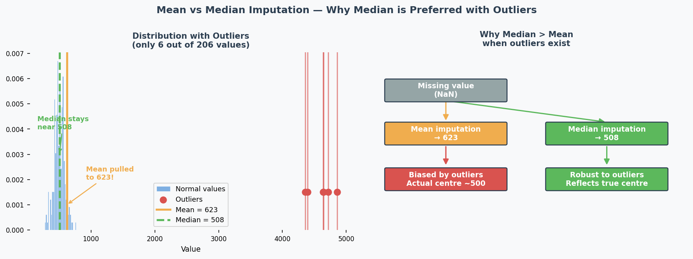
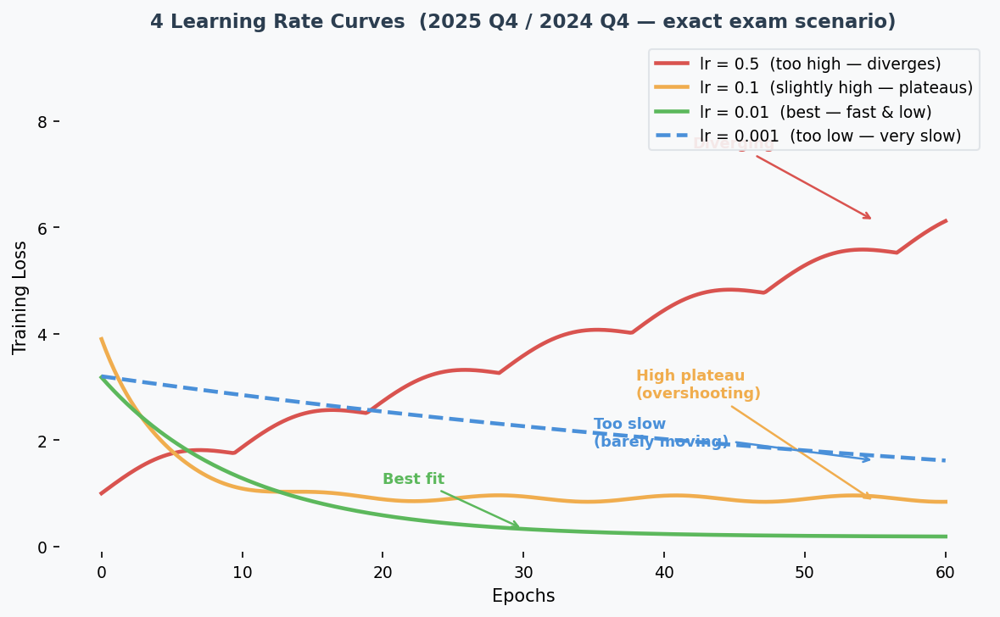
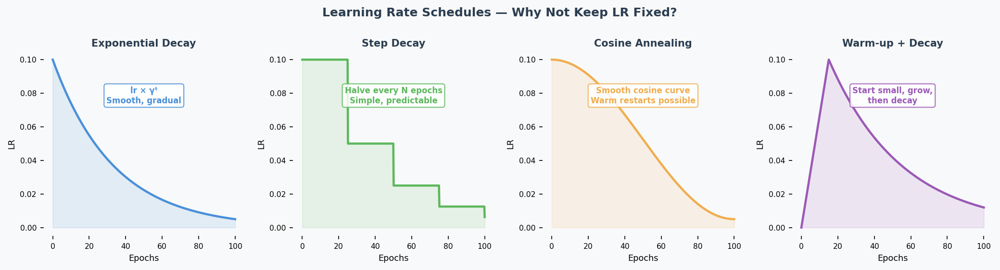
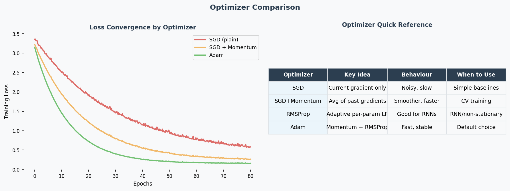
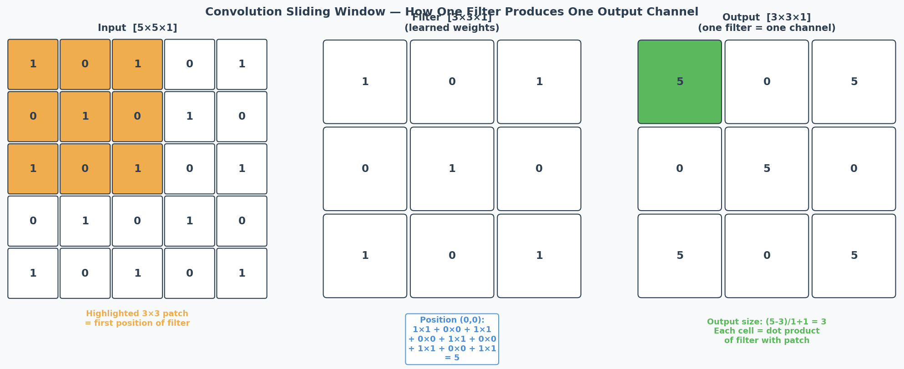
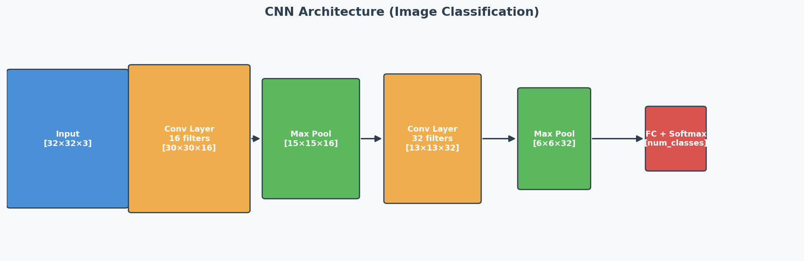
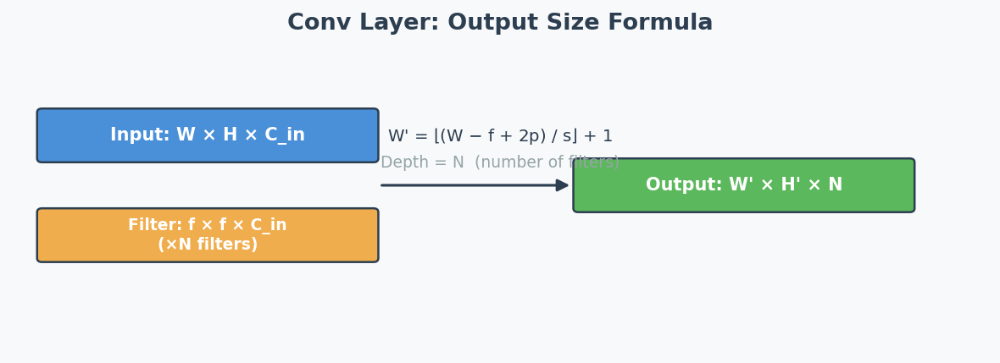
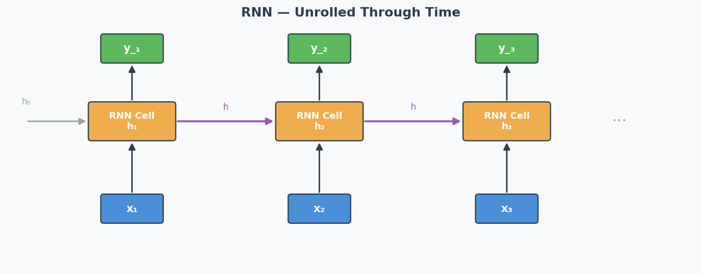
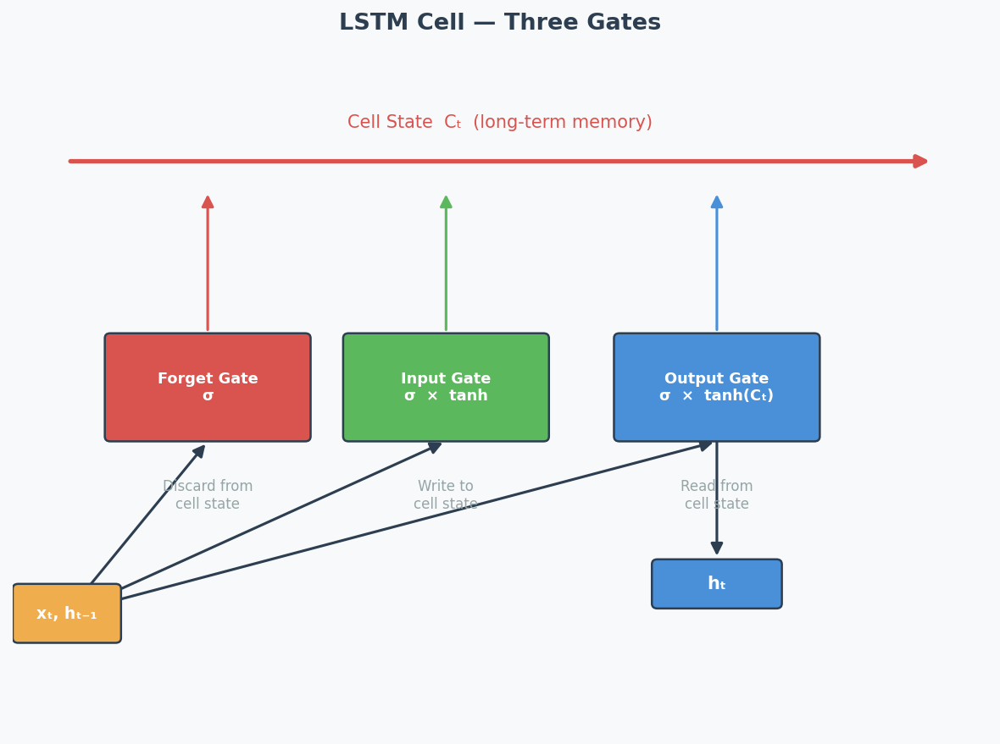
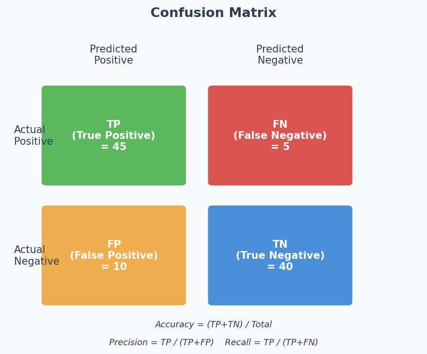

COMPSCI 714 — AI Architecture and Design: Exam Killer Book
How to Get an A in One Day (Feynman Method)
This book is reverse-engineered from every past exam (2024, 2025, Practice) with official marking schemes. Every concept is ranked by exam frequency.
Your One-Day Battle Plan (Feynman Whiteboard Method)
The Feynman Technique: Grab a blank sheet. Write the topic. Explain it out loud as if teaching a 12-year-old. When you get stuck, that’s your gap. Go back, learn it, explain again.
Morning (3 hrs) — Build Understanding
| Time | Action | What to Do |
|---|---|---|
| 9:00-9:30 | Read Part 0 | Skim exam analysis + frequency map. Know what’s coming. |
| 9:30-10:30 | Whiteboard Session 1 | For each MUST topic, read only the Feynman Draft. Close book. Grab paper. Talk out loud. Draw diagrams. Write what you know. Find your gaps. |
| 10:30-11:30 | Whiteboard Session 2 | Read formal sections for your gaps. Close book. Re-explain. Repeat until you can explain CNN calculations, bias-variance diagnosis, and transformer architecture from memory. |
| 11:30-12:00 | CNN Drill | Do 3 CNN dimension calculations by hand. This WILL be on the exam. |
Afternoon (3 hrs) — Practice Exam Questions
| Time | Action | What to Do |
|---|---|---|
| 13:00-13:55 | Mock Exam 1 | Time yourself. 55 minutes. No book. Simulate real conditions. |
| 13:55-14:30 | Check answers | Compare with answer key. Mark your weak spots. |
| 14:30-15:25 | Mock Exam 2 | Another timed attempt. |
| 15:25-16:00 | Review gaps | Re-read chapters for any remaining weak spots. |
Evening (2 hrs) — Cheat Sheet + Final Review
| Time | Action | What to Do |
|---|---|---|
| 19:00-20:00 | Make cheat sheet | Double-sided A4 handwritten (exam allows this!) |
| 20:00-21:00 | Final Feynman pass | Walk around. Explain each MUST topic out loud. No notes. |
What to Put on Your Cheat Sheet
Side 1 — Formulas & Calculations:
CNN CONV output: floor((n + 2p - f) / s) + 1
CNN POOL output: floor((n - f) / s) + 1
Valid padding: p = 0 Same padding: output = input size
Accuracy = (TP + TN) / (TP + TN + FP + FN)
Precision = TP / (TP + FP)
Recall = TP / (TP + FN)
F1 = 2 * P * R / (P + R)
Side 2 — Decision Trees & Key Points:
DIAGNOSIS FLOWCHART:
Train HIGH, Val LOW → Overfitting (high variance)
→ Fix: regularisation, more data, data augmentation, smaller model
Train LOW, Val LOW → Underfitting (high bias)
→ Fix: bigger model, more features, train longer, remove regularisation
Train HIGH, Val HIGH → Good fit!
OUTPUT ACTIVATION:
Multi-class (one label) → Softmax
Multi-label (many labels) → Sigmoid
Regression → Linear (no activation)
BATCH NORM EFFECTS: faster training, reduce vanishing gradients,
regularisation effect, less sensitive to weight init
Exam Format
| Detail | 2025 | 2024 |
|---|---|---|
| Time | 60 min (5 read + 55 write) | 60 min (5 read + 55 write) |
| Marks | 20 | 30 |
| Questions | 6 short-answer | 7 short-answer |
| Allowed | Double-sided handwritten notes | Double-sided page of notes |
Golden rule: “Quality over quantity” — be concise. A 3-sentence precise answer beats a full-page ramble.
考前心理建设（Mental Preparation）
作为中国留学生，你的 ML 概念理解可能比很多本地学生都强。你唯一需要练的是：
- 先说结论（不要铺垫）
- 用题目的数字（不要泛泛而谈）
- 连接词（because, therefore, however — 让逻辑清晰）
- 不要怕犯语法错误（内容正确比语法完美重要100倍）
记住：考官打分看的是你理解不理解，不是你英语好不好。 一个有小语法错误但逻辑清晰的答案 >> 一个语法完美但空洞的答案。
Exam Question-by-Question Analysis
Source: 2025 S1 Test + 2024 S1 Test + Practice Test (with official answers)
2025 S1 Mid-Semester Test (20 marks, 6 questions)
Q1: Dataset Cleaning [2 marks]
| Field | Detail |
|---|---|
| Type | Data table analysis → justify 4 cleaning steps |
| Module | A: Data Preprocessing |
| Difficulty | ★☆☆ |
| Keywords | missing values, median imputation, attribute removal, outlier detection |
| Intent | Can you read dataset statistics and make cleaning decisions? |
The Trick: Attribute 4 has 9995/10000 missing values → remove entirely. Attribute 2 has extreme min/max relative to mean → outliers exist. No missing values in categorical/binary → no need for most-frequent imputation.
Q2: Evaluation and Design Choices [3 marks]
| Field | Detail |
|---|---|
| Type | (a) Interpret loss curves → diagnose bias/variance (b) Suggest 2 improvements |
| Module | A: Bias-Variance |
| Difficulty | ★★☆ |
| Keywords | overfitting, high variance, high bias, regularisation, data augmentation |
| Intent | Can you read training curves and prescribe fixes? |
The Trick: Gap between training and validation = high variance (overfitting). Training loss still relatively high = possible high bias too. Each suggestion must target a DIFFERENT aspect.
Q3: Activation Functions [3 marks]
| Field | Detail |
|---|---|
| Type | (a) Explain dying ReLU + LeakyReLU fix (b) Choose output activation for multi-label |
| Module | B: MLP / Activation Functions |
| Difficulty | ★★☆ |
| Keywords | ReLU, LeakyReLU, dying neurons, sigmoid, multi-label vs multi-class |
| Intent | Do you understand activation function failure modes and design choices? |
The Trick: Multi-label (multiple anomalies per image) = sigmoid (independent per output). NOT softmax (which forces probabilities to sum to 1).
Q4: Learning Rate [4 marks]
| Field | Detail |
|---|---|
| Type | Match 4 loss curves to 4 learning rates |
| Module | A: Optimization |
| Difficulty | ★★☆ |
| Keywords | divergence, convergence, overshooting, learning rate |
| Intent | Can you visually identify learning rate effects? |
The Trick: Diverging (loss goes up) = 0.5. Slow descent = 0.001. Fast convergence to HIGH loss = 0.1 (overshoots optimum). Best convergence to LOW loss = 0.01.
Q5: Transformers [4 marks]
| Field | Detail |
|---|---|
| Type | (a) Explain masked attention in decoder (b) Explain ViT class token |
| Module | B: Transformer |
| Difficulty | ★★★ |
| Keywords | masked attention, autoregressive, ViT, [CLS] token, classification |
| Intent | Deep understanding of Transformer variants |
The Trick: (a) Mask prevents looking at future tokens → preserves autoregressive property during training. (b) [CLS] token aggregates info from all patches → efficient classification without processing all embeddings separately.
Q6: CNNs [4 marks]
| Field | Detail |
|---|---|
| Type | (a) Multiple choice: FC layer inputs (b) Show calculation |
| Module | B: CNN |
| Difficulty | ★★☆ |
| Keywords | valid padding, same padding, convolution, max pooling, flatten |
| Intent | Can you compute dimensions through a CNN pipeline? |
Answer: 180. Pipeline: [35,35,3] → Conv1(valid,k=7,s=2) → [15,15,10] → Pool1(k=2,s=2) → [7,7,10] → Conv2(same,k=3,s=1) → [7,7,20] → Pool2(k=2,s=2) → [3,3,20] → Flatten = 180.
2024 S1 Mid-Semester Test (30 marks, 7 questions)
Q1: Data Preprocessing [4 marks]
| Field | Detail |
|---|---|
| Type | Infer data characteristics from preprocessing pipeline |
| Module | A: Data Preprocessing |
| Difficulty | ★★☆ |
| Intent | Can you reverse-engineer what raw data looks like from the pipeline? |
Pipeline 1 (median imputer → standardisation → log transform): Numerical data, missing values, different scales, heavy-tailed distribution.
Pipeline 2 (most-frequent imputer → one-hot encoding): Categorical data, missing values, no ordinal relationship, not too many categories.
Q2: Design Choices [6 marks] — HIGHEST VALUE QUESTION
| Field | Detail |
|---|---|
| Type | Overfitting scenario (train=95%, val=60%), evaluate 3 fixes |
| Module | A: Bias-Variance |
| Difficulty | ★★☆ |
- More epochs: NO — worsens overfitting
- Larger dataset: YES — more diverse data helps generalise
- L2 regularisation: YES — penalises large weights, promotes simpler model
Q3: Evaluation [4 marks]
| Field | Detail |
|---|---|
| Type | Confusion matrix → calculate metrics → interpret |
| Module | E: Metrics |
Results: Accuracy=60%, Recall=100%, Precision=56%. The model predicts almost everything as positive. Looks like it catches all positives (perfect recall) but actually just labels everything positive (terrible precision).
Q4: Learning Rate and Optimisers [4 marks]
| Field | Detail |
|---|---|
| Type | (1) LR schedule example + benefit (2) Explain momentum |
Key answers: (1) Exponential decay — fast at start, fine-tune near optimum. (2) Momentum = exponentially decaying average of past gradients → smoother updates, speeds up convergence.
Q5: RNN and Transformer [4 marks]
| Field | Detail |
|---|---|
| Type | (1) Sequential processing: advantage AND drawback (2) How Transformer fixes it |
Key: (1) Advantage: naturally captures order. Drawback: can’t parallelise → slow for long sequences. (2) Transformer: processes all tokens in parallel via embeddings + adds positional encoding for order.
Q6: CNN Feature Map [4 marks]
| Field | Detail |
|---|---|
| Type | Calculate dimensions after conv and pooling layers |
Answers: Conv: ((50+0-5)/3)+1 = 16 → [16,16,10]. AvgPool: ((50-5)/5)+1 = 10 → [10,10,5]. MaxPool: same dimensions (only values differ).
Q7: DNN Training [4 marks]
| Field | Detail |
|---|---|
| Type | (1) Why deep nets are hard to train (2) Two strategies to help |
Key: (1) Vanishing/exploding gradients + overfitting + longer training. (2) Batch norm, skip connections (ResNet), better optimisers (Adam), LSTM/GRU.
Practice Test (~32 marks, 7 questions)
Q1: Data Pre-processing [5 marks]
Two approaches to missing data + when to use each. Remove attribute (when mostly missing) or impute values (when reasonable amount missing).
Q2: DNN and Generalisation [5 marks]
High bias → underfitting → increase model, add data, transfer learning. High variance → overfitting → regularisation, more data, reduce model.
Q3: Design Choices [6 marks]
Underfitting scenario (train=val=50%). Increase size = YES. Zero init = NO (symmetry problem). Dropout = NO (regularisation doesn’t help underfitting).
Q4: Evaluation [3 marks]
Accuracy=70%, Recall=33%. Accuracy misleading due to class imbalance — model bad at finding positives.
Q5: Batch Normalisation [5 marks]
Effects: speeds up training, reduces vanishing gradients, regularisation effect, reduces weight init sensitivity.
Q6: Attention and Transformers [4 marks]
Multi-head attention = stacks multiple attention heads with separate Q/K/V. Benefit: focuses on different aspects simultaneously.
Q7: CNNs [5 marks]
Reverse-engineer hyperparameters from diagram. Early layers = edge detectors (low-level features), deeper layers = complex features.
Exam Topic Frequency Map
The Heat Map: What WILL Be on Your Exam
| Topic | 2025 | 2024 | Practice | Count | Priority |
|---|---|---|---|---|---|
| Bias-Variance / Design Choices | Q2 (3m) | Q2 (6m) | Q2+Q3 (11m) | 4 | MUST |
| CNN Calculations | Q6 (4m) | Q6 (4m) | Q7 (5m) | 3 | MUST |
| Transformer / Attention | Q5 (4m) | Q5 (4m) | Q6 (4m) | 3 | MUST |
| Data Preprocessing | Q1 (2m) | Q1 (4m) | Q1 (5m) | 3 | MUST |
| Learning Rate / Optimizers | Q4 (4m) | Q4 (4m) | — | 2 | HIGH |
| Confusion Matrix Metrics | — | Q3 (4m) | Q4 (3m) | 2 | HIGH |
| Activation Functions | Q3 (3m) | — | — | 1 | MED |
| RNN vs Transformer | — | Q5 (4m) | — | 1 | MED |
| DNN Training Challenges | — | Q7 (4m) | — | 1 | MED |
| Batch Normalisation | — | — | Q5 (5m) | 1 | MED |
Priority Guide
| Priority | Rule | Your Action |
|---|---|---|
| MUST | Every exam, >= 3 appearances | Master completely. Can explain on whiteboard from memory. |
| HIGH | 2 out of 3 exams | Understand well. Can calculate and explain. |
| MED | 1 out of 3 exams | Know key points. Can write 3-4 sentences if asked. |
The 80/20 Rule: 4 Topics = ~65% of All Marks
1. Bias-Variance + Design Choices (~20% of all marks)
- Diagnose overfitting vs underfitting from numbers/curves
- For each fix: say YES/NO + link to the specific diagnosis
- Never confuse: regularisation fights overfitting, NOT underfitting
2. CNN Calculations (~15% of all marks)
- Two formulas: conv output + pool output
- Practice multi-layer pipeline calculations
- Know valid vs same padding
3. Transformer / Attention (~15% of all marks)
- Masked attention = prevent seeing future tokens
- Multi-head attention = multiple perspectives simultaneously
- ViT: patches → embeddings → [CLS] token → classification
4. Data Preprocessing (~15% of all marks)
- Which imputation for which data type
- When to remove attribute vs impute
- Read pipeline → infer data characteristics
+ 2 More for Safety (~20% more marks)
- Learning Rate — curve shapes, momentum, LR schedules
- Confusion Matrix — calculate accuracy/precision/recall, spot class imbalance traps
Total Marks by Topic (All Exams Combined)
Bias-Variance/DC ████████████████████ 20 marks
CNN █████████████ 13 marks
Transformer ████████████ 12 marks
Data Preprocessing ███████████ 11 marks
Learning Rate ████████ 8 marks
Eval Metrics ███████ 7 marks
Batch Norm █████ 5 marks
DNN Training ████ 4 marks
RNN ████ 4 marks
Activation Func ███ 3 marks
Teacher’s Exam Style Analysis
Core Philosophy
“We privilege quality over quantity” — concise, clear, correct.
The teacher tests applied understanding, not memorisation. Every question gives a scenario and asks you to reason about it.
Question Patterns That Repeat Every Exam
Pattern 1: “Evaluate These Suggestions” (EVERY EXAM)
Format: Given model settings + results, evaluate 2-3 suggestions.
How to nail it:
- FIRST: diagnose the problem (overfitting or underfitting?)
- THEN: for each suggestion, say YES/NO
- THEN: explain WHY by connecting to your diagnosis
Scoring: 2 marks each (1 for answer, 1 for reasoning connected to scenario)
| Scenario | Diagnosis | What Helps | What Doesn’t |
|---|---|---|---|
| Train HIGH, Val LOW | Overfitting | Regularisation, more data, data aug | More epochs, bigger model |
| Train LOW, Val LOW | Underfitting | Bigger model, more features | Regularisation, dropout |
Pattern 2: CNN Dimension Calculation (EVERY EXAM)
Format: Given architecture spec → compute output at each layer → find FC input size.
How to nail it: Write this for EVERY layer:
[Layer Name]
Input: [H, W, C]
Formula: ((H + 2p - f) / s) + 1
Output: [H', W', C']
Pattern 3: Transformer Two-Part Question (EVERY EXAM)
Format: (a) Explain mechanism X. (b) Why is it useful?
How to nail it: Part (a) = WHAT it does. Part (b) = WHY it matters (concrete benefit).
Pattern 4: Loss Curve / Metric Interpretation (2/3 EXAMS)
Format: Given graph or numbers → diagnose + suggest fix.
Traps the Teacher Sets (And How to Avoid Them)
| Trap | What Students Do Wrong | Correct Answer |
|---|---|---|
| Underfitting + regularisation | “Use dropout to improve!” | NO — dropout fights overfitting, this is underfitting |
| Multi-label output activation | “Use softmax” | NO — sigmoid (independent per output) |
| Zero weight initialisation | “Smaller weights = better” | NO — zero creates symmetry, neurons can’t differentiate |
| More epochs when overfitting | “Train longer to learn more” | NO — worsens overfitting |
| High accuracy with imbalanced data | “70% accuracy = good model” | Check precision/recall — might just predict majority class |
| Max vs Avg pooling output size | “Different pooling = different size” | SAME size, only values differ |
Sentence Patterns in Questions → What They Want
| Question Says | They Actually Want |
|---|---|
| “Explain if it is likely to improve…” | YES/NO + reasoning linked to the specific scenario |
| “Describe performance in terms of bias and variance” | Identify overfitting/underfitting from curves |
| “Briefly justify” | 2-3 sentences MAX with the key reason |
| “Show your calculation steps” | Formula → numbers → result (at each layer) |
| “What do you think about this model?” | Go BEYOND numbers — what is the model actually doing? |
| “Explain in your own words” | Show understanding, not textbook recitation |
Concepts That Always Appear Together
Bias-Variance ←→ Regularisation ←→ Design Choices
(one question covers all three — master the connections)
CNN Dimensions ←→ Valid/Same Padding ←→ FC Layer Size
(pipeline calculation from start to end)
Transformer ←→ Masked Attention ←→ Positional Encoding ←→ ViT
(mechanism + why it exists)
Loss Curves ←→ Learning Rate ←→ Optimizers
(visual diagnosis skill)
Confusion Matrix ←→ Class Imbalance ←→ Misleading Accuracy
(numbers game — always check precision AND recall)
Module A — Data Preprocessing
Exam Importance
MUST | Every exam has a data preprocessing question (2025 Q1, 2024 Q1, Practice Q1)
Feynman Draft
Imagine you’re a chef and someone delivers raw ingredients to your kitchen. Some tomatoes are rotten (outliers), some boxes are missing labels (missing values), some ingredients are measured in grams while others are in kilograms (different scales). You can’t cook with this mess — you need to clean and prepare everything first. That’s data preprocessing.
The 4 things you might need to do:

-
Missing Values（缺失值） — Some cells in your spreadsheet are empty
- Numerical data? → Fill with median (robust to outliers) or mean — this is called Imputation（插补/填补）
- Categorical data? → Fill with most frequent value (mode)
- Almost all missing? → Remove the entire column (attribute)
-
Outliers（异常值/离群值） — Values that are absurdly far from the rest
- Look at: is max/min way larger than mean + a few standard deviations?
- Example: mean=500, std=100, but max=50000 → definitely outliers
-
Scaling（缩放） — Features on different scales confuse the model
- Standardisation（标准化） (z-score): $ x’ = (x - \mu) / \sigma $ → mean=0, std=1
- Use when features have different units/ranges
-
Encoding（编码） — Models need numbers, not text
- One-hot encoding（独热编码）: turn “Red/Blue/Green” into [1,0,0], [0,1,0], [0,0,1]
- Use for categorical data with NO natural ordering
Toy Example: Dataset with 10,000 samples:
| Attribute | Type | Missing | Mean | Std | Max | Min |
|---|---|---|---|---|---|---|
| Attr 1 | Binary | 0 | / | / | / | / |
| Attr 2 | Numerical | 15 | 500 | 100 | 50000 | -1000 |
| Attr 3 | Categorical | 0 | / | / | / | / |
| Attr 4 | Numerical | 9995 | 1.2 | 0.2 | 2.0 | 0.0 |
| Attr 5 | Numerical | 23 | 25360 | 30215 | 125000 | -75000 |
Analysis:
- Most-frequent imputation? NO — binary and categorical have zero missing values
- Median imputation（中位数插补）? YES — Attr 2 (15 missing) and Attr 5 (23 missing) have some missing numerical values; median is better than mean because outliers exist
- Remove attribute（移除特征）? YES — Attr 4 has 9995/10000 missing → useless, imputation would create fake data
- Outlier removal（异常值移除）? YES — Attr 2’s max (50000) is ~495 standard deviations from the mean!
Common Misconception: Students think “always impute” is the right answer. But if 99.95% of values are missing, imputation creates misleading data — just remove it.
Core Intuition: Preprocessing matches each data problem to the right cleaning tool — like choosing the right kitchen tool for each ingredient.
The Pipeline Reading Trick (2024 Exam Favourite)
The teacher loves giving you a pipeline diagram and asking “what does the raw data look like?”
Reverse-engineer the pipeline:
| Pipeline Step | What It Tells You About Raw Data |
|---|---|
| Median imputer（中位数填补器） | Numerical data with missing values; likely has outliers (median is more robust than mean) |
| Most-frequent imputer（众数填补器） | Categorical data with missing values |
| Standardisation（标准化） | Features on different scales |
| Log transformation（对数变换） | Heavy-tailed distribution（重尾分布） (some very large values) |
| One-hot encoding（独热编码） | Categorical data, not too many categories, no natural ordering |
Example from 2024 Q1:
- Pipeline 1: median imputer → standardisation → log transform
- → Numerical data, missing values, different scales, heavy-tailed
- Pipeline 2: most-frequent imputer → one-hot encoding
- → Categorical data, missing values, no ordinal relationship
Past Exam Questions
2025 Q1 [2m]: Given dataset table, justify 4 cleaning steps (yes/no + why) 2024 Q1 [4m]: Given 2 pipelines, describe characteristics of raw data Practice Q1 [5m]: Describe 2 approaches to missing data + when each is preferred
中文思维 → 英文输出
| 你脑中的中文想法 | 考试中应该写的英文 |
|---|---|
| 这个特征缺失值太多了，应该删掉 | “The attribute should be removed because [X]% of values are missing, making imputation unreliable.” |
| 用中位数比均值好，因为有离群值 | “Median imputation is preferred over mean because the data contains outliers — the median is robust to extreme values.” |
| 数据需要标准化因为量纲不同 | “Standardisation is necessary because features are on different scales.” |
| 这个是分类数据，用独热编码 | “One-hot encoding is applied because the data is categorical with no natural ordering.” |
| 从pipeline反推原始数据特征 | “The use of [step] suggests that the raw data [characteristic].” |
| 这个数据有异常值，最大值太离谱了 | “The attribute contains outliers — the maximum value is [X] standard deviations from the mean.” |
| 二元数据不需要填补 | “Binary attributes with no missing values do not require imputation.” |
本章 Chinglish 纠正
| Chinglish (avoid) | Correct English |
|---|---|
| “The data has a lot of missing” | “The data contains a significant proportion of missing values” |
| “We should delete this feature” | “This attribute should be removed” |
| “Use median because it is more better” | “Median is preferred because it is more robust to outliers” |
| “The data need to be standard” | “The data requires standardisation” |
| “This feature is category type” | “This is a categorical attribute” |
| “The max value is too big, it is outlier” | “The maximum value is [X] standard deviations above the mean, indicating the presence of outliers” |
Whiteboard Self-Test
- Can you list 4 data cleaning operations and when to use each?
- Given a dataset summary table, can you justify each cleaning step?
- Given a pipeline diagram, can you describe what the raw data looks like?
- Do you know why median is preferred over mean for imputation with outliers?
Bias-Variance Tradeoff & Design Choices
Exam Importance
MUST | The single most tested topic: 4 questions across all exams, ~20 marks total
Feynman Draft
Imagine you’re learning to throw darts at a bullseye.
-
High bias（高偏差） = you consistently miss in the same direction. Your aim is systematically off. You’re too rigid — like using only your wrist instead of your whole arm. This is underfitting（欠拟合） — your model is too simple to capture the real pattern.
-
High variance（高方差） = your throws are scattered all over the board. Sometimes you hit the bullseye, sometimes the wall. You’re too sensitive to tiny movements. This is overfitting（过拟合） — your model memorises the training data noise instead of learning the real pattern.
How do you diagnose this from training curves?
| What You See | Diagnosis | Name |
|---|---|---|
| Training accuracy HIGH, Validation accuracy LOW | High variance | Overfitting |
| Training accuracy LOW, Validation accuracy LOW | High bias | Underfitting |
| Training accuracy HIGH, Validation accuracy HIGH | Good fit! | Keep it |
Toy Example with Numbers:
| Scenario | Train Acc | Val Acc | Diagnosis | What to Do |
|---|---|---|---|---|
| A | 95% | 60% | Overfitting（过拟合） | Regularisation, more data |
| B | 50% | 50% | Underfitting（欠拟合） | Bigger model, remove regularisation |
| C | 92% | 88% | Good fit | Ship it |
Common Misconception: “If validation accuracy is low, always add regularisation.” WRONG! Regularisation helps overfitting (A), but makes underfitting (B) even WORSE because it constrains the model further.
Core Intuition: Bias（偏差） = model too simple for the problem. Variance（方差） = model too complex for the data amount.
The Design Choices Decision Tree (EXAM ESSENTIAL)
This is the teacher’s favourite question format. Memorise this:
Step 1: DIAGNOSE
Train >> Val? → Overfitting (high variance)
Train ≈ Val ≈ low? → Underfitting (high bias)
Step 2: PRESCRIBE
If OVERFITTING（过拟合）:
✅ Regularisation（正则化） (L1, L2, Dropout) → constrains model complexity
✅ More/diverse training data → helps generalise（泛化）
✅ Data augmentation（数据增强） → more variety without new data
✅ Batch normalisation（批量归一化） → regularising effect
✅ Early stopping（提前停止） → stop before overfitting
✅ Reduce model size → less capacity to memorise
❌ More epochs → makes it WORSE
❌ Bigger model → makes it WORSE
If UNDERFITTING（欠拟合）:
✅ Increase model size (more layers/neurons) → more capacity（容量）
✅ Train longer → give it time to learn
✅ Remove/reduce regularisation → stop constraining
✅ Better features / more data → more signal
✅ Transfer learning（迁移学习） → start from pretrained model
❌ Regularisation → makes it WORSE
❌ Dropout → makes it WORSE
❌ Smaller model → makes it WORSE
Past Exam Questions with Answer Logic
2024 Q2 [6 marks] — Overfitting Scenario
Setup: 5 hidden layers, ReLU, 20 neurons/layer, 1000 epochs. Train=95%, Val=60%.
| Suggestion | Answer | Reasoning |
|---|---|---|
| Train for 2000 epochs | NO | Already overfitting → more training = memorise more noise |
| Larger dataset | YES | More diverse data helps learn general patterns, not noise |
| L2 regularisation | YES | Penalises large weights → simpler, more generalisable model |
Practice Q3 [6 marks] — Underfitting Scenario
Setup: 2 hidden layers, ReLU, 5 neurons/layer, 2000 epochs, L1 regularisation. Train=50%, Val=50% (achievable=95%).
| Suggestion | Answer | Reasoning |
|---|---|---|
| Increase network size | YES | Underfitting = model too small → need more capacity |
| Initialise weights to 0 | NO | Creates symmetry → all neurons learn identical things → can’t differentiate features |
| Use dropout | NO | Dropout is regularisation → fights overfitting, not underfitting |
2025 Q2 [3 marks] — Curve Interpretation
Setup: Training curves after 20 epochs showing gap between train/val accuracy and diverging loss curves.
(a) Diagnose: High variance (overfitting) — clear gap between training and validation. Possibly also high bias if training loss is still high.
(b) Two changes (each targeting different aspect):
- Regularisation (e.g., L2, dropout) → reduces overfitting
- Data augmentation → more varied training data → better generalisation
- Batch normalisation → has regularising effect
- Increase model size (if bias is high) → more capacity to fit
How to Read Training Curves

Quick reference table:
| What you see on the plot | Diagnosis | Fix |
|---|---|---|
| Train loss ↓, Val loss ↑ after a point | Overfitting（过拟合） (high variance) | Dropout, L2, more data, early stop |
| Both losses stay HIGH | Underfitting（欠拟合） (high bias) | Bigger model, more epochs, less regularisation |
| Loss oscillates / explodes | LR too high | Reduce LR ×10, use scheduler |
| Both losses barely move | LR too low | Increase LR, use warm-up |
| Both losses ↓ and converge | Good fit | Keep going or early stop |
English Expression Templates
Diagnosing:
- “The model displays high variance as there is a clear gap between training and validation accuracy.”
- “This indicates overfitting, where the model fits the training data too closely but fails to generalise.”
Prescribing:
- “Applying regularisation can help reduce overfitting by limiting model complexity.”
- “Training on a larger dataset might help the model learn more general patterns.”
- “This will not help because the model is already underfitting — adding regularisation would constrain it further.”
中文思维 → 英文输出
| 你脑中的中文想法 | 考试中应该写的英文 |
|---|---|
| 过拟合了，训练高验证低 | “The model is overfitting — the training accuracy (X%) is significantly higher than the validation accuracy (Y%).” |
| 欠拟合，两个都很低 | “The model is underfitting, as both training and validation accuracies are low, indicating insufficient model capacity.” |
| 加正则化能改善 | “Applying regularisation is likely to improve validation accuracy by constraining model complexity.” |
| 不能再多训练了，会更差 | “Training for more epochs will not help — it is likely to worsen overfitting as the model continues to memorise training noise.” |
| dropout不能解决欠拟合 | “Dropout will not help because the model is underfitting. Dropout reduces effective capacity, which would worsen the problem.” |
| 模型太简单了，学不到东西 | “The model lacks sufficient capacity to capture the underlying patterns in the data.” |
| 需要更多数据来泛化 | “Increasing the dataset size is likely to help the model generalise better by providing more diverse examples.” |
| 权重初始化为0不行 | “Initialising all weights to zero creates symmetry — all neurons learn identical features, preventing the network from differentiating.” |
本章 Chinglish 纠正
| Chinglish (avoid) | Correct English |
|---|---|
| “The model is overfit” | “The model is overfitting” (use progressive form for the state) |
| “It should add regularisation” | “Applying regularisation would help” |
| “The gap is too big” | “There is a significant discrepancy between training and validation performance” |
| “More data can solve” | “Increasing the dataset size is likely to help the model generalise better” |
| “The model is not enough complex” | “The model has insufficient capacity” |
| “Train more epoch will be worse” | “Training for more epochs is likely to worsen overfitting” |
Whiteboard Self-Test
- Can you draw the bias-variance diagnosis table from memory?
- Given train=95%/val=55%, what’s the diagnosis? What 3 things help?
- Given train=50%/val=50%, what’s the diagnosis? Why does dropout NOT help?
- Can you explain why zero weight initialisation is bad?
- Can you explain why more epochs worsens overfitting?
Optimization: Learning Rate, Schedules & Optimizers
Exam Importance
HIGH | 2 out of 3 exams (2025 Q4, 2024 Q4) — 8 marks total
Feynman Draft
Imagine you’re blindfolded on a hilly landscape, trying to find the lowest valley. You take steps downhill based on the slope you feel under your feet. That’s Gradient Descent（梯度下降）.
The learning rate（学习率） is your step size:
- Too big (0.5): You leap so far you jump OVER the valley and end up on the other side, maybe even higher. Your loss goes UP. This is divergence（发散）.
- Too small (0.001): You take tiny baby steps. You’ll eventually get there, but it takes forever. This is slow convergence（收敛缓慢）.
- Just right (0.01): You stride confidently into the valley. Fast convergence（收敛） to low loss.
- Slightly too big (0.1): You get near the valley but keep overshooting（超调） back and forth, settling at a suboptimal point.
The 4 Loss Curves — This Exact Question Was on 2025 AND 2024:

| Curve | Shape | Learning Rate | Why |
|---|---|---|---|
| Red (solid) | Loss goes UP / oscillates | 0.5 (highest) | Steps too large → jumps over optimum repeatedly |
| Orange (solid) | Fast drop but plateaus HIGH | 0.1 | Overshoots, settles at suboptimal point |
| Green (solid) | Fast drop to LOWEST loss | 0.01 | Sweet spot — fast convergence to good minimum |
| Blue (dashed) | Very slow descent | 0.001 (lowest) | Tiny steps → barely moves |
Common Misconception: “Curve 2 could be lr=0.001 because it gets stuck.” While small lr CAN get stuck in local minima, the teacher’s intended answer is: converging to a high loss = lr slightly too high (overshooting), not too low. Match the explanation consistently to the other curves.
Core Intuition: Learning rate controls step size — too big overshoots, too small is slow, just right converges fast to a good minimum.
Learning Rate Schedules（学习率调度） (2024 Q4.1)
What: Change the learning rate during training instead of keeping it fixed.
Why: Start with large steps (explore quickly), then shrink steps (fine-tune near optimum（最优点）).

| Schedule | How It Works | Benefit |
|---|---|---|
| Exponential decay（指数衰减） | $lr_t = lr_0 \times \gamma^t$ | Smooth, gradual decrease |
| Step decay（阶梯衰减） | Halve lr every N epochs | Simple, predictable |
| Cosine annealing（余弦退火） | lr follows cosine curve | Warm restarts possible |
| Warmup（预热） | Start small, increase, then decrease | Avoids early instability |
Exam answer (1 example is enough): “Exponential learning rate decay reduces the lr as training progresses. This is beneficial because it allows taking large steps initially to move quickly towards an optimum, then smaller steps to avoid overshooting it.”
Momentum（动量） (2024 Q4.2)
Analogy: Imagine pushing a ball downhill. Without momentum, the ball moves exactly where the current slope points — every tiny bump changes its direction. With momentum, the ball builds up speed and rolls smoothly past small bumps, heading in the general downhill direction.
Mechanism: Instead of updating weights（权重） using ONLY the current gradient（梯度）, momentum keeps a running average of past gradients:
$$v_t = \beta \cdot v_{t-1} + (1-\beta) \cdot \nabla L$$ $$w = w - lr \cdot v_t$$
Where $\beta$ (typically 0.9) controls how much past gradients matter.
Effects:
- Smooths updates: Averages out noisy gradients → more stable direction
- Accelerates convergence（加速收敛）: Builds up speed in consistent downhill directions
- Escapes shallow local minima（局部最小值）: Momentum carries the ball through small bumps
Key Optimizers Quick Reference

| Optimizer | Mechanism | When to Use |
|---|---|---|
| SGD（随机梯度下降） | Fixed learning rate, uniform for all parameters | Baseline; simple problems; when you want full control |
| SGD + Momentum（动量） | Accumulates past gradients (velocity term), smooths updates | Noisy gradients; saddle points（鞍点）; most standard training |
| RMSProp | Adapts lr per-parameter using running average of squared gradients — divides by √(avg of grad²) | Non-stationary problems; RNNs; uneven gradient scales |
| Adam | Combines momentum (1st moment) + RMSProp (2nd moment) — adaptive（自适应） lr with momentum smoothing | Best default choice; fast convergence; works well out-of-the-box for most tasks |
Why Adam is the go-to optimizer (2024 Q7 — “better optimisers”): Adam adapts the learning rate for each parameter individually. Parameters with large gradients get smaller steps; parameters with small gradients get larger steps. This is especially helpful for deep networks where gradient magnitudes vary wildly across layers — it directly mitigates the vanishing/exploding gradient problem（梯度消失/梯度爆炸） at the optimiser level.
When SGD still wins: For very large-scale training (e.g., ImageNet), well-tuned SGD + momentum + lr schedule can generalise better than Adam. Adam sometimes converges to sharper minima, while SGD finds flatter (more generalisable) minima.
Past Exam Questions
2025 Q4 [4m]: Match 4 loss curves to learning rates 0.5, 0.1, 0.01, 0.001. Justify each. 2024 Q4 [4m]: (1) Give LR schedule example + why beneficial. (2) Explain momentum.
中文思维 → 英文输出
| 你脑中的中文想法 | 考试中应该写的英文 |
|---|---|
| loss在震荡上升，学习率太大 | “The loss curve diverges, indicating the learning rate is too high — the gradient updates overshoot the minimum.” |
| loss下降很慢 | “The loss decreases very slowly, suggesting the learning rate is too small.” |
| 学习率衰减好处 | “A learning rate schedule allows fast initial convergence while enabling fine-tuning near the optimum.” |
| 动量能平滑更新 | “Momentum smooths the optimisation trajectory by maintaining an exponentially decaying average of past gradients.” |
| Adam是最好的默认选择 | “Adam is an effective default optimiser as it adapts the learning rate per parameter.” |
| 曲线先降后升，过拟合了 | “The validation loss initially decreases then increases, indicating the onset of overfitting.” |
| 这条曲线收敛到一个比较高的值 | “The loss converges to a suboptimal value, suggesting the learning rate is slightly too high, causing the updates to overshoot.” |
本章 Chinglish 纠正
| Chinglish (avoid) | Correct English |
|---|---|
| “The learning rate is too much” | “The learning rate is too high” |
| “Loss is going up means overfitting” | “A diverging loss indicates the learning rate is too high, not overfitting” |
| “Adam is the best optimizer” | “Adam is generally an effective default choice” (hedge appropriately in academic writing) |
| “The curve is vibrating” | “The loss curve oscillates” |
| “Learning rate should be decay” | “A learning rate schedule should be applied” |
| “Momentum can help the speed” | “Momentum accelerates convergence by smoothing the gradient updates” |
Whiteboard Self-Test
- Can you draw 4 loss curves for different learning rates and label each?
- Can you explain why a diverging loss curve means the lr is too high?
- Can you name one LR schedule and explain why it helps?
- Can you explain momentum in your own words (not just the formula)?
Regularisation & Batch Normalisation
Exam Importance
HIGH | Tested directly (Practice Q5) and indirectly in every Design Choices question
Feynman Draft
Imagine you’re studying for an exam. Overfitting（过拟合） is like memorising the textbook word-for-word — you ace the practice test but fail the real exam because you memorised answers instead of understanding concepts.
Regularisation（正则化） is like a study technique that forces you to actually understand: someone randomly covers parts of your notes (Dropout（随机失活）), or penalises you for writing overly complicated answers (L1/L2).
L1 and L2 Regularisation
Think of weights as “how much attention” the model pays to each feature.

-
L2 (Ridge / 岭回归): Adds penalty proportional to weight² → pushes ALL weights to be small but non-zero — this is called weight decay（权重衰减）. Like telling someone “you can use all ingredients, but use them sparingly.”
$$L_{total} = L_{original} + \lambda \sum w_i^2$$
-
L1 (Lasso): Adds penalty proportional to |weight| → pushes some weights to exactly 0. Like telling someone “pick only the most important ingredients and ignore the rest.” Creates sparse（稀疏） models — performing automatic feature selection（特征选择）.
$$L_{total} = L_{original} + \lambda \sum |w_i|$$
Dropout

During training, randomly “turn off” neurons with probability $p$ (typically 0.5). Forces the network to learn redundant representations — no single neuron can be relied on.
Key: Dropout is ONLY active during training. During inference, all neurons are used (but outputs are scaled by 1-p to compensate).
Batch Normalisation（批量归一化） (Practice Q5 — 5 marks)

What: Normalise（归一化） the inputs to each layer by subtracting mean and dividing by std of the current mini-batch（小批量）.
$$\hat{x} = \frac{x - \mu_{batch}}{\sqrt{\sigma^2_{batch} + \epsilon}}$$
Then apply learnable scale ($\gamma$) and shift ($\beta$): $y = \gamma \hat{x} + \beta$
4 Effects (know at least 2 for the exam):
| Effect | Explanation |
|---|---|
| Speeds up training（加速训练） | Keeps activations（激活值） in a good range → gradients stay healthy → can use larger learning rates |
| Reduces vanishing/exploding gradients（减少梯度消失/爆炸） | Normalisation prevents activations from becoming extremely small or large |
| Regularisation effect（正则化效果） | Mini-batch statistics add noise to activations → acts like implicit regularisation → reduces overfitting |
| Reduces sensitivity to weight initialisation（降低对权重初始化的敏感性） | Bad initial weights would create extreme activations → batch norm corrects this automatically |
Common Misconception: “Batch norm is just standardisation.” No — it also has learnable parameters ($\gamma$, $\beta$) that let the network undo the normalisation if that’s beneficial. And the normalisation per mini-batch introduces noise that has a regularising effect.
Core Intuition: Regularisation = purposely limiting model complexity to prevent memorisation and force generalisation.
When to Use What (Design Choices Context)
| Technique | Fights | Don’t Use When |
|---|---|---|
| L2 regularisation | Overfitting | Underfitting |
| L1 regularisation | Overfitting | Underfitting |
| Dropout | Overfitting | Underfitting |
| Batch normalisation | Various (speeds training, mild regularisation) | — (almost always helps) |
| Early stopping | Overfitting | Underfitting |
| Data augmentation | Overfitting | — |
Early Stopping（提前停止）
What: Monitor validation loss during training. When it stops improving for $N$ consecutive epochs (patience), stop training — even if training loss is still decreasing.
Why it works: The point where validation loss starts rising is exactly the point where the model begins memorising training noise. Stopping there gives you the best generalisation.
In practice: Save a checkpoint of model weights at each validation improvement. When patience runs out, roll back to the best checkpoint.
L1 Sparsity（稀疏性） vs L2 Shrinkage（收缩） — Why the Difference?
Geometric intuition: L1’s constraint region is a diamond (corners touch axes); L2’s is a circle. The optimal point is where the loss contour（损失等高线） meets the constraint boundary. The diamond’s sharp corners align with axes → weights are pushed to exactly 0. The circle has no corners → weights are pushed toward 0 but never reach it.
Practical consequence:
- Use L1 when you suspect many features are irrelevant (automatic feature selection)
- Use L2 when all features are somewhat useful (just reduce their magnitudes)
- The hyperparameter（超参数） λ controls regularisation strength（正则化强度）: higher λ = stronger penalty. If λ is too high → underfitting（欠拟合） (weights too constrained); too low → minimal regularisation effect.
Critical exam trap: If the model is underfitting (train=val=low), adding regularisation makes it WORSE by further constraining the model.
Past Exam Questions
Practice Q5 [5m]: Explain 2 effects of batch normalisation (2 marks each: name + explanation). 2024 Q2: L2 regularisation as a suggestion for overfitting → YES, explain why. Practice Q3: Dropout as a suggestion for underfitting → NO, explain why. 2025 Q2b: Suggest changes for overfitting → regularisation is a valid answer.
中文思维 → 英文输出
| 你脑中的中文想法 | 考试中应该写的英文 |
|---|---|
| L2让权重变小 | “L2 regularisation penalises large weights, encouraging the model to learn a simpler, more generalisable representation.” |
| L1让一些权重变成0 | “L1 regularisation drives some weights to exactly zero, performing automatic feature selection.” |
| Dropout让网络不依赖某个神经元 | “Dropout prevents co-adaptation by randomly deactivating neurons, forcing the network to learn distributed representations.” |
| Batch norm加速训练 | “Batch normalisation speeds up training by keeping activations in a stable range, allowing higher learning rates.” |
| 正则化不能解决欠拟合 | “Regularisation constrains model complexity, which helps with overfitting but worsens underfitting.” |
| 正则化强度太大了 | “Excessive regularisation over-constrains the model, leading to underfitting.” |
| L1能做特征选择 | “L1 regularisation induces sparsity, effectively performing feature selection by eliminating irrelevant weights.” |
本章 Chinglish 纠正
| Chinglish (avoid) | Correct English |
|---|---|
| “Dropout can prevent the overfit” | “Dropout helps prevent overfitting” |
| “Batch norm makes training more faster” | “Batch normalisation accelerates training” |
| “The regularisation is too strong so the model is underfit” | “Excessive regularisation over-constrains the model, leading to underfitting” |
| “L1 makes some weight become zero” | “L1 regularisation drives certain weights to exactly zero” |
| “Batch norm is just standardisation” | “Batch normalisation normalises activations per mini-batch, with learnable parameters and an implicit regularisation effect” |
| “Early stopping is stop early” | “Early stopping halts training when validation performance stops improving” |
Whiteboard Self-Test
- Can you explain L2 regularisation in one sentence?
- Can you explain why dropout doesn’t help underfitting?
- Can you list 4 effects of batch normalisation?
- Can you explain the regularisation effect of batch norm (why mini-batch noise helps)?
MLP, Activation Functions & DNN Training
Exam Importance
MED | 2025 Q3 (activation functions), 2024 Q7 (DNN training challenges)
Feynman Draft: Neural Networks
Imagine a team of workers in a factory assembly line. Each worker receives inputs, does a simple calculation (multiply by a weight, add a bias), and passes the result through a “decision gate” (activation function（激活函数）) to the next worker.
One worker can only draw a straight line to separate things. But stack many workers in layers, and they can draw incredibly complex boundaries — that’s a Deep Neural Network (DNN)（深度神经网络）.
Activation Functions (2025 Q3)

ReLU and the Dying ReLU Problem
ReLU (Rectified Linear Unit): $f(x) = \max(0, x)$
The problem: If a neuron’s input is always negative, ReLU outputs 0 and its gradient is also 0. The neuron stops learning permanently — this is the Dying ReLU Problem（神经元死亡问题）. Look at the gradient plot above: the flat zero region on the left is the dead zone.
LeakyReLU (The Fix)
$$\text{LeakyReLU}(x) = \begin{cases} x & \text{if } x > 0 \ \alpha x & \text{if } x \leq 0 \end{cases}$$
How it helps: The small slope $\alpha$ (typically 0.01–0.1) means the gradient is never zero — dead neurons can recover.
Output Activation（输出激活函数）: Sigmoid vs Softmax (2025 Q3b)

| Scenario | Activation | Why |
|---|---|---|
| Multi-class（多分类） (exactly 1 label) | Softmax | Outputs sum to 1 → probability distribution over classes |
| Multi-label（多标签） (multiple labels possible) | Sigmoid | Each output independently between 0 and 1 |
| Binary classification | Sigmoid (1 output) or Softmax (2 outputs) | Both work |
| Regression | Linear (none) | Unbounded continuous output |
2025 Q3b scenario: Manufacturing quality control — single image may contain multiple anomaly types simultaneously. This is multi-label → use sigmoid, because each anomaly is predicted independently.
Common Misconception: “Always use softmax for classification.” Only when it’s MULTI-CLASS (one label). For multi-label, softmax is wrong because it forces outputs to sum to 1 — detecting one anomaly would lower the probability of detecting others.
Why Deep Networks Are Hard to Train (2024 Q7)

The Problems:
-
Vanishing Gradients（梯度消失）: During backpropagation（反向传播）, gradients are multiplied through many layers via the chain rule. With sigmoid activation, the maximum derivative is only 0.25 — so gradients are multiplied by ≤0.25 at each layer. After 6 layers: $0.25^6 ≈ 0.0002$ — the gradient reaching early layers is nearly 0, so they can’t learn. ReLU fixes this because its derivative is exactly 1 for positive inputs, preserving gradient magnitude perfectly.
-
Exploding Gradients（梯度爆炸）: Same multiplication, but with values > 1 → gradient grows exponentially → training becomes unstable.
-
Overfitting（过拟合）: More parameters = more capacity to memorise training data noise.
-
Longer training time: More computations per forward/backward pass.
The Solutions (name 2 for the exam):
| Solution | How It Helps |
|---|---|
| Batch normalisation（批归一化） | Keeps activations in healthy range → gradients don’t vanish/explode |
| Skip connections（跳跃连接） (ResNet) | Gradient flows directly through shortcut → bypasses vanishing gradient problem |
| LSTM/GRU (for sequences) | Gating mechanisms control information flow → mitigate vanishing gradients |
| Better optimisers (Adam) | Adaptive learning rates per parameter → more stable training |
| Proper weight initialisation (He, Xavier) | Prevents activations from starting too large or small |
| Gradient clipping（梯度裁剪） | Caps gradient magnitude → prevents explosion |
Weight Initialisation（权重初始化）: Why Zero = Bad (Practice Q3)
If all weights are 0, then:
- All neurons compute the same output (0)
- All gradients are the same
- All weights update by the same amount
- All neurons remain identical forever → symmetry problem（对称性问题）
The network is essentially a single neuron repeated N times. It can’t learn different features.
Correct initialisation: Random values, properly scaled:
- Xavier/Glorot: For sigmoid/tanh: $\text{Var}(w) = 1/n_{in}$
- He: For ReLU: $\text{Var}(w) = 2/n_{in}$
Why two different methods? Each is designed to keep the variance of activations stable across layers for a specific activation function:
- Xavier assumes the activation is roughly linear around 0 (true for sigmoid/tanh near their centre). It balances forward and backward signal variance.
- He accounts for the fact that ReLU kills half the inputs (outputs 0 for negative), so it doubles the variance to compensate. Using Xavier with ReLU → activations shrink to 0 in deep networks. Using He with sigmoid → activations may saturate.
Rule of thumb: Match initialisation to activation — He for ReLU/LeakyReLU, Xavier for sigmoid/tanh.
Architecture Diagram

中文思维 → 英文输出
| 中文思路 | 考试英文表达 |
|---|---|
| ReLU的梯度在负数时是0，神经元就死了 | “When inputs are consistently negative, ReLU outputs zero with a zero gradient, causing the neuron to stop learning permanently — this is the dying ReLU problem.” |
| LeakyReLU给负数一个小斜率来修复 | “LeakyReLU introduces a small positive slope for negative inputs, ensuring the gradient is never zero and allowing dead neurons to recover.” |
| 多标签用sigmoid，多分类用softmax | “For multi-label classification, sigmoid is appropriate because each output is independent. Softmax is unsuitable as it forces outputs to sum to 1.” |
| 深度网络难训练因为梯度消失 | “Deep networks are difficult to train because gradients are multiplied through many layers via the chain rule, causing them to vanish exponentially.” |
| 权重全初始化为0有对称性问题 | “Zero initialisation creates a symmetry problem — all neurons compute identical outputs and receive identical gradients, making them unable to learn different features.” |
本章 Chinglish 纠正
| Chinglish (避免) | 正确表达 |
|---|---|
| “The neuron is dead” | “The neuron has become inactive due to the dying ReLU problem” |
| “Softmax is for classification” | “Softmax is for multi-class classification; sigmoid is for multi-label” |
| “Deep network is hard to train” | “Deep networks present training challenges, particularly vanishing gradients” |
Whiteboard Self-Test
- Can you explain the dying ReLU problem and how LeakyReLU fixes it?
- When do you use sigmoid vs softmax for the output layer?
- Can you name 2 reasons why deep networks are hard to train?
- Can you name 2 solutions that make deep training easier?
- Why is initialising weights to 0 a bad idea?
CNN — Convolutional Neural Networks
Exam Importance
MUST | Every exam has a CNN calculation question (2025 Q6, 2024 Q6, Practice Q7)
Feynman Draft
Imagine you’re looking at a photo and trying to find a cat. You don’t examine every pixel individually — your eyes scan small regions looking for patterns: edges, then curves, then ears, then a face. A CNN works exactly like this.
A CNN（卷积神经网络） slides small “windows” (filters/kernels（卷积核/滤波器）) across the image. Each filter detects a specific pattern:
- Layer 1 filters: detect simple edges (horizontal, vertical, diagonal)
- Layer 2 filters: combine edges into shapes (corners, curves)
- Layer 3+ filters: combine shapes into objects (ears, eyes, faces)
After sliding filters, we shrink the image with pooling（池化） (like zooming out) to focus on “where” a pattern exists rather than its exact pixel position.
Toy Example: A 5x5 image with a 3x3 filter（特征图 = feature map）

Common Misconception: “More filters = bigger output feature map.” NO — more filters increases the DEPTH (channels), not the spatial dimensions. Spatial size depends on kernel size, stride, and padding.
Core Intuition: CNN = sliding pattern detector. Shallow layers find edges, deep layers find objects.
Architecture Overview


The Two Formulas You MUST Memorize
Formula 1: Convolution Output Size
$$\text{output} = \left\lfloor \frac{n + 2p - f}{s} \right\rfloor + 1$$
Where:
- $n$ = input spatial dimension (height or width)
- $p$ = padding（填充） (valid = 0, same = computed so output = input)
- $f$ = filter/kernel size
- $s$ = stride（步幅）
Output depth = number of filters $n’_C$
Formula 2: Pooling Output Size
$$\text{output} = \left\lfloor \frac{n - f}{s} \right\rfloor + 1$$
Where:
- $n$ = input spatial dimension
- $f$ = pool kernel size
- $s$ = stride (usually = f)
Output depth = same as input depth (pooling doesn’t change channels!)
Key difference: Pooling has NO padding (p=0 always).
Padding Types
| Type | Meaning | Formula Effect |
|---|---|---|
| Valid padding（无填充） | No padding, p = 0 | Output shrinks |
| Same padding（等尺寸填充） | Pad so output spatial size = input spatial size | $p = (f-1)/2$ when $s=1$ |
Same padding shortcut: When stride = 1 and same padding → output spatial dimensions = input spatial dimensions. Just change the depth to the number of filters.
Worked Example: 2025 Q6 (The Exact Exam Question)
Architecture:
- Input: [35, 35, 3]
- Conv1: 10 filters, kernel=7, stride=2, valid padding
- MaxPool1: kernel=2, stride=2
- Conv2: 20 filters, kernel=3, stride=1, same padding
- MaxPool2: kernel=2, stride=2
- FC layer: ? inputs, 10 outputs
Step-by-step:
Layer: Conv1 (valid, p=0)
Input: [35, 35, 3]
Calc: (35 + 2*0 - 7) / 2 + 1 = 28/2 + 1 = 14 + 1 = 15
Output: [15, 15, 10] ← 10 from number of filters
Layer: MaxPool1
Input: [15, 15, 10]
Calc: (15 - 2) / 2 + 1 = 13/2 + 1 = 6.5 + 1 = 7.5 → floor = 7
Output: [7, 7, 10] ← depth unchanged
Layer: Conv2 (same padding, stride=1)
Input: [7, 7, 10]
Calc: same padding + stride 1 → spatial stays same
Output: [7, 7, 20] ← 20 from number of filters
Layer: MaxPool2
Input: [7, 7, 20]
Calc: (7 - 2) / 2 + 1 = 5/2 + 1 = 2.5 + 1 = 3.5 → floor = 3
Output: [3, 3, 20] ← depth unchanged
Flatten（展平）: 3 × 3 × 20 = 180
Answer: (ii) 180 ✓
Worked Example: 2024 Q6
1) Conv: Input [50,50,5], ten 5×5×5 filters, stride=3, padding=0
(50 + 2*0 - 5) / 3 + 1 = 45/3 + 1 = 15 + 1 = 16
Output: [16, 16, 10]
2) AvgPool: Input [50,50,5], 5×5 filter, stride=5
(50 - 5) / 5 + 1 = 45/5 + 1 = 9 + 1 = 10
Output: [10, 10, 5] ← depth stays 5!
3) MaxPool: Same answer as AvgPool! Max vs average only changes VALUES, not dimensions.
Worked Example: Practice Q7
Given: Input [21,21,3] → Conv (no padding, s=2) → Output [9,9,100]
Find: n’C, f, nC
- n’C = 100 (depth of output = number of filters)
- f: (21 + 0 - f)/2 + 1 = 9 → (21 - f)/2 = 8 → 21 - f = 16 → f = 5
- nC = 3 (depth of input = filter width/depth)
Edge detection question: Early layers (close to input) detect edges because they see small local regions (receptive field（感受野）). Deeper layers combine these into complex features (shapes → objects).
Key Facts to Remember
| Fact | Detail |
|---|---|
| Conv changes depth | Output depth = number of filters |
| Pooling preserves depth | Output depth = input depth |
| Max vs Avg pooling | Same output SIZE, different values |
| Valid padding | p = 0, output shrinks |
| Same padding (s=1) | Output spatial size = input spatial size |
| Floor function | When division isn’t exact, round DOWN |
| Filter depth | Must match input depth (filter is 3D: f × f × input_channels) |
中文思维 → 英文输出
| 中文思路 | 考试英文表达 |
|---|---|
| 先写公式再代入数字 | “Using the formula: output = floor((n + 2p - f) / s) + 1, substituting n=35, p=0, f=7, s=2: (35-7)/2 + 1 = 15.” |
| 池化不改变深度 | “Pooling reduces the spatial dimensions while preserving the depth (number of channels).” |
| 最大池化和平均池化输出尺寸一样 | “Max pooling and average pooling produce outputs with the same dimensions; only the values differ.” |
| Same padding时空间尺寸不变 | “With same padding and stride 1, the output spatial dimensions match the input.” |
| 输出深度等于滤波器数量 | “The depth of the output equals the number of filters applied.” |
本章 Chinglish 纠正
| Chinglish (避免) | 正确表达 |
|---|---|
| “The output size is 15 times 15 times 10” | “The output dimensions are [15, 15, 10]” |
| “Pooling will change the channel” | “Pooling does not change the number of channels — only spatial dimensions are reduced” |
| “The filter number decides the deep” | “The number of filters determines the output depth (channels)” |
Whiteboard Self-Test
- Can you write both formulas from memory?
- Can you compute: Input [28,28,1] → Conv(16 filters, k=5, s=1, valid) → ?
- Can you compute: [24,24,16] → MaxPool(k=2, s=2) → ?
- What’s the difference between valid and same padding?
- Why does max pooling not change the depth?
- Which layers detect edges? Why?
RNN / LSTM / GRU — Recurrent Neural Networks
Exam Importance
MED | Tested in 2024 Q5 (alongside Transformer comparison) — 4 marks
Feynman Draft
Imagine you’re watching a movie and trying to understand the plot. You don’t forget everything after each scene — you carry a running memory of what happened before. When a character says “he went back to the castle,” you remember who “he” is and which castle from earlier scenes.
That’s exactly what an RNN (Recurrent Neural Network)（循环神经网络） does. It processes a sequence (words, time steps, video frames) one element at a time, and passes a hidden state（隐藏状态） from one step to the next — like your running memory of the movie.
Input: x₁ x₂ x₃ x₄
↓ ↓ ↓ ↓
State: → [h₁] →→ [h₂] →→ [h₃] →→ [h₄] → output
Each box takes BOTH the current input AND the previous hidden state.
h₂ = f(W·h₁ + U·x₂ + b)
The Sequential Processing Trade-off (The Exact Exam Question — 2024 Q5):
Advantage: Because the RNN uses sequential processing（顺序处理）, processing one step at a time, it naturally captures the order of the sequence. You don’t need to tell it “this word comes first, that word comes second” — it inherently knows because it processes them in order. The sequential structure IS the ordering mechanism.
Drawback: Because each step MUST wait for the previous step’s hidden state to finish, you cannot parallelise（并行化） the computation. For a sequence of length 1000, you need 1000 sequential operations. This makes training very slow for long sequences.
Additionally, the hidden state must carry ALL information from the past through a single vector — for very long sequences, early information gets “washed out.” This is related to the vanishing gradient problem（梯度消失问题）.
Why Vanilla RNNs Struggle with Long Sequences
During backpropagation through time (BPTT)（时间反向传播）, gradients are multiplied by the recurrent weight matrix at each time step:
$$\frac{\partial h_t}{\partial h_1} = \prod_{i=1}^{t-1} \frac{\partial h_{i+1}}{\partial h_i}$$
If these partial derivatives are < 1 → gradients vanish (early parts of the sequence get no learning signal) If they are > 1 → gradients explode (training becomes unstable)
Practical impact: A vanilla RNN trained on a 100-word sentence might “forget” what happened in the first few words by the time it reaches the end.
LSTM — Long Short-Term Memory
LSTM solves the vanishing gradient problem by adding gating mechanisms（门控机制） that control information flow:
┌──────────── Cell State (highway of information) ──────────────┐
│ │
│ ┌─────┐ ┌─────┐ ┌─────┐ │
│ │Forget│ │Input │ │Output│ │
│ │ Gate │ │ Gate │ │ Gate │ │
│ └──┬──┘ └──┬──┘ └──┬──┘ │
│ │ │ │ │
└───────┴────────────┴────────────┴──────────────────────────────┘
| Gate | What It Does | Analogy |
|---|---|---|
| Forget Gate（遗忘门） | Decides what old information to discard | “Should I forget the first scene?” |
| Input Gate（输入门） | Decides what new information to store | “Is this new scene important?” |
| Output Gate（输出门） | Decides what to output from the cell state | “What part of my memory is relevant now?” |
The cell state（细胞状态） acts like a conveyor belt — information can flow through unchanged if the gates allow it. This creates a direct path for gradients to flow back through time without being multiplied at each step → solves vanishing gradients.
GRU — Gated Recurrent Unit
GRU is a simplified version of LSTM with only 2 gates:
| Gate | What It Does |
|---|---|
| Reset Gate（重置门） | Controls how much past information to forget (similar to forget gate) |
| Update Gate（更新门） | Controls the balance between old state and new candidate (combines forget + input) |
GRU vs LSTM: GRU has fewer parameters → faster to train, sometimes performs just as well. LSTM is more expressive for complex long-range dependencies.
How Transformers Fix the RNN Problem (2024 Q5.2)
| Problem | RNN Approach | Transformer Solution |
|---|---|---|
| Sequence order | Implicit (process sequentially) | Explicit via positional encoding |
| Parallelisation | NOT possible (sequential dependency) | FULLY parallel (all positions at once) |
| Long-range dependencies | Difficult (vanishing gradients) | Direct connections via self-attention |
| Speed | Slow for long sequences | Fast (O(1) sequential operations, O(n²) total) |
The key answer for 2024 Q5.2:
- The Transformer processes ALL input positions simultaneously using embeddings (not sequentially) → enables parallel computation → much faster
- But this loses order information → solved by adding positional encoding to the embeddings
- Self-attention creates direct connections between any two positions → no vanishing gradient over distance
Exam Answer Template for 2024 Q5
(1) Why is sequential processing both an advantage and drawback?
“Sequential processing is an advantage because it naturally captures the order of the input sequence — each hidden state implicitly encodes position information based on the processing order. However, it is also a drawback because each step depends on the previous hidden state, making it impossible to parallelise computation. For long sequences, this leads to very slow training and inference times.”
(2) How does the Transformer alleviate this?
“The Transformer architecture processes all input positions in parallel by creating embeddings for each token simultaneously, rather than processing them sequentially. This dramatically speeds up computation. However, since parallel processing loses positional information, the Transformer adds positional encoding to the embeddings to integrate information about the sequence order.”
Architecture Diagrams
RNN Unrolled Through Time:

LSTM Cell — Three Gates:

中文思维 → 英文输出
| 中文思路 | 考试英文表达 |
|---|---|
| RNN按顺序处理是优点也是缺点 | “Sequential processing is both an advantage and a drawback: it naturally captures temporal order, but prevents parallelisation.” |
| LSTM用门控解决梯度消失 | “LSTM mitigates vanishing gradients by introducing gating mechanisms that control information flow through a dedicated cell state.” |
| Transformer用位置编码补回顺序信息 | “The Transformer compensates for the loss of order information by adding positional encoding to embeddings.” |
| GRU比LSTM简单，参数少 | “GRU simplifies LSTM by combining the forget and input gates into a single update gate, reducing the number of parameters.” |
| RNN不能并行所以慢 | “Sequential processing prevents parallelisation, making RNN training slow for long sequences.” |
本章 Chinglish 纠正
| Chinglish (避免) | 正确表达 |
|---|---|
| “RNN can remember the before information” | “RNNs maintain a hidden state that carries information from previous time steps” |
| “LSTM has three gates to control the memory” | “LSTM uses three gates (forget, input, output) to regulate information flow through the cell state” |
| “Transformer is better than RNN in all ways” | “Transformers excel in most scenarios, but RNNs may be preferred for resource-constrained or streaming applications” |
Whiteboard Self-Test
- Can you draw the basic RNN unrolled diagram (input → hidden state → next step)?
- Can you explain sequential processing as BOTH advantage and drawback?
- Can you name the 3 gates in LSTM and what each does?
- Can you explain how the Transformer solves the parallelisation problem?
- Why do vanilla RNNs have trouble with long sequences?
Transformer & Attention Mechanism
Exam Importance
MUST | Every exam has a Transformer question (2025 Q5, 2024 Q5, Practice Q6)
Feynman Draft
Imagine you’re reading a long book and someone asks: “What did the main character feel about the letter?”
You don’t re-read every word. You skim for relevant parts — you pay more attention to sentences about the character and the letter, and less attention to descriptions of the weather. That’s Attention（注意力机制）.
Now imagine you have 8 friends, and each one reads the book looking for something different: one tracks emotions, one tracks characters, one tracks locations, one tracks time. Then they share notes. That’s Multi-Head Attention（多头注意力）— multiple “perspectives” on the same input.
The Transformer’s Big Idea:
RNNs read words one by one (like reading a book left to right, can’t skip ahead). This is slow. The Transformer reads ALL words at once (like seeing the whole page), then uses Attention to figure out which words relate to which. Much faster.
But wait — if you see all words at once, you lose the order! “Dog bites man” ≠ “Man bites dog”. Solution: add Positional Encoding（位置编码）— a signal that tells the model “this word is in position 1, this one is position 2…”
Toy Example: “The cat sat on the mat”
With attention, when processing “sat”, the model assigns weights:
"The" → 0.05 (not very relevant)
"cat" → 0.60 (WHO sat? very relevant!)
"sat" → 0.10 (itself)
"on" → 0.05 (grammar word)
"the" → 0.05 (not very relevant)
"mat" → 0.15 (WHERE sat? somewhat relevant)
Common Misconception: “Transformers are just faster RNNs.” No — they work fundamentally differently. RNNs process sequentially (maintaining hidden state). Transformers process all positions in parallel (using attention to find relationships).
Core Intuition: Attention = learned “relevance weighting” between all pairs of inputs, processed in parallel.
Formal Definition: Scaled Dot-Product Attention
Scaled Dot-Product Attention（缩放点积注意力）:
$$\text{Attention}(Q, K, V) = \text{softmax}\left(\frac{QK^T}{\sqrt{d_k}}\right) V$$
Where:
- Q (Query): “What am I looking for?”
- K (Key): “What do I contain?”
- V (Value): “What information do I provide?”
- $d_k$: dimension of keys (scaling factor to prevent huge dot products)
The softmax creates attention weights (sum to 1) → multiply by V to get weighted combination.
Multi-Head Attention (考试高频)
Instead of one attention function, run h attention heads in parallel, each with its own learned Q, K, V weight matrices:
$$\text{MultiHead}(Q, K, V) = \text{Concat}(\text{head}_1, …, \text{head}_h) W^O$$
Why multiple heads?
- Each head learns to focus on different aspects (syntax, semantics, position)
- Single head would have an averaging effect — blurs different types of relationships
- Multiple heads capture richer, more diverse patterns
Masked Attention in Decoder (2025 Q5a, 2024 Q5a)
What: In the decoder, when predicting token at position $t$, the attention is masked to prevent looking at positions $t+1, t+2, …$
Why: During training, all tokens are available (teacher forcing（教师强迫）), but the model must learn to predict WITHOUT seeing the future. The mask sets future positions to $-\infty$ before softmax → attention weights become 0 for future tokens.
In plain English: It’s like covering the right half of the answer sheet during an exam — you can only see what you’ve already written, not what comes next. This preserves the autoregressive（自回归） property: each prediction depends only on previous predictions.
Without mask: With mask:
"I love cats" "I love cats"
↕ ↕ ↕ → → → (can only look LEFT)
All attend to all Each token only attends to previous tokens
Vision Transformer (ViT) — Full Pipeline (2025 Q5b)
The Core Idea
CNNs use sliding filters to process images. ViT asks: what if we just cut the image into patches（图像块） and feed them into a standard Transformer? It turns out this works — and for large datasets, ViT matches or beats CNNs.

The ViT Pipeline (Step by Step)
Concrete Example: 224 × 224 image, patch size = 16 × 16
Step 1: Split into patches
224 / 16 = 14 patches per side → 14 × 14 = 196 patches total
Each patch is 16 × 16 × 3 (RGB) = 768 values
Step 2: Linear projection (patch embedding)
Each patch (768 values) → linearly projected to a D-dimensional vector
This is NOT just flattening — it's a learned linear layer
Output: 196 vectors of dimension D
Step 3: Prepend [CLS] token
Add one learnable vector at position 0
Sequence is now: [CLS], patch_1, patch_2, ..., patch_196
Total: 197 tokens
Step 4: Add positional embeddings
Each of the 197 positions gets a learnable positional embedding (added, not concatenated)
Without this: the model can't distinguish top-left patch from bottom-right
Step 5: Pass through Transformer encoder
Standard encoder: Multi-Head Self-Attention → Add & Norm → FFN → Add & Norm
Repeated N times (ViT-Base uses N=12)
"Add & Norm" explained:
- ADD = residual/skip connection: output = sublayer(x) + x
Why: gradient flows directly through the '+' → prevents vanishing gradients in deep models
- NORM = Layer Normalisation: normalise across features for each token
Why: keeps activations stable → faster, more stable training
Step 6: Classification
Take ONLY the [CLS] token's output → pass through MLP head → class prediction
Why Patches Instead of Pixels?
Self-attention complexity is O(n²) where n = number of tokens.
| Approach | n (tokens) | Attention operations |
|---|---|---|
| Pixel-level (224×224) | 50,176 | ~2.5 billion — impossible |
| Patch-level (16×16 patches) | 196 | ~38,000 — feasible |
Patches reduce the sequence length by a factor of 256, making attention computationally tractable.
The [CLS] Token — What and Why
What: A special learnable embedding prepended to the patch sequence. It has no image content initially — it starts as random values and is learned during training.
How it works: Through self-attention across all encoder layers, the [CLS] token gradually aggregates information from ALL patches into a single global representation — like a “summary” token.
Why not just use all patch outputs? You could (some variants use Global Average Pooling over all patch embeddings instead). But [CLS] is more efficient: the MLP classification head only needs to read one vector instead of processing 196 vectors.
ViT vs CNN — Key Differences (Likely Exam Comparison)
| Aspect | CNN | ViT |
|---|---|---|
| Basic operation | Sliding filters (convolution) | Self-attention over patches |
| Inductive bias（归纳偏置） | Strong: locality + translation invariance built in | Weak: no assumptions about spatial structure |
| Small datasets | Better — inductive bias compensates for limited data | Worse — needs pre-training on large data |
| Large datasets | Good | Better — fewer assumptions → more flexible |
| Computation pattern | Local (each filter sees a small region) | Global (each patch attends to ALL other patches) |
| Long-range dependencies | Only in deep layers (receptive field grows with depth) | From layer 1 (full attention is global) |
Common Misconception: “ViT is always better than CNN.” Wrong — ViT only beats CNN when trained on large datasets (e.g., ImageNet-21k, JFT-300M). On small datasets, CNN’s inductive bias gives it a significant advantage. This is why ViT models are typically pre-trained on large data then fine-tuned on smaller target datasets.
Core Intuition: ViT trades CNN’s built-in assumptions (locality, translation invariance) for the Transformer’s flexibility — this pays off only when you have enough data to learn those patterns from scratch.
RNN vs Transformer (2024 Q5)
| Aspect | RNN | Transformer |
|---|---|---|
| Processing | Sequential (one token at a time) | Parallel (all tokens at once) |
| Order info | Implicit (from sequential processing) | Explicit (positional encoding needed) |
| Speed | Slow for long sequences | Fast (parallelisable) |
| Long-range deps | Struggles (vanishing gradients) | Good (direct attention connections) |
| Advantage | Natural order capture | Parallelisation + long-range attention |
| Drawback | Can’t parallelise | Needs positional encoding, O(n²) attention |
Exam answer structure for 2024 Q5:
- Advantage of sequential: RNNs naturally capture sequence order through their step-by-step processing — no extra mechanism needed.
- Drawback of sequential: Can’t parallelise → slow for long sequences. Each step must wait for the previous one.
- How Transformer fixes it: Uses embeddings to represent all positions at once (parallel), then adds positional encoding to restore order information that would otherwise be lost.
Past Exam Questions Summary
| Exam | Question | What They Asked |
|---|---|---|
| 2025 Q5a | Masked attention in decoder | Why mask? (autoregressive property) |
| 2025 Q5b | ViT [CLS] token | What is it? Why useful? (aggregation + efficiency) |
| 2024 Q5 | RNN advantage/drawback + how Transformer fixes | Sequential processing trade-off |
| Practice Q6a | What is multi-head attention? | Multiple attention heads with separate Q/K/V |
| Practice Q6b | Why is multi-head attention useful? | Different aspects, avoids averaging |
English Expression Templates
Explaining attention:
- “The attention mechanism allows the model to focus on the most relevant parts of the input sequence when making predictions.”
- “Attention computes a weighted sum of values, where weights reflect the relevance of each input position.”
Explaining masked attention:
- “Masking prevents each position from attending to future tokens, ensuring predictions depend only on known outputs.”
- “This preserves the autoregressive property during training.”
Explaining multi-head:
- “Multi-head attention runs several attention functions in parallel, each focusing on different aspects of the input.”
- “This is beneficial because a single head would have an averaging effect over all types of relationships.”
Architecture Diagrams
Transformer Encoder Block:

Scaled Dot-Product Attention:

中文思维 → 英文输出
| 中文思路 | 考试英文表达 |
|---|---|
| 注意力就是给每个位置加权 | “The attention mechanism computes a weighted sum of values, where the weights reflect the relevance of each input position to the current query.” |
| 多头是为了关注不同方面 | “Multi-head attention runs several attention functions in parallel, each with its own learned projections, allowing the model to focus on different aspects simultaneously.” |
| 遮蔽是为了不看未来的token | “Masking prevents each position from attending to future tokens, preserving the autoregressive property during training.” |
| CLS token聚合所有patch的信息 | “The [CLS] token aggregates information from all image patches through self-attention, providing a global representation for classification.” |
| ViT需要大数据才比CNN好 | “ViT outperforms CNN only when trained on large-scale datasets; on small datasets, CNN’s stronger inductive bias is advantageous.” |
本章 Chinglish 纠正
| Chinglish (避免) | 正确表达 |
|---|---|
| “Attention can let model focus on important part” | “The attention mechanism enables the model to dynamically focus on the most relevant parts of the input” |
| “Mask is for preventing cheat” | “Masking prevents information leakage from future tokens during training” |
| “ViT is cut picture to small pieces” | “ViT splits the image into non-overlapping patches and processes them as a sequence of tokens” |
Whiteboard Self-Test
- Can you draw the Transformer encoder block (self-attention → add&norm → FFN → add&norm)?
- Can you explain Q, K, V in one sentence each?
- Can you explain masked attention and WHY it’s needed?
- Can you explain the [CLS] token in ViT?
- Can you explain why multi-head attention is better than single-head?
- Can you compare RNN vs Transformer in 3 bullet points?
Evaluation Metrics — Confusion Matrix & Beyond
Exam Importance
HIGH | 2 out of 3 exams (2024 Q3, Practice Q4) — 7 marks total
Feynman Draft
Imagine you’re a doctor testing patients for a disease. You have 100 patients. Your test says 25 are sick. But how good is your test really?
The Confusion Matrix（混淆矩阵） breaks down exactly what happened:
Actually Sick Actually Healthy
Test says "Sick" TP (True Pos) FP (False Pos)（假阳性/误报） ← "False alarm"
Test says "Healthy" FN (False Neg) TN (True Neg)（真阴性） ← "Missed case"
（真阳性） （假阴性/漏报）
The 3 key metrics:
| Metric | Formula | In Doctor Terms | When It Matters |
|---|---|---|---|
| Accuracy（准确率） | (TP+TN) / All | % of ALL patients diagnosed correctly | General performance |
| Precision（精确率） | TP / (TP+FP) | Of patients told “sick”, how many really are? | When false alarms are costly |
| Recall（召回率） | TP / (TP+FN) | Of actually sick patients, how many did we find? | When missing a case is dangerous |
Toy Example (2024 Q3):
True Positive True Negative
Predicted Pos 500 400
Predicted Neg 0 100
- Accuracy = (500 + 100) / 1000 = 60%
- Precision = 500 / (500 + 400) = 500/900 = 55.6%
- Recall = 500 / (500 + 0) = 100%
Interpretation (this is worth marks!): The model has perfect recall (catches ALL positives) but terrible precision (55.6% of its “positive” predictions are wrong). It achieves this by predicting almost everything as positive — like a doctor who tells every patient they’re sick. That’s not useful!
Common Misconception: “High accuracy = good model.” WRONG! If 99 out of 100 patients are healthy and your model always says “healthy”, accuracy = 99%. But recall = 0% — you missed every sick person. Always check precision AND recall, especially with imbalanced classes.
Toy Example 2 (Practice Q4):
True Positive True Negative
Predicted Pos 5 20
Predicted Neg 10 65
- Accuracy = (5 + 65) / 100 = 70%
- Recall = 5 / (5 + 10) = 5/15 = 33.3%
Interpretation: Accuracy looks decent (70%), but recall is awful (33%). The model only finds 1 in 3 sick patients. This is because the data is class imbalanced（类别不平衡） — 85 negatives vs 15 positives. The model learns to mostly predict “negative” because that’s the safe bet for accuracy.
The Class Imbalance Trap (Exam Favourite)
Pattern the teacher uses: Give you a confusion matrix where accuracy looks “OK” but precision or recall reveals the model is actually terrible at one class.
How to spot it:
- Calculate all metrics
- Check if positives and negatives are balanced
- If one class dominates → accuracy is misleading → look at per-class metrics
How to answer the “What do you think?” question:
- State the numbers (accuracy, precision, recall)
- Observe: “The model is [good/bad] at classifying [positive/negative] examples”
- Explain: “This is because [the model predicts most examples as X / the classes are imbalanced]”
- Conclude: “If we care about [finding positives/avoiding false alarms], this model [does well / performs poorly]”
Quick Reference: All Formulas
$$\text{Accuracy} = \frac{TP + TN}{TP + TN + FP + FN}$$
$$\text{Precision} = \frac{TP}{TP + FP}$$
$$\text{Recall (Sensitivity)} = \frac{TP}{TP + FN}$$
$$\text{F1 Score（F1分数）} = \frac{2 \times \text{Precision} \times \text{Recall}}{\text{Precision} + \text{Recall}}$$
When to use F1: When you care about BOTH precision AND recall equally but the classes are imbalanced. F1 is the harmonic mean（调和平均数） — it penalises extreme imbalance between precision and recall. A model with precision=100%, recall=1% gets F1≈2%, not 50.5%.
Example from Mock Exam 2: Precision=70%, Recall=70% → F1 = 2×0.7×0.7/(0.7+0.7) = 70%. Equal precision and recall → F1 equals both. But if Precision=90%, Recall=10% → F1 = 2×0.9×0.1/(0.9+0.1) = 18% — F1 reveals the model is bad despite high precision.
Memory trick:
- Precision = “of all my Positive predictions, how many were right?” (P for Predicted)
- Recall = “of all Real positives, how many did I find?” (R for Real)
English Expression Templates
Calculating:
- “The accuracy is (TP+TN)/(TP+TN+FP+FN) = …”
Interpreting:
- “The model achieves high recall but low precision, indicating it predicts most instances as positive.”
- “Despite the seemingly acceptable accuracy of 70%, the model performs poorly at identifying positive instances, with a recall of only 33%.”
- “This discrepancy is due to class imbalance in the dataset.”
Confusion Matrix Diagram

中文思维 → 英文输出
| 中文思路 | 考试英文表达 |
|---|---|
| 准确率高不代表模型好 | “Despite the seemingly high accuracy, the model may be performing poorly — this is common with class-imbalanced datasets.” |
| 模型把什么都预测成正类了 | “The model predicts almost everything as positive, achieving high recall but at the cost of many false positives.” |
| 类别不平衡导致准确率有误导性 | “The high accuracy is misleading due to class imbalance — the model simply predicts the majority class.” |
| recall高但precision低说明误报多 | “High recall with low precision indicates the model catches most positives but generates many false alarms.” |
| F1综合了precision和recall | “The F1 score is the harmonic mean of precision and recall, providing a balanced measure when both metrics matter.” |
本章 Chinglish 纠正
| Chinglish (避免) | 正确表达 |
|---|---|
| “The accuracy is 70% so the model is OK” | “The accuracy of 70% may be misleading — examining precision and recall reveals the model’s true behaviour” |
| “The model can find all the positive” | “The model achieves perfect recall, identifying all positive instances” |
| “Because data is not balance” | “This is due to class imbalance in the dataset” |
Whiteboard Self-Test
- Can you draw a confusion matrix and label TP, TN, FP, FN?
- Can you calculate accuracy, precision, and recall from any matrix?
- Can you explain why 70% accuracy might actually be a bad model?
- What does recall=100% with precision=56% tell you about the model?
✍️ Output Practice — Express It Yourself
How to use this chapter:
- Pick a topic you just reviewed
- Close all notes
- Write your answer on paper or in a blank document — do NOT type into this page
- Only open the self-check and reference answer after you have finished writing
The goal is not to get it perfect. The goal is to discover what you think you know but cannot yet say.
A1 — Bias-Variance Tradeoff
Level 1 — Core Intuition (30 seconds)
Prompt: What is overfitting? Explain it without using the word “overfitting.”
📖 Reference Answer
The model has learned the training data too closely, including its noise and random patterns, so it performs well on the training set but poorly on unseen data. It has essentially memorised the training examples rather than learning general patterns.
Level 2 — Exam Paragraph (3 minutes)
Prompt: A model achieves 95% training accuracy but only 62% validation accuracy. Diagnose the problem and suggest two solutions. Explain why each solution works.
🧠 中文思路：95% vs 62% → 差距大 → 过拟合 → 两个解决办法各写一句为什么有效
✅ Self-check (open AFTER writing)
- Correct diagnosis: high variance / overfitting?
- Used the train–val gap as evidence?
- Named at least two specific solutions (dropout, L2, more data, early stopping…)?
- Explained why each solution reduces overfitting — not just named them?
- Did NOT suggest “add more layers” as a fix?
📖 Reference Answer
The model displays high variance (overfitting). The large gap between training accuracy (95%) and validation accuracy (62%) indicates that the model has learned to fit the training data very closely but fails to generalise to unseen data. The model is likely too complex relative to the amount of training data available.
Solution 1: Apply dropout regularisation (e.g., rate = 0.3–0.5). Dropout randomly deactivates a proportion of neurons during each training step. This prevents co-adaptation of neurons — the network cannot rely on any single neuron — forcing it to learn more robust, distributed representations. This effectively reduces the model’s capacity during training without changing the architecture, reducing the gap between training and validation performance.
Solution 2: Add L2 regularisation. L2 regularisation adds a penalty term proportional to the squared magnitude of the weights to the loss function. This discourages large weight values and pushes the model towards simpler, smoother decision boundaries. The result is a more generalisable model that is less likely to memorise noise in the training data.
Level 3 — Analysis (5–7 minutes)
Prompt: Your colleague says: “Whenever validation loss rises, just add dropout.” Evaluate this advice. When is it correct? When does it backfire?
🧠 中文思路：先说什么时候对（过拟合时）→ 再说什么时候错（欠拟合时）→ 用 train/val 数字区分两种情况
✅ Self-check (open AFTER writing)
- Identified when the advice is valid (overfitting / high variance)?
- Identified when it backfires (underfitting / high bias)?
- Used train vs. val accuracy to distinguish the two cases?
- Explained why dropout makes underfitting worse?
- Suggested what to do instead in the underfitting case?
📖 Reference Answer
This advice is partially correct but dangerously incomplete.
When it is correct: If the model is overfitting — high training accuracy but low validation accuracy, and the validation loss starts rising while training loss continues to decrease — then dropout can help. In this case, the rising validation loss indicates the model is memorising training noise. Dropout forces the network to learn more robust features by preventing co-adaptation of neurons, which reduces the train–val gap.
When it backfires: If the model is underfitting — both training and validation accuracy are low and close together — then adding dropout would make the situation worse. Dropout reduces the effective capacity of the model by randomly deactivating neurons. An underfitting model already lacks sufficient capacity to capture the patterns in the data. Adding dropout would further constrain it, leading to even lower training accuracy and no improvement in validation performance.
What to do instead for underfitting: Increase model capacity (more layers, more neurons), train for more epochs, use a higher learning rate, or remove existing regularisation (L2, dropout) that may be over-constraining the model.
The key diagnostic is to always check both training and validation metrics before prescribing a solution: overfitting requires regularisation; underfitting requires more capacity.
A2 — Optimisation & Learning Rate
Level 1 — Core Intuition (30 seconds)
Prompt: What does the learning rate control? Explain it without using a formula.
📖 Reference Answer
The learning rate controls the size of each step the optimiser takes when updating the model’s weights. A large learning rate means big steps (fast but may overshoot the optimal point), while a small learning rate means small steps (precise but may be very slow to converge or get stuck).
Level 2 — Exam Paragraph (3 minutes)
Prompt: A training loss curve oscillates wildly and never converges. What is the most likely cause? How would you fix it?
🧠 中文思路：loss震荡不收敛 → 学习率太大 → 解释为什么（步子太大跳过最优点）→ 怎么修
✅ Self-check (open AFTER writing)
- Identified learning rate too high as the cause?
- Explained the mechanism: large steps overshoot the minimum?
- Suggested a concrete fix: reduce learning rate, or use a schedule?
- Mentioned at least one alternative (momentum, Adam) if relevant?
📖 Reference Answer
The most likely cause is that the learning rate is too high. When the learning rate is too large, the gradient updates overshoot the minimum of the loss landscape — the optimiser jumps back and forth across the optimal point without settling down, causing the oscillating behaviour.
Fix 1: Reduce the learning rate to a smaller value (e.g., from 0.1 to 0.01 or 0.001). This allows the optimiser to take smaller, more controlled steps towards the minimum.
Fix 2: Use a learning rate schedule (e.g., step decay or exponential decay). Start with a relatively high learning rate for fast initial progress, then reduce it over time so the optimiser can make finer adjustments as it approaches the optimum.
Fix 3: Use an adaptive optimiser like Adam, which automatically adjusts the effective learning rate per parameter. Parameters with large recent gradients receive smaller updates, which naturally dampens oscillations.
Level 3 — Analysis (5–7 minutes)
Prompt: Compare SGD, SGD with momentum, and Adam. In what situation would you prefer each?
🧠 中文思路：三个优化器各写一段 → SGD最简单 → Momentum加了动量 → Adam自适应 → 各说什么时候好用
✅ Self-check (open AFTER writing)
- Described what plain SGD does (and its weakness: noisy, slow)?
- Explained momentum as accumulating past gradient direction?
- Explained Adam as adaptive per-parameter learning rate?
- Gave a plausible reason to prefer each (e.g. Adam = good default; SGD+momentum = more stable for large-batch training)?
- Did NOT just list them without comparing?
📖 Reference Answer
Plain SGD computes the gradient on a mini-batch and updates weights in the opposite direction. Its simplicity is its strength, but it has two weaknesses: (1) noisy updates due to mini-batch variance can cause the optimisation path to zigzag, and (2) it uses a single learning rate for all parameters, which may not suit problems where different parameters have different gradient scales.
SGD with Momentum improves on plain SGD by maintaining an exponentially decaying average of past gradients. This smooths out noisy fluctuations and accelerates convergence in directions where the gradient is consistently pointing the same way. It is preferred in large-scale training (e.g., ImageNet) where practitioners want fine control over the optimisation process and can afford to tune the learning rate carefully. It often generalises slightly better than Adam.
Adam combines momentum (first moment) with RMSProp (second moment — adaptive per-parameter learning rates). Parameters with large recent gradients receive smaller updates, and vice versa. Adam is preferred as a default choice because it works well out-of-the-box across a wide range of problems with minimal hyperparameter tuning. It is especially useful when starting a new project or when computational resources for hyperparameter search are limited.
A3 — Regularisation
Level 1 — Core Intuition (30 seconds)
Prompt: What is L2 regularisation doing to the weights, in plain English?
📖 Reference Answer
L2 regularisation penalises large weight values by adding the sum of squared weights to the loss function. This encourages the model to keep weights small and spread out, resulting in a simpler, smoother model that is less likely to overfit.
Level 2 — Exam Paragraph (3 minutes)
Prompt: Explain two distinct effects of batch normalisation on model training.
🧠 中文思路：Batch norm两个效果 → 每个写“做了什么“+“为什么有用” → 不要和dropout搞混
✅ Self-check (open AFTER writing)
- Named two distinct effects (e.g. faster training / acts as regulariser / reduces internal covariate shift / allows higher lr)?
- Explained the mechanism behind each effect — not just labelled them?
- Used the word “normalise” correctly (zero mean, unit variance per batch)?
- Did NOT confuse batch norm with dropout?
📖 Reference Answer
Effect 1: Speeds up training and allows higher learning rates. Batch normalisation normalises the activations within each mini-batch to have zero mean and unit variance. This keeps the input distribution to each layer stable throughout training, reducing internal covariate shift. Because the activations remain in a well-behaved range, gradients are less likely to vanish or explode, allowing the use of higher learning rates and leading to faster convergence.
Effect 2: Acts as implicit regularisation. Because the normalisation statistics (mean and variance) are computed per mini-batch rather than over the entire dataset, each sample’s normalised value depends on which other samples happen to be in the same mini-batch. This introduces noise into the activations, similar to dropout. This stochastic noise acts as a form of regularisation, helping to prevent overfitting without explicitly adding a regularisation term.
Level 3 — Analysis (5–7 minutes)
Prompt: A model is underfitting (train=55%, val=54%). A teammate suggests adding dropout. Evaluate this suggestion.
🧠 中文思路：先判断欠拟合 → 然后说dropout会让情况更糟 → 因为dropout减少了模型容量 → 最后说应该怎么做
✅ Self-check (open AFTER writing)
- Correctly identified the problem as high bias / underfitting?
- Clearly stated the suggestion is wrong in this case?
- Explained why: dropout further constrains an already under-powered model?
- Suggested better alternatives (bigger model, more epochs, remove regularisation, add features)?
- Structured your answer: diagnose → evaluate suggestion → recommend alternative?
📖 Reference Answer
The model is underfitting (high bias). Both training accuracy (55%) and validation accuracy (54%) are low and close together, indicating the model is unable to capture the underlying patterns in the data. The problem is insufficient model capacity, not excessive memorisation.
Adding dropout would make the situation worse. Dropout is a regularisation technique designed to combat overfitting by randomly deactivating neurons during training. This effectively reduces the model’s capacity. Since the model is already struggling to learn the training data, further reducing its capacity would decrease training accuracy even further, with no benefit to validation accuracy.
Better alternatives:
- Increase the model size — add more layers and/or more neurons per layer to give the model more representational power.
- Remove or reduce existing regularisation (e.g., if L2 is already applied, reduce or remove it).
- Increase the learning rate or switch to an adaptive optimiser like Adam — the model may be converging too slowly.
- Train for more epochs — the model may not have had enough time to learn.
A4 — Data Preprocessing
Level 1 — Core Intuition (30 seconds)
Prompt: Why is median imputation preferred over mean imputation when a feature has outliers?
📖 Reference Answer
The mean is sensitive to extreme values — a single outlier can pull the mean far from the typical value. The median is the middle value of the sorted data, so it is robust to outliers and better represents the central tendency of the data.
Level 2 — Exam Paragraph (3 minutes)
Prompt: A preprocessing pipeline contains: median imputer → standard scaler → log transform. What does this tell you about the raw data?
🧠 中文思路：从每个pipeline步骤反推原始数据特征 → median说明有异常值 → scaler说明量纲不同 → log说明分布偏
✅ Self-check (open AFTER writing)
- Median imputer → data has missing values?
- Standard scaler → features have different scales / not zero-mean?
- Log transform → distribution is right-skewed / heavy-tailed?
- Did you reason from each step back to the raw data, not forward?
📖 Reference Answer
- Median imputer → The raw data is numerical with missing values. The choice of median over mean suggests the data likely has outliers or a skewed distribution, since the median is more robust to extreme values than the mean.
- Standardisation → The raw data has features on different scales. Standardisation (zero mean, unit variance) ensures that all features contribute equally and that no single feature dominates due to its scale.
- Log transformation → The distribution of some features is likely right-skewed or has a heavy tail (e.g., income, house prices). Log transformation compresses large values and spreads small values, making the distribution closer to normal, which helps many machine learning models perform better.
Level 3 — Analysis (5–7 minutes)
Prompt: You receive a dataset with 3 numerical columns (with outliers and missing values) and 2 categorical columns. Design a full preprocessing pipeline and justify each step.
🧠 中文思路：数值和分类分开处理 → 数值：插补→处理异常值→标准化 → 分类：插补→编码 → 每步说为什么
✅ Self-check (open AFTER writing)
- Handled missing values separately for numerical and categorical?
- Applied scaling to numerical features?
- Applied encoding (one-hot or ordinal) to categorical?
- Addressed outliers (log transform, clipping, or robust scaler)?
- Justified why each step was chosen, not just listed them?
📖 Reference Answer
For the 3 numerical columns:
- Impute missing values using median. Median is preferred over mean because the data contains outliers, and the median is robust to extreme values.
- Handle outliers using clipping (cap values at a percentile, e.g., 1st and 99th) or log transformation if the distribution is right-skewed. This prevents outliers from dominating the model’s learning.
- Standardise (zero mean, unit variance) so that all numerical features are on the same scale and no single feature dominates due to magnitude differences.
For the 2 categorical columns:
- Impute missing values using the most frequent value (mode). This is the standard strategy for categorical data, as mean/median are not applicable.
- Apply one-hot encoding to convert categories into binary vectors. This is appropriate when there is no natural ordering between categories. If the number of categories is very large, alternative methods like target encoding could be considered.
Pipeline summary:
Numerical: Median imputer → Outlier handling → Standardisation
Categorical: Mode imputer → One-hot encoding
B1 — MLP & Backpropagation
Level 1 — Core Intuition (30 seconds)
Prompt: Why is ReLU preferred over sigmoid in hidden layers? One sentence.
📖 Reference Answer
ReLU avoids the vanishing gradient problem that plagues sigmoid — for positive inputs, its gradient is always 1, allowing gradients to flow freely through deep networks, whereas sigmoid’s gradient is at most 0.25 and approaches 0 for large or small inputs.
Level 2 — Exam Paragraph (3 minutes)
Prompt: Explain the vanishing gradient problem and one technique that mitigates it.
🧠 中文思路：先解释梯度消失原因（链式法则乘很多层）→ 再说sigmoid导数最大0.25 → 最后说解决方案
✅ Self-check (open AFTER writing)
- Explained the cause: gradients are multiplied through many layers via chain rule?
- Explained the effect: early layers stop learning / receive near-zero gradients?
- Linked to sigmoid specifically (outputs in 0–1, derivatives always < 0.25)?
- Named a valid solution: ReLU, skip connections (ResNet), batch norm, LSTM?
- Explained why the solution helps, not just named it?
📖 Reference Answer
During backpropagation, gradients are computed using the chain rule, which involves multiplying the gradients of each layer together. In a deep network with sigmoid activations, the derivative of sigmoid is at most 0.25 and typically much smaller. When these small values are multiplied across many layers, the gradient decreases exponentially — by the time it reaches the early layers, it is effectively zero. As a result, the early layers receive almost no gradient signal and their weights are barely updated, making it extremely difficult for the network to learn features in these layers.
Mitigation: Use ReLU activation functions. ReLU outputs 0 for negative inputs and the input itself for positive inputs. For positive values, the gradient is exactly 1, so multiplying gradients across layers does not cause them to shrink. This allows gradients to flow freely through the network, enabling effective training of deep architectures. ReLU is now the default activation for hidden layers in most deep networks.
Level 3 — Analysis (5–7 minutes)
Prompt: You initialise all weights in a network to 0. Describe exactly what happens during training and why this is a problem.
🧠 中文思路：全0权重 → 前向传播所有神经元输出一样 → 反向传播梯度一样 → 对称性问题 → 永远学不出不同特征
✅ Self-check (open AFTER writing)
- Described what happens at forward pass: all neurons output the same value?
- Described what happens at backward pass: all gradients are identical?
- Named the problem: symmetry — neurons never differentiate from each other?
- Explained the consequence: the network behaves like a single neuron regardless of depth?
- Mentioned the fix: random initialisation (Xavier, He)?
📖 Reference Answer
If all weights are initialised to 0, every neuron in a given layer will compute the exact same output during the forward pass (since they all apply the same zero weights to the same inputs). During backpropagation, all neurons receive identical gradients, and all weights are updated by the same amount. This means every neuron in a layer remains identical to every other neuron in that layer — they never differentiate from each other.
This is called the symmetry problem. Regardless of how many neurons the network has, they all behave as a single neuron because they can never develop different features. The network’s effective capacity is reduced to that of a single neuron per layer, making it unable to learn complex patterns.
The solution is to use random initialisation (e.g., Xavier initialisation or He initialisation), which breaks the symmetry by giving each neuron different initial weights. This allows neurons to compute different outputs, receive different gradients, and ultimately learn to detect different features.
B2 — CNN
Level 1 — Core Intuition (30 seconds)
Prompt: What does a convolutional filter detect? One sentence.
📖 Reference Answer
A convolutional filter slides across the input and detects a specific local pattern (such as an edge, texture, or colour gradient) by computing the dot product between its weights and each local region of the input.
Level 2 — Exam Paragraph (3 minutes)
Prompt: Calculate the output dimensions of: Input [32, 32, 3] → Conv layer (32 filters, kernel=3, stride=1, padding=0). Show your working.
🧠 中文思路：写公式 → 代入数字 → 算出空间维度 → 深度 = 滤波器数量 → 记住别把滤波器深度和输出深度搞混
✅ Self-check (open AFTER writing)
- Used the correct formula: output = floor((input + 2p − kernel) / stride) + 1?
- Got spatial dimensions: (32 + 0 − 3)/1 + 1 = 30 → output [30, 30, 32]?
- Correctly set depth = number of filters (32)?
- Did NOT confuse depth of output with depth of filter?
📖 Reference Answer
Using the formula: $\text{output} = \lfloor\frac{n + 2p - f}{s}\rfloor + 1$
- Input: [32, 32, 3]
- $n = 32$, $p = 0$ (valid padding), $f = 3$ (kernel size), $s = 1$ (stride)
- Output spatial size: $\lfloor(32 + 2 \times 0 - 3) / 1\rfloor + 1 = \lfloor 29 \rfloor + 1 = 30$
- Number of output channels = number of filters = 32
Output: [30, 30, 32]
Note: the depth of the filter (3, matching the input channels) does NOT appear in the output — the output depth is determined solely by the number of filters.
Level 3 — Analysis (5–7 minutes)
Prompt: Why are CNNs more suitable than fully connected MLPs for image data? Give at least two structural reasons.
🧠 中文思路：两个核心优势 → 参数共享（同一个滤波器全图共用）→ 局部连接（只看周围像素）→ 用参数数量对比说明
✅ Self-check (open AFTER writing)
- Mentioned parameter sharing: the same filter is reused across all positions?
- Mentioned local connectivity: each neuron only sees a local patch, not all pixels?
- Mentioned translation invariance or equivariance?
- Gave a rough parameter count comparison to illustrate the efficiency gain?
- Did NOT just say “CNN is better at images” without explaining the mechanism?
📖 Reference Answer
1. Local connectivity (sparse connections). In an MLP, every neuron is connected to every input pixel, which ignores the spatial structure of images. In a CNN, each neuron only connects to a small local region (the receptive field). This is appropriate for images because relevant features (edges, textures) are local — a pixel’s meaning depends primarily on its neighbours, not on distant pixels. This drastically reduces the number of parameters.
2. Parameter sharing. A convolutional filter uses the same set of weights at every spatial position in the input. This means a filter that detects a vertical edge in the top-left corner can also detect it in the bottom-right corner, without needing separate weights for each position. In contrast, an MLP would need separate weights for each spatial position. For a 224×224×3 input with 64 filters of size 3×3: CNN needs 64×3×3×3 = 1,728 weights, while an MLP with 64 hidden neurons would need 224×224×3×64 = 9,633,792 weights.
3. Translation equivariance. Because the same filter is applied at every position, CNNs naturally detect features regardless of where they appear in the image. A cat in the top-left produces the same feature activations as a cat in the bottom-right (shifted accordingly). This built-in property means CNNs do not need to learn the same pattern separately for every possible position.
B3 — RNN / LSTM / GRU
Level 1 — Core Intuition (30 seconds)
Prompt: Why do vanilla RNNs struggle with long sequences? One sentence.
📖 Reference Answer
Because gradients are multiplied through many time steps during backpropagation, they shrink exponentially (vanishing gradients), making it nearly impossible for the network to learn that early inputs in a sequence are relevant to later outputs.
Level 2 — Exam Paragraph (3 minutes)
Prompt: Explain sequential processing as both an advantage and a disadvantage of RNNs.
🧠 中文思路：优点→自然捕捉顺序 | 缺点→不能并行 → 实际影响：长序列训练很慢 → 对比Transformer
✅ Self-check (open AFTER writing)
- Advantage: naturally captures word order / temporal structure?
- Disadvantage: cannot parallelise — each step depends on previous hidden state?
- Mentioned the practical consequence: slow training on long sequences?
- Contrast with Transformer if possible (processed in parallel)?
📖 Reference Answer
Advantage: Sequential processing naturally captures the temporal order of the data. Because the RNN processes each element one after another, updating its hidden state at each step, it implicitly encodes the ordering information. This is appropriate for sequential data like text or time series, where the meaning depends on the order of elements — “dog bites man” is different from “man bites dog.”
Disadvantage: Sequential processing means each time step depends on the output of the previous step, so the computations cannot be parallelised. For a sequence of length $T$, the RNN must perform $T$ sequential operations. This leads to slow training, especially for long sequences, because modern GPUs are optimised for parallel computation. In contrast, the Transformer architecture processes all positions simultaneously using self-attention, allowing full parallelisation and much faster training on long sequences.
Level 3 — Analysis (5–7 minutes)
Prompt: Compare RNNs and Transformers. In what scenario would you still choose an RNN over a Transformer in 2024?
🧠 中文思路：Transformer强在并行+远程依赖 → RNN什么时候还有用？→ 资源有限的设备、流式数据、短序列小数据
✅ Self-check (open AFTER writing)
- Identified Transformer’s strengths: parallelism, long-range dependencies?
- Identified RNN’s niche: low-resource environments, streaming/online inference, very short sequences?
- Mentioned compute cost: Transformer is O(n²) in sequence length due to attention?
- Was specific — did NOT just say “RNN is older and worse in all ways”?
📖 Reference Answer
Transformers excel in most sequence modelling tasks because: (1) self-attention creates direct connections between any two positions, solving the long-range dependency problem; (2) all positions are processed in parallel, enabling much faster training; (3) they have been shown to achieve state-of-the-art results across NLP, vision, and other domains.
However, RNNs may still be preferred in specific scenarios:
-
Resource-constrained environments (edge devices, mobile). RNNs have a constant memory footprint during inference — they only maintain a fixed-size hidden state. Transformers require memory proportional to sequence length squared ($O(n^2)$) for the attention matrix, which can be prohibitive for long sequences on devices with limited memory.
-
Streaming / online inference. RNNs naturally process data one element at a time, making them suitable for real-time streaming applications (e.g., sensor data, live audio). Transformers typically require the full sequence to be available before processing, although recent work on causal/streaming Transformers is closing this gap.
-
Very short sequences with limited training data. Transformers have fewer inductive biases than RNNs — they need large datasets to learn sequential patterns from scratch. For small datasets with short sequences, an RNN’s built-in sequential bias may lead to better performance with less data.
B4 — Transformer & Attention
Level 1 — Core Intuition (30 seconds)
Prompt: Explain Query, Key, and Value — one sentence each, using an analogy if possible.
📖 Reference Answer
- Query: What the current position is “looking for” — like a search query you type into a search engine.
- Key: What each position “advertises” about itself — like the title or label on a document that the search engine matches against.
- Value: The actual content at each position — once the search finds relevant documents (by matching Query to Key), the Value is the information that gets retrieved and combined.
Level 2 — Exam Paragraph (3 minutes)
Prompt: Why does a Transformer need positional encoding? What happens if you remove it?
🧠 中文思路：attention是排列不变的（不管顺序）→ 所以需要位置编码 → 否则“狗咬人“=“人咬狗” → 怎么加的？
✅ Self-check (open AFTER writing)
- Explained that attention is permutation-invariant (doesn’t care about order)?
- Explained positional encoding injects order information?
- Described what happens without it: “dog bites man” = “man bites dog”?
- Mentioned that encoding is added to the embedding, not concatenated?
📖 Reference Answer
The self-attention mechanism computes attention weights based on the content of each position (via Q, K, V), but it has no inherent notion of order — it treats the input as a set, not a sequence. The attention score between two tokens depends only on their content, not on their positions. This means that without positional encoding, the sentences “dog bites man” and “man bites dog” would produce identical representations, because the same set of tokens would generate the same attention weights.
Positional encoding solves this by adding a unique signal to each position’s embedding vector before it enters the Transformer. These signals use sinusoidal functions of different frequencies (or learned vectors), giving each position a distinct “fingerprint” that the model can use to reason about order and relative distance. The encoding is added element-wise to the token embedding, not concatenated.
Without positional encoding, the Transformer would be unable to distinguish between different orderings of the same tokens, making it useless for any task where word order matters.
Level 3 — Analysis (5–7 minutes)
Prompt: What is the architectural difference between a Transformer encoder and decoder? Why does the decoder need masked self-attention?
🧠 中文思路：encoder双向注意力 → decoder有遮蔽+交叉注意力 → 为什么遮蔽？训练时防止看到未来答案
✅ Self-check (open AFTER writing)
- Encoder: bidirectional attention, sees the full input?
- Decoder: has two attention blocks — masked self-attention + cross-attention to encoder output?
- Masked self-attention: prevents each position attending to future positions?
- Explained why masking is needed: during training, future tokens would “leak” the answer?
- Mentioned BERT (encoder-only) and GPT (decoder-only) as examples?
📖 Reference Answer
Encoder: Uses standard (bidirectional) self-attention — each position can attend to all other positions in the input, including those that come after it. This gives the encoder full context of the input sequence. BERT is an example of an encoder-only model.
Decoder: Has two attention modules per layer:
- Masked self-attention — the decoder attends to its own previously generated outputs, but with a mask that prevents each position from attending to future positions.
- Cross-attention — the decoder attends to the encoder’s output, allowing it to incorporate information from the input sequence.
Why masking is necessary: During training, the decoder receives the entire target sequence at once (for efficiency — this is called “teacher forcing”). Without masking, position $t$ could directly see the token at position $t+1$, which is the very token it is supposed to predict. This would be information leakage — the model would simply copy the next token instead of learning to predict it. The mask ensures that predictions for position $t$ can only depend on known outputs at positions before $t$, preserving the autoregressive property: each token is predicted based only on the preceding tokens.
GPT is an example of a decoder-only model that uses masked self-attention throughout.
B5 — Vision Transformer (ViT)
Level 1 — Core Intuition (30 seconds)
Prompt: Why does ViT split images into patches instead of processing individual pixels?
📖 Reference Answer
Self-attention has $O(n^2)$ complexity where $n$ is the sequence length. A 224×224 image has 50,176 pixels — computing attention between all pairs would be computationally infeasible. Splitting into 16×16 patches reduces the sequence to 196 tokens, making attention tractable while still capturing meaningful spatial information within each patch.
Level 2 — Exam Paragraph (3 minutes)
Prompt: Describe the full ViT pipeline: how does a 224×224 image become a class prediction? Include the role of the [CLS] token.
🧠 中文思路：6步pipeline → 切patch→投影→加CLS→加位置编码→Transformer编码→CLS输出分类
✅ Self-check (open AFTER writing)
- Split image into patches (e.g., 16×16 → 196 patches)?
- Linear projection of each patch to an embedding vector?
- Prepend [CLS] token (→ 197 tokens)?
- Add positional embeddings?
- Pass through Transformer encoder?
- [CLS] output → MLP head → class prediction?
- Mentioned that [CLS] aggregates information from all patches via attention?
📖 Reference Answer
- Patch extraction: The 224×224×3 image is split into non-overlapping patches of size 16×16, producing $\frac{224}{16} \times \frac{224}{16} = 196$ patches.
- Linear projection: Each 16×16×3 patch is flattened into a vector of length 768 and linearly projected into an embedding of dimension $D$ (e.g., 768). This creates 196 patch embedding vectors.
- Prepend [CLS] token: An extra learnable embedding (the [CLS] token) is prepended to the sequence, making it 197 tokens. This token serves as a global summary of the image.
- Add positional embeddings: Learnable positional embeddings are added element-wise to all 197 tokens to encode spatial position information.
- Transformer encoder: The 197 tokens are processed through multiple Transformer encoder layers (self-attention + feed-forward). Through attention, the [CLS] token attends to all patches and aggregates information from the entire image.
- Classification head: The output of the [CLS] token is passed through an MLP head (linear layers) to produce the final class prediction.
The [CLS] token acts as an efficient aggregation mechanism — rather than pooling over all 196 patch outputs, the model learns to summarise the entire image into a single token during training.
Level 3 — Analysis (5–7 minutes)
Prompt: Compare ViT and CNN for image classification. When would you prefer each? Discuss the role of inductive bias and dataset size.
🧠 中文思路：CNN有归纳偏置（局部性+平移不变性）→ ViT没有 → 小数据CNN好 → 大数据ViT好 → 原因是什么
✅ Self-check (open AFTER writing)
- CNN has strong inductive bias: locality + translation invariance?
- ViT has weak inductive bias: no built-in spatial assumptions?
- Small dataset → CNN better (inductive bias compensates for limited data)?
- Large dataset → ViT better (more flexible, fewer assumptions)?
- ViT is typically pre-trained on large data then fine-tuned?
- ViT sees global context from layer 1 (full attention), CNN only in deep layers?
📖 Reference Answer
CNNs have strong inductive biases built into their architecture: locality (each neuron only connects to a local region) and translation equivariance (the same filter is shared across all positions). These biases encode prior knowledge about images — that nearby pixels are related and that patterns can appear anywhere. This makes CNNs data-efficient; they perform well even with relatively small datasets because the architecture itself encodes useful assumptions.
ViTs have much weaker inductive biases. Self-attention operates globally from the first layer — there is no built-in notion of locality or spatial hierarchy. This gives ViTs more flexibility but also means they need more data to learn spatial patterns that CNNs get “for free” from their architecture.
When to prefer each:
- Small to medium datasets: Prefer CNN. The strong inductive biases compensate for limited data, leading to better performance without extensive pre-training.
- Large datasets or with pre-training: Prefer ViT. When trained on massive datasets (e.g., ImageNet-21K or JFT-300M), ViTs can outperform CNNs because they are not constrained by the assumptions of locality — they can discover patterns that CNNs’ architecture would not capture. In practice, ViTs are typically pre-trained on very large data and then fine-tuned on the target task.
B6 — Activation Functions (2025 Q3)
Level 1 — Core Intuition (30 seconds)
Prompt: What is the dying ReLU problem? One sentence.
📖 Reference Answer
When a neuron’s input is consistently negative, ReLU outputs 0 with a gradient of 0, so the neuron’s weights never get updated and it permanently stops contributing to the network — it “dies.”
Level 2 — Exam Paragraph (3 minutes)
Prompt: A manufacturing quality system needs to detect multiple anomaly types simultaneously in a single image. Which output activation function should be used — sigmoid or softmax? Explain why.
🧠 中文思路：判断多标签问题 → sigmoid（独立概率）→ softmax不行（概率和为1互相压制）
✅ Self-check (open AFTER writing)
- Identified this as a multi-label problem (multiple anomalies can co-exist)?
- Chose sigmoid as the correct activation?
- Explained why softmax is wrong: forces outputs to sum to 1, so detecting one anomaly reduces the probability of another?
- Explained why sigmoid works: each output is independent, between 0 and 1?
📖 Reference Answer
Sigmoid should be used. Since a single image can contain multiple anomaly types simultaneously, this is a multi-label classification problem. Each anomaly type must be predicted independently.
Sigmoid outputs a probability between 0 and 1 for each output node independently. Multiple outputs can be high at the same time — for example, the model can simultaneously predict “scratch: 0.95” and “dent: 0.87” for the same product image.
Softmax would not work because it creates a probability distribution that sums to 1 across all output nodes. This means increasing the probability of one anomaly type would automatically decrease the probabilities of others. If a product has both a scratch and a dent, softmax would suppress one prediction to boost the other, making it impossible to correctly detect both anomalies. Softmax is designed for mutually exclusive classes, but anomaly types are not mutually exclusive.
Level 3 — Analysis (5–7 minutes)
Prompt: Compare ReLU, LeakyReLU, and sigmoid as hidden layer activations. When would you use each, and what are the risks?
🧠 中文思路：三个激活函数各写一段 → ReLU默认好但有死亡问题 → Leaky修复 → Sigmoid只适合门控/输出层
✅ Self-check (open AFTER writing)
- ReLU: fast, simple, avoids vanishing gradients (gradient=1 for positive inputs)?
- ReLU risk: dying neurons (gradient=0 for negative inputs, permanently dead)?
- LeakyReLU: small slope for negatives prevents dying neurons?
- Sigmoid: outputs in (0,1), useful for gating/probabilities, but causes vanishing gradients (max derivative=0.25)?
- Did NOT recommend sigmoid for hidden layers in deep networks?
📖 Reference Answer
ReLU ($f(x) = \max(0, x)$): The default choice for hidden layers. Its gradient is 1 for positive inputs, which avoids the vanishing gradient problem and allows deep networks to train effectively. It is computationally efficient (simple thresholding). Risk: The dying ReLU problem — neurons that receive consistently negative inputs output 0 with gradient 0, so they stop learning permanently.
LeakyReLU ($f(x) = x$ if $x > 0$, $\alpha x$ if $x \leq 0$): Addresses the dying ReLU problem by allowing a small, non-zero gradient ($\alpha$, typically 0.01) for negative inputs. This ensures that neurons can always receive gradient signal and potentially recover. Use when: You suspect dying neurons are an issue (e.g., observing many dead neurons during training). Risk: The small negative slope introduces a minor additional hyperparameter, and in practice the improvement over ReLU is not always significant.
Sigmoid ($f(x) = 1/(1+e^{-x})$): Outputs values between 0 and 1, which is useful for gating mechanisms (e.g., inside LSTM cells) and for output layers in binary/multi-label classification. Risk: Not suitable for hidden layers in deep networks because its maximum gradient is only 0.25, causing severe vanishing gradients when stacking many layers. Also, its outputs are not zero-centred, which can slow down training.
B7 — Batch Normalisation (Practice Q5)
Level 1 — Core Intuition (30 seconds)
Prompt: What does batch normalisation do to the activations? One sentence.
📖 Reference Answer
Batch normalisation normalises the activations within each mini-batch to have zero mean and unit variance, then applies learned scale and shift parameters to allow the network to undo the normalisation if needed.
Level 2 — Exam Paragraph (3 minutes)
Prompt: Explain two distinct effects of batch normalisation on model training. For each, describe the mechanism.
🧠 中文思路：两个不同的效果 → 加速训练（梯度健康→可用大学习率）→ 正则化（batch统计引入噪声）
✅ Self-check (open AFTER writing)
- Named two distinct effects from: speeds training / reduces vanishing gradients / regularisation effect / reduces init sensitivity?
- Explained the mechanism behind each effect — not just labelled them?
- Mentioned that normalisation is per mini-batch (zero mean, unit variance)?
- Did NOT confuse batch norm with dropout?
- Mentioned learnable parameters γ and β?
📖 Reference Answer
Effect 1: Speeds up training by allowing higher learning rates. Batch normalisation normalises activations to zero mean and unit variance within each mini-batch, keeping the input distribution to each layer stable. This reduces internal covariate shift — the phenomenon where each layer’s input distribution changes as the parameters of previous layers are updated. With stable input distributions, gradients remain well-scaled (not too large, not too small), so higher learning rates can be used without causing instability. This leads to faster convergence.
Effect 2: Provides implicit regularisation. Because the normalisation statistics (mean and variance) are computed per mini-batch rather than over the entire dataset, each sample’s normalised value depends on the other samples in the same mini-batch. This introduces stochastic noise into the activations — each time a sample appears in a different mini-batch, its normalised value is slightly different. This noise is similar in effect to dropout and helps prevent overfitting, acting as a form of regularisation without requiring an explicit regularisation term.
Level 3 — Analysis (5–7 minutes)
Prompt: Your colleague says “Batch norm replaces dropout — we don’t need both.” Evaluate this claim.
🧠 中文思路：部分对但不完全对 → BN的正则化效果比dropout弱 → BN主要是训练稳定 → 实际上很多模型两个都用
✅ Self-check (open AFTER writing)
- Acknowledged batch norm does have a regularising effect (mini-batch noise)?
- Explained this effect is typically weaker than dropout?
- Noted that batch norm’s primary purpose is training stability, not regularisation?
- Identified scenarios where both are useful (large models, limited data)?
- Mentioned that in practice, many architectures do use both?
📖 Reference Answer
This claim is partially true but oversimplified.
Batch normalisation does have a regularising effect due to the noise introduced by computing statistics over mini-batches. However, this regularisation effect is typically weaker and less controllable than dropout. The primary purpose of batch normalisation is to stabilise training and enable higher learning rates — regularisation is a secondary benefit.
Dropout provides explicit, tunable regularisation by randomly deactivating neurons with a configurable probability. This allows practitioners to directly control the strength of regularisation based on the degree of overfitting observed.
In practice, many successful architectures use both batch normalisation and dropout — batch norm for training stability and dropout for additional regularisation. Whether dropout is needed alongside batch norm depends on the specific problem: for large models trained on small datasets, the additional regularisation from dropout can be critical; for smaller models on large datasets, batch norm’s implicit regularisation alone may be sufficient.
Therefore, the decision should be based on empirical observation: if the model overfits even with batch normalisation, adding dropout is a valid and common approach.
E1 — Evaluation Metrics
Level 1 — Core Intuition (30 seconds)
Prompt: What does recall measure, in plain English? (No formula — just what it means.)
📖 Reference Answer
Recall measures how good the model is at finding all the positive cases — of all the instances that are truly positive, what proportion did the model correctly identify? A recall of 80% means the model found 80% of the real positives and missed the other 20%.
Level 2 — Exam Paragraph (3 minutes)
Prompt: A fraud detection model has 99% accuracy but only 10% recall. Is this a good model? Explain your reasoning.
🧠 中文思路：类别不平衡 → 99%准确率没用（全预测阴性就有99%）→ recall才是关键（漏了90%的欺诈）
✅ Self-check (open AFTER writing)
- Identified class imbalance as the reason accuracy is misleading?
- Explained what 10% recall means: the model misses 90% of actual fraud cases?
- Stated clearly: this model is NOT good for fraud detection?
- Mentioned that the cost of false negatives (missed fraud) is very high in this domain?
- Suggested a better metric (recall, F1, AUC-ROC, precision-recall curve)?
📖 Reference Answer
No, this is not a good model for fraud detection, despite the impressive-sounding 99% accuracy.
The high accuracy is misleading due to class imbalance. In fraud detection, the vast majority of transactions are legitimate — if only 1% of transactions are fraudulent, a model that predicts every single transaction as “legitimate” would achieve 99% accuracy without detecting any fraud at all. The 99% accuracy tells us almost nothing about the model’s ability to detect fraud.
The recall of only 10% is the critical failure. This means the model only detects 10% of actual fraudulent transactions — it misses 90% of all fraud. In a fraud detection system, false negatives (missed fraud) can result in significant financial losses for the bank and its customers. A model that misses 9 out of 10 fraudulent transactions is essentially useless for its intended purpose.
For this application, recall should be the primary metric — the model needs to catch as many fraudulent transactions as possible. F1 score or the area under the precision-recall curve (PR-AUC) would be more appropriate evaluation metrics than accuracy for this imbalanced problem.
Level 3 — Analysis (5–7 minutes)
Prompt: You are building a cancer screening model. The dataset has 95% negative cases and 5% positive cases. Design an evaluation strategy. Which metrics do you prioritise and why?
🧠 中文思路：类别不平衡 → 准确率没用 → recall最重要（漏诊比误诊更危险）→ 用PR-AUC不用ROC → 设低阈值
✅ Self-check (open AFTER writing)
- Identified the class imbalance problem explicitly?
- Argued for recall/sensitivity as the primary metric (missing a cancer is worse than a false alarm)?
- Mentioned precision-recall tradeoff?
- Considered using AUC-ROC or PR-AUC for threshold-independent evaluation?
- Did NOT rely on accuracy as the main metric?
- Discussed the human cost of each error type (false positive vs. false negative)?
📖 Reference Answer
The class imbalance problem: With 95% negative and 5% positive cases, a naive model predicting “negative” for everything achieves 95% accuracy. Accuracy is therefore not a useful metric for this problem.
Primary metric: Recall (sensitivity). In cancer screening, a false negative means a patient with cancer is told they are healthy — they would not receive treatment, potentially leading to disease progression or death. This is the most dangerous error. We must prioritise high recall to ensure that as few cancer cases as possible are missed. A target recall of ≥ 95% is typical for screening applications.
Secondary metric: Precision. A false positive means a healthy patient is told they might have cancer, leading to unnecessary anxiety, follow-up tests (biopsies, imaging), and medical costs. While less dangerous than a false negative, a very high false positive rate (very low precision) undermines trust in the screening system and wastes medical resources. We should monitor precision to ensure it stays at an acceptable level.
Threshold-independent metrics: Since precision and recall depend on the classification threshold, we should also evaluate using threshold-independent metrics:
- PR-AUC (Precision-Recall Area Under Curve): More informative than ROC-AUC for imbalanced datasets, as it focuses on the positive class.
- AUC-ROC: Useful for overall model comparison, but can give an overly optimistic picture when the dataset is heavily imbalanced.
Practical approach: Set the classification threshold low enough to achieve the target recall, then report the corresponding precision. Use the F1 score (or Fβ with β > 1 to weight recall more heavily) as a single summary metric for model comparison.
考场速查卡 — 从中文思维到英文输出
用法： 脑子想到中文 → 找到对应英文零件 → 用万能连接词拼起来。不需要翻译，只需要组装。
万能连接词（只需要这 5 个）
| 你脑子里想说的 | 直接写 |
|---|---|
| 因为… | This is because… |
| 所以… | As a result, … / This leads to… |
| 但是… | However, … |
| 相比之下… | Unlike [A], [B]… / While [A]…, [B]… |
| 我建议… | I would suggest… because… |
答题公式（每种题型一个模板）
题型 1：“这个建议能不能改善模型？”
[YES/NO], [建议] is likely to [improve/not improve] validation accuracy.
The model is currently [overfitting/underfitting], as evidenced by
[说出你看到的证据].
[建议] [helps/does not help] because [一句话机制].
实战例子（你脑子里想的 → 写出来的）：
| 中文思维 | 英文输出 |
|---|---|
| 过拟合了，train高val低 | “The model is overfitting, as the training accuracy (95%) is much higher than the validation accuracy (60%).” |
| 加正则化能帮忙 | “L2 regularisation is likely to help because it penalises large weights, constraining model complexity.” |
| 欠拟合不能加dropout | “Dropout will NOT help because the model is underfitting — dropout further constrains an already limited model.” |
| 多训练几轮会更差 | “More epochs will worsen overfitting because the model will continue to memorise training noise.” |
题型 2：“解释一个概念”
[概念] is [一句话定义].
It works by [机制].
This is [beneficial/important] because [为什么有用].
高频概念直接背：
| 中文 | 英文零件（直接写） |
|---|---|
| 注意力机制 | “Attention computes a weighted sum of values, where weights reflect the relevance of each input position.” |
| 遮蔽注意力 | “Masking prevents each position from attending to future tokens, preserving the autoregressive property.” |
| 多头注意力 | “Multi-head attention runs several attention functions in parallel, each focusing on different aspects of the input.” |
| 位置编码 | “Positional encoding is needed because the Transformer processes all positions in parallel, losing inherent ordering.” |
| [CLS] token | “[CLS] is a learnable token that aggregates information from all patches via attention for classification.” |
| Dropout | “Dropout randomly deactivates neurons during training, forcing the network to learn redundant representations.” |
| Batch Norm | “Batch normalisation normalises activations within each mini-batch, keeping gradients in a healthy range.” |
| L2 正则化 | “L2 regularisation penalises large weights, encouraging simpler and more generalisable models.” |
| 梯度消失 | “Gradients are multiplied through many layers. With sigmoid (max derivative 0.25), they shrink to near zero.” |
| 死亡ReLU | “If a neuron consistently receives negative inputs, ReLU outputs zero and the neuron stops learning permanently.” |
| 动量 | “Momentum maintains a running average of past gradients, smoothing updates and accelerating convergence.” |
| Adam优化器 | “Adam combines momentum (past gradient direction) with adaptive per-parameter learning rates, making it effective for deep networks.” |
| RNN隐藏状态 | “Each time step takes the current input AND the previous hidden state: h_t = f(W·h_{t-1} + U·x_t + b).” |
| LSTM门控 | “LSTM uses three gates (forget, input, output) to control information flow, solving the vanishing gradient problem.” |
| 残差连接 | “Skip connections add the input directly to the output: y = F(x) + x, allowing gradients to flow through the shortcut.” |
题型 3：“看图说话（loss curves / metrics）”
The [loss curve / metric] shows that [你看到了什么].
This indicates [诊断].
[建议/解释] because [原因].
| 中文思维 | 英文零件 |
|---|---|
| loss在震荡 | “The loss curve oscillates and fails to converge.” |
| loss发散了 | “The loss diverges, increasing over epochs.” |
| train和val之间有gap | “There is a significant gap between training and validation loss.” |
| 两条线都很高 | “Both training and validation loss remain high.” |
| 学习率太大 | “This indicates the learning rate is too high, causing the optimisation to overshoot the minimum.” |
| 学习率太小 | “This suggests the learning rate is too small, resulting in very slow convergence.” |
| 准确率高但recall低 | “Despite high accuracy, the low recall indicates the model fails to identify most positive instances.” |
| 类别不平衡 | “This is due to class imbalance — the model achieves high accuracy by simply predicting the majority class.” |
题型 4：“CNN 计算”
不需要造句，只需要写步骤。模板：
Conv layer:
Input: [H, W, C]
Output: [floor((H + 2p - f) / s) + 1, same for W, num_filters]
Pool layer:
Input: [H, W, C]
Output: [floor((H - f) / s) + 1, same for W, C] (depth unchanged)
Flatten: H × W × C = [answer]
题型 5：“对比 A 和 B”
While [A] [A的特点], [B] [B的特点].
The key advantage of [A] is [优势].
However, [A]'s limitation is [缺点], which [B] addresses by [B的解决方式].
| 中文思维 | 英文零件 |
|---|---|
| RNN按顺序处理 | “RNNs process tokens sequentially, naturally capturing order.” |
| Transformer并行 | “Transformers process all positions in parallel using self-attention.” |
| RNN不能并行是缺点 | “Sequential processing prevents parallelisation, making training slow for long sequences.” |
| Transformer用位置编码补顺序 | “The Transformer compensates for the loss of order information by adding positional encoding.” |
| CNN有局部性 | “CNNs have a strong inductive bias towards locality and translation invariance.” |
| ViT更灵活但需要大数据 | “ViT makes fewer assumptions, offering more flexibility, but requires large-scale pretraining data.” |
高频 Chinglish 修正（只改这几个就够）
| 你可能会写 | 改成 |
|---|---|
| “The model performance is not good” | “The model performs poorly on validation data” |
| “It can make the model more better” | “It is likely to improve generalisation” |
| “The reason is because…” | “This is because…” |
| “prevent to overfit” | “prevent overfitting” |
| “the accuracy is high so the model is good” | “despite high accuracy, the model may be ineffective due to class imbalance” |
| “add more regularisation to make it good” | “applying regularisation constrains model complexity, reducing overfitting” |
最终检查：写完每道题看一眼
- 有没有写 YES/NO 然后接 because？
- 关键术语拼对了没？（regularisation, overfitting, gradient, convergence）
- 有没有用具体数字（“95% vs 60%”）而不是模糊描述（“high vs low”）？
逻辑答题万能框架（Universal Answer Logic Framework）
所有 “评价建议” 题的万能思路：
第一步（诊断）：看 train acc 和 val acc → 判断过拟合/欠拟合
第二步（判断）：这个建议能不能解决诊断出的问题？
第三步（输出）：YES/NO + 用英文写原因
答题逻辑链模板（每道题都能用）：
观察 → 诊断 → 建议 → 原因
Observe → Diagnose → Suggest → Explain
"The training accuracy is [X]% while validation accuracy is [Y]%." （观察）
→ "This indicates [overfitting/underfitting]." （诊断）
→ "[Suggestion] is [likely/unlikely] to help." （建议）
→ "This is because [mechanism]." （原因）
答题字数控制：
| 分值 | 目标字数 | 结构 |
|---|---|---|
| 1 分 | 1-2 句 | 结论 |
| 2 分 | 2-3 句 | 结论 + 原因 |
| 3-4 分 | 4-6 句 | 结论 + 诊断 + 原因 + 机制 |
| 5-6 分 | 1-2 段 | 完整分析（每个要点 2-3 句） |
English Expression Guide for the Exam
This exam is written and answered in English. These templates help you write clear, precise, high-scoring answers.
Universal Answer Structures
Structure 1: “Evaluate a Suggestion” (most common question type)
[YES/NO], [suggestion] is [likely/unlikely] to improve validation accuracy.
This is because the current model is [overfitting/underfitting], as evidenced by
[training accuracy being much higher/lower than validation accuracy].
[Suggestion] works by [mechanism], which [helps/does not help] with
[overfitting/underfitting] because [specific reason].
Example: “Yes, L2 regularisation is likely to improve validation accuracy. The current model is overfitting, as the training accuracy (95%) is much higher than the validation accuracy (60%). L2 regularisation penalises large weights, encouraging the model to learn a simpler, more generalisable representation, which helps reduce overfitting.”
Structure 2: “Explain Concept X”
[Concept] is [one-sentence definition].
It works by [mechanism in 1-2 sentences].
This is beneficial/important because [why it matters].
Structure 3: “Interpret Model Performance”
The [metric] is [value], which indicates [what this means].
However, [other metric] reveals that [deeper insight].
This is because [explanation of model behavior, e.g., class imbalance,
predicting everything as one class].
Structure 4: “Compare A and B”
While [A] [feature of A], [B] [feature of B].
The key advantage of [A] is [advantage], whereas [B] excels at [advantage].
However, [A]'s main drawback is [drawback], which [B] addresses by [solution].
Topic-Specific Sentence Templates
Data Preprocessing（数据预处理 — 考察你能否从pipeline步骤反推数据特征）
- “The use of [median/most frequent] imputation suggests the data is [numerical/categorical] with missing values.”
- “The standardisation step indicates that features are on different scales.”
- “The log transformation suggests the data has a heavy-tailed distribution.”
- “Removing the attribute is justified because [X]% of values are missing, and imputation would create misleading information.”
- “Outlier removal is appropriate because the maximum value ([X]) is significantly larger than expected given the mean ([Y]) and standard deviation ([Z]).”
Bias-Variance（偏差-方差 — 考察你能否从train/val数字诊断问题并给出建议）
- “The model displays high variance, as there is a clear gap between the training and validation [accuracy/loss].”
- “This indicates overfitting, where the model fits the training data too closely but fails to generalise.”
- “The model appears to have high bias, as both training and validation accuracies are low.”
- “This suggests underfitting — the model is not complex enough to capture the underlying patterns.”
- “Applying regularisation can help reduce overfitting by limiting the complexity of the model.”
- “Increasing the model size may help address underfitting by giving the model more capacity to learn.”
CNN（卷积神经网络 — 考察维度计算和结构优势解释）
- “The output dimensions of the convolutional layer are calculated as: floor((n + 2p - f) / s) + 1.”
- “With valid padding (p=0), the spatial dimensions of the output will be smaller than the input.”
- “With same padding, the output spatial dimensions match the input spatial dimensions when stride is 1.”
- “The depth of the output equals the number of filters applied.”
- “Pooling reduces the spatial dimensions while preserving the depth.”
- “Max pooling and average pooling produce output with the same dimensions; only the values differ.”
Transformer & Attention（注意力机制 — 考察位置编码、遮蔽、多头注意力的作用）
- “The masking in the decoder prevents each position from attending to future tokens.”
- “This preserves the autoregressive property, ensuring that predictions depend only on previously generated tokens.”
- “Multi-head attention runs several attention functions in parallel, each with its own learned weight matrices.”
- “This allows the model to focus on different aspects of the input simultaneously.”
- “The [CLS] token in ViT aggregates information from all image patches for the final classification.”
- “Positional encoding is necessary because the Transformer processes all positions in parallel, losing inherent ordering.”
Learning Rate & Optimizers（学习率与优化器 — 考察loss曲线诊断和优化器选择）
- “A diverging loss curve indicates a learning rate that is too high, causing the optimisation to overshoot.”
- “A very slowly decreasing loss suggests the learning rate is too small.”
- “Learning rate scheduling, such as exponential decay, allows faster initial convergence while avoiding overshooting near the optimum.”
- “The momentum mechanism maintains an exponentially decaying average of past gradients, smoothing the optimisation trajectory.”
Evaluation Metrics（评估指标 — 考察混淆矩阵计算和类别不平衡下的指标选择）
- “The accuracy is calculated as (TP + TN) / (TP + TN + FP + FN) = …”
- “Despite the seemingly acceptable accuracy, the model performs poorly at identifying positive instances.”
- “The high recall but low precision indicates the model predicts most instances as positive.”
- “This discrepancy highlights the importance of examining metrics beyond accuracy, particularly with imbalanced datasets.”
Activation Functions（激活函数 — 考察sigmoid/softmax/ReLU的选择和死亡ReLU问题）
- “The dying ReLU problem occurs when neurons consistently receive negative inputs, causing them to output zero and stop learning.”
- “LeakyReLU mitigates this by introducing a small positive slope for negative inputs.”
- “For multi-label classification, sigmoid is the appropriate output activation because each output is treated independently.”
- “Softmax is unsuitable for multi-label problems because it forces all outputs to sum to 1.”
Batch Normalisation（批量归一化 — 考察BN的两个效果：加速训练+正则化）
- “Batch normalisation speeds up training by normalising activations within each mini-batch.”
- “It reduces the risk of vanishing and exploding gradients by keeping activations in a healthy range.”
- “The normalisation over mini-batches introduces noise, which has a regularising effect.”
- “It also reduces sensitivity to weight initialisation by automatically adjusting activation distributions.”
Regularisation (L1, L2, Dropout, Early Stopping)（正则化 — 考察过拟合时的解决方案及其机制）
- “L2 regularisation penalises large weights, encouraging the model to learn a simpler, more generalisable representation.”
- “L1 regularisation drives some weights to exactly zero, performing automatic feature selection.”
- “Dropout randomly deactivates neurons during training, forcing the network to learn redundant, distributed representations.”
- “This prevents co-adaptation, where specific neurons become overly reliant on each other.”
- “Early stopping halts training when validation loss stops improving, preventing the model from memorising training noise.”
- “Regularisation constrains model complexity, which helps when the model is overfitting but worsens underfitting.”
RNN / LSTM / GRU（循环神经网络 — 考察顺序处理优缺点和梯度消失的解决）
- “RNNs process tokens sequentially, naturally capturing temporal order without additional mechanisms.”
- “However, sequential processing prevents parallelisation, making training slow for long sequences.”
- “Vanilla RNNs suffer from vanishing gradients because gradients are multiplied through many time steps.”
- “LSTM mitigates this by introducing a cell state and gating mechanisms (forget, input, output gates) that control information flow.”
- “The forget gate decides what information to discard, while the input gate controls what new information to store.”
- “GRU simplifies LSTM by combining the forget and input gates into a single update gate, reducing the number of parameters.”
逻辑连接词完整指南（Logic Connectors for Exam Answers）
中国学生最常犯的逻辑问题不是内容错误，而是句子之间缺少逻辑连接。下面的连接词能让你的答案读起来像母语者写的。
因果关系（Cause & Effect）
| 中文逻辑 | 英文表达 | 用法示例 |
|---|---|---|
| 因为…所以… | This is because… As a result, … | “This is because the learning rate is too high. As a result, the loss diverges.” |
| 由于… | Due to… / Owing to… | “Due to class imbalance, accuracy is misleading.” |
| 导致了… | This leads to… / This causes… | “This leads to vanishing gradients in early layers.” |
| …的原因是… | The reason [X] is that… | “The reason overfitting occurs is that the model has too many parameters relative to the data.” |
转折关系（Contrast & Concession）
| 中文逻辑 | 英文表达 | 用法示例 |
|---|---|---|
| 但是/然而 | However, … / Nevertheless, … | “However, this approach fails when the model is underfitting.” |
| 虽然…但是… | Although/While [X], [Y] | “While accuracy appears high at 70%, the recall of only 33% reveals poor performance.” |
| 相反 | In contrast, … / Conversely, … | “In contrast, the Transformer processes all positions in parallel.” |
| 尽管如此 | Despite this, … | “Despite the high accuracy, the model performs poorly on the minority class.” |
递进关系（Addition & Elaboration）
| 中文逻辑 | 英文表达 | 用法示例 |
|---|---|---|
| 而且/此外 | Furthermore, … / Moreover, … / Additionally, … | “Furthermore, batch normalisation has a regularising effect.” |
| 具体来说 | Specifically, … / In particular, … | “Specifically, dropout randomly deactivates neurons during training.” |
| 换句话说 | In other words, … / That is, … | “In other words, the model has memorised the training noise.” |
总结关系（Conclusion & Summary）
| 中文逻辑 | 英文表达 | 用法示例 |
|---|---|---|
| 因此/所以 | Therefore, … / Thus, … / Hence, … | “Therefore, L2 regularisation is likely to improve validation accuracy.” |
| 总之 | In summary, … / Overall, … | “Overall, the model is overfitting and would benefit from regularisation.” |
| 综上所述 | Based on the above analysis, … | “Based on the above analysis, the suggestion is unlikely to help.” |
Common Mistakes in English Writing
| Wrong | Right | Why |
|---|---|---|
| “The model has a good performance” | “The model performs well” | More natural |
| “It can help to improve the accuracy” | “It is likely to improve the accuracy” | More academic |
| “The reason is because…” | “This is because…” | Redundant construction |
| “More bigger model” | “A larger model” | Comparative form |
| “The data have…” | “The data have…” or “The dataset has…” | Both acceptable |
| “Prevent to overfit” | “Prevent overfitting” | Gerund after “prevent” |
| “It will for sure improve” | “It is likely to improve” | Hedge appropriately |
Power Words for High-Scoring Answers
| Instead of | Use |
|---|---|
| “better” | “more generalisable”, “more robust” |
| “bad” | “suboptimal”, “poor”, “degraded” |
| “the gap” | “the discrepancy between training and validation” |
| “too good at training data” | “fits the training data too closely” |
| “learns too much” | “memorises noise in the training data” |
| “doesn’t work well” | “fails to generalise to unseen data” |
| “makes the model simpler” | “constrains model complexity” |
| “helps with overfitting” | “has a regularising effect” |
Professional Vocabulary Quick Reference
Frequently Confused Terms
| Term A | Term B | Key Difference |
|---|---|---|
| Parameter | Hyperparameter | Parameters are learned during training (weights, biases). Hyperparameters are set BEFORE training (learning rate, batch size, number of layers). |
| Overfitting | Underfitting | Overfitting = model too complex (memorises noise). Underfitting = model too simple (can’t capture patterns). |
| Bias (statistical) | Bias (in neurons) | Statistical bias = systematic error from simplifying assumptions. Neuron bias = a constant term added before activation. |
| Multi-class | Multi-label | Multi-class = exactly ONE class per input (softmax). Multi-label = MULTIPLE classes per input possible (sigmoid). |
| Validation set | Test set | Validation = used during training to tune hyperparameters. Test = used ONCE at the end to evaluate final performance. |
| Epoch | Batch | Epoch = one complete pass through ALL training data. Batch = a subset of data processed before one weight update. |
| Regularisation | Normalisation | Regularisation = technique to prevent overfitting (L1, L2, dropout). Normalisation = scaling data or activations (batch norm, standardisation). |
| Feature map | Filter/Kernel | Filter = the small weight matrix that slides across input. Feature map = the OUTPUT produced after applying a filter. |
| Stride | Padding | Stride = how many pixels the filter moves each step. Padding = adding zeros around the input border. |
| Valid padding | Same padding | Valid = no padding (output shrinks). Same = pad so output spatial dimensions = input. |
| Encoder | Decoder | Encoder = processes input into representation. Decoder = generates output from representation. |
| Self-attention | Cross-attention | Self-attention = input attends to itself. Cross-attention = one sequence attends to another (e.g., decoder attends to encoder). |
| Precision | Recall | Precision = of predicted positives, how many are correct. Recall = of actual positives, how many did we find. |
Key Terms by Topic
Data Preprocessing
| Term | Chinese | Definition |
|---|---|---|
| Imputation | 填补/插补 | Replacing missing values with estimated values |
| Standardisation | 标准化 | Transform to mean=0, std=1: (x-μ)/σ |
| Normalisation | 归一化 | Scale to range [0,1]: (x-min)/(max-min) |
| One-hot encoding | 独热编码 | Binary vector representation for categories |
| Outlier | 异常值/离群值 | Data point far from the rest of the distribution |
| Feature engineering | 特征工程 | Creating new features from raw data |
Neural Networks
| Term | Chinese | Definition |
|---|---|---|
| Activation function | 激活函数 | Non-linear function applied after linear transformation |
| Backpropagation | 反向传播 | Algorithm to compute gradients by chain rule |
| Gradient descent | 梯度下降 | Iterative optimisation by following negative gradient |
| Learning rate | 学习率 | Step size for gradient descent updates |
| Loss function | 损失函数 | Measures how wrong the model’s predictions are |
| Weight initialisation | 权重初始化 | Setting initial values for model parameters |
| Vanishing gradient | 梯度消失 | Gradients become extremely small in deep networks |
| Exploding gradient | 梯度爆炸 | Gradients become extremely large in deep networks |
CNN
| Term | Chinese | Definition |
|---|---|---|
| Convolution | 卷积 | Sliding a filter across input to produce feature map |
| Pooling | 池化 | Downsampling feature maps (max or average) |
| Kernel/Filter | 卷积核/滤波器 | Small weight matrix that detects patterns |
| Stride | 步幅 | Number of pixels the filter moves each step |
| Padding | 填充 | Adding zeros around input borders |
| Feature map | 特征图 | Output of applying a filter to input |
| Receptive field | 感受野 | Region of input that affects a particular output neuron |
Transformer
| Term | Chinese | Definition |
|---|---|---|
| Self-attention | 自注意力 | Each position attends to all other positions in the sequence |
| Multi-head attention | 多头注意力 | Multiple parallel attention functions with different projections |
| Positional encoding | 位置编码 | Signal added to embeddings to encode sequence order |
| Masked attention | 掩码注意力 | Prevents attending to future positions in decoder |
| Query (Q) | 查询 | “What am I looking for?” |
| Key (K) | 键 | “What do I contain?” |
| Value (V) | 值 | “What information do I provide?” |
| [CLS] token | 分类标记 | Special token in ViT that aggregates information for classification |
Regularisation & Training
| Term | Chinese | Definition |
|---|---|---|
| L1 regularisation (Lasso) | L1正则化 | Adds |
| L2 regularisation (Ridge) | L2正则化 | Adds weight² penalty → shrinks all weights toward 0 |
| Dropout | 随机失活 | Randomly deactivates neurons during training to prevent co-adaptation |
| Early stopping | 提前停止 | Stop training when validation loss stops improving |
| Batch normalisation | 批量归一化 | Normalises activations per mini-batch (zero mean, unit variance) |
| Weight decay | 权重衰减 | Equivalent to L2 regularisation in most optimisers |
Optimisation
| Term | Chinese | Definition |
|---|---|---|
| SGD | 随机梯度下降 | Updates weights using gradient of a random mini-batch |
| Momentum | 动量 | Accumulates past gradients to smooth and accelerate updates |
| Adam | 自适应矩估计 | Adaptive per-parameter learning rate using 1st and 2nd moment estimates |
| Learning rate schedule | 学习率调度 | Changing learning rate during training (e.g., exponential decay) |
| Convergence | 收敛 | When the loss reaches a stable minimum value |
| Gradient clipping | 梯度裁剪 | Caps gradient magnitude to prevent exploding gradients |
RNN / Sequence Models
| Term | Chinese | Definition |
|---|---|---|
| Hidden state | 隐藏状态 | Internal memory vector passed between time steps in RNN |
| LSTM | 长短时记忆网络 | RNN variant with gates (forget, input, output) to control information flow |
| GRU | 门控循环单元 | Simplified LSTM with 2 gates (reset, update) instead of 3 |
| Forget gate | 遗忘门 | Decides what information to discard from cell state |
| Sequential processing | 顺序处理 | Processing tokens one at a time (advantage: captures order; drawback: can’t parallelise) |
| Teacher forcing | 教师强迫 | Using ground truth as decoder input during training instead of previous predictions |
Evaluation
| Term | Chinese | Definition |
|---|---|---|
| Confusion matrix | 混淆矩阵 | Table showing TP, TN, FP, FN counts |
| True Positive (TP) | 真阳性 | Correctly predicted as positive |
| False Positive (FP) | 假阳性 | Incorrectly predicted as positive (Type I error) |
| False Negative (FN) | 假阴性 | Incorrectly predicted as negative (Type II error) |
| True Negative (TN) | 真阴性 | Correctly predicted as negative |
| Class imbalance | 类别不平衡 | Unequal distribution of classes in dataset |
Commonly Misspelled Words
| Wrong | Correct |
|---|---|
| regularisation (NZ/UK spelling used in exam) | |
| optimisation | |
| occurred | |
| separately | |
| convolution | |
| correct as-is (NZ spelling) | |
| achieve | |
| independent | |
| artificial |
Note: This is a New Zealand university — British/NZ spelling is expected (regularisation, normalisation, optimisation), not American spelling.
考试高频搭配（Collocations for Exams）
英文不是一个词一个词写的，是一组一组搭配着用的。背搭配比背单词更有效。
动词 + 名词 搭配
| 中文 | 正确搭配 | 错误搭配 |
|---|---|---|
| 应用正则化 | apply regularisation | |
| 计算梯度 | compute the gradient | |
| 训练模型 | train the model | |
| 调整超参数 | tune hyperparameters | |
| 提取特征 | extract features | |
| 缓解过拟合 | mitigate overfitting | |
| 收敛到最优值 | converge to the optimum | |
| 惩罚大权重 | penalise large weights | |
| 丢弃信息 | discard information | |
| 执行特征选择 | perform feature selection |
形容词 + 名词 搭配
| 中文 | 正确搭配 | 不太好的说法 |
|---|---|---|
| 类别不平衡 | class imbalance | |
| 过拟合的模型 | model that overfits | |
| 自适应学习率 | adaptive learning rate | |
| 稀疏表示 | sparse representation | |
| 鲁棒的 | robust to outliers | |
| 可泛化的 | generalisable |
常用介词搭配
| 中文 | 正确搭配 | 常见错误 |
|---|---|---|
| 在验证集上表现好 | perform well on the validation set | |
| 对异常值鲁棒 | robust to outliers | |
| 收敛到一个值 | converge to a value | |
| 在…方面优于 | outperform [X] in terms of | |
| 防止过拟合 | prevent overfitting (动名词) | |
| 有助于泛化 | help with generalisation |
Exam Writing Format & Strategy
Exam Rules Recap
| Detail | 2025 Format | 2024 Format |
|---|---|---|
| Duration | 60 min (5 reading + 55 writing) | 60 min (5 reading + 55 writing) |
| Total marks | 20 | 30 |
| Questions | 6 | 7 |
| Allowed | Double-sided handwritten A4 | Double-sided page of notes |
| Devices | NO calculators, NO phones | Same |
Time management:
- 2025: ~20 marks in 55 min = ~2.75 min per mark
- 2024: ~30 marks in 55 min = ~1.83 min per mark
- Rule of thumb: 1 mark ≈ 2-3 minutes. If a question is worth 2 marks, spend ~5 minutes max.
The 5-Minute Reading Period Strategy
During the 5-minute reading time (no writing allowed):
- Scan ALL questions — count marks, identify topics
- Identify the calculation question (CNN dimensions) — mentally plan the steps
- Identify the diagnosis question (bias/variance from curves) — start forming your answer
- Plan your time allocation — more time on high-mark questions
- Identify what you need from your cheat sheet — locate formulas you’ll need
Answer Formatting Rules
Rule 1: Lead with the Answer
💡 中文思维习惯：“先铺垫再给结论”。英文学术写作相反：先给结论，再解释原因。这是中国学生最需要改变的习惯。
❌ "There are many factors to consider. First, we need to think about..."
✅ "No, training for 2000 epochs will not help because the model is already overfitting."
Rule 2: Be Concise — Quality Over Quantity
💡 不要写“废话“凑字数。老师明确说了 “quality over quantity”。用3句精确的话比写半页模糊的要好。
❌ (half page of vague general knowledge)
✅ "This is an overfitting scenario (train 95%, val 60%). L2 regularisation will help
because it penalises large weights, promoting a simpler model that generalises better."
Rule 3: Link to the Specific Scenario
💡 不要只写“正则化能防止过拟合“这种教科书式的回答。必须引用题目给的具体数字（如 train=95%, val=60%）来支撑你的判断。
❌ "Regularisation helps prevent overfitting." (too generic)
✅ "Since the training accuracy (95%) is much higher than validation (60%),
indicating overfitting, L2 regularisation is likely to help by constraining
model complexity." (linked to given numbers)
Rule 4: Show Calculation Steps
💡 计算题一定要写出公式和代入过程，不能只写最终答案。即使算错了，步骤正确也能拿部分分。
❌ "The output is 16x16x10"
✅ "Conv output: ((50 + 2×0 - 5) / 3) + 1 = (45/3) + 1 = 15 + 1 = 16
Output: [16, 16, 10] (10 from number of filters)"
Rule 5: For “What Do You Think?” — Go Beyond Numbers
💡 “你怎么看“这类题不能只算数字，要解释数字背后的含义。模型到底在做什么？为什么会这样？
❌ "Accuracy is 60% and recall is 100%."
✅ "The accuracy is 60% and recall is 100%. This means the model predicts almost
everything as positive — it catches all actual positives (perfect recall) but
at the cost of many false positives (precision only 56%). The model appears
to be performing well at detecting positives, but is actually just classifying
nearly everything as positive."
Answer Templates by Question Type
Type: “Evaluate This Suggestion” (2 marks each)
[YES/NO — 1 mark]
[Reasoning connected to scenario — 1 mark]
Template:
[Yes/No], [suggestion] is [likely/unlikely] to improve the validation accuracy.
The model is currently [overfitting/underfitting] (training accuracy [X]%,
validation accuracy [Y]%). [Suggestion] [mechanism: e.g., "penalises large weights" /
"adds more training data"] which [helps/does not help] with [overfitting/underfitting]
because [specific reason].
Type: “Calculate + Interpret” (Confusion Matrix)
Step 1: State formulas
Step 2: Plug in numbers
Step 3: Give result
Step 4: Interpret (what does the model actually DO?)
Step 5: Explain WHY (class imbalance? threshold too low?)
Type: “Explain Concept” (2-4 marks)
Paragraph 1: WHAT it is (definition)
Paragraph 2: HOW it works (mechanism)
Paragraph 3: WHY it matters (benefit/purpose)
Type: CNN Calculation (show workings)
For each layer:
Input: [H, W, C]
Formula: ((H + 2p - f) / s) + 1 = ...
Output: [H', W', C']
Final: Flatten = H' × W' × C' = [number]
Time Allocation Guide
For a 20-mark exam (2025 format):
| Question | Marks | Time | Topic |
|---|---|---|---|
| Q1 | 2 | 5 min | Data cleaning |
| Q2 | 3 | 8 min | Bias-variance + curves |
| Q3 | 3 | 8 min | Activation functions |
| Q4 | 4 | 10 min | Learning rate curves |
| Q5 | 4 | 12 min | Transformers |
| Q6 | 4 | 12 min | CNN calculation |
For a 30-mark exam (2024 format):
| Question | Marks | Time | Topic |
|---|---|---|---|
| Q1 | 4 | 7 min | Data preprocessing |
| Q2 | 6 | 11 min | Design choices |
| Q3 | 4 | 7 min | Confusion matrix |
| Q4 | 4 | 7 min | LR + optimisers |
| Q5 | 4 | 8 min | RNN vs Transformer |
| Q6 | 4 | 8 min | CNN calculation |
| Q7 | 4 | 7 min | DNN training |
Last-Minute Reminders
- Read the scenario carefully — the numbers matter (train acc, val acc, missing values count)
- Diagnose BEFORE prescribing — always state overfitting/underfitting first
- Show your work on calculations — partial marks are possible
- Cross out wrong work — the exam says “cross out work you don’t want assessed”
- Write clearly — illegible answers get 0 marks
- Use overflow pages if needed, but note which question on the original page
中国学生考试写作常见问题（Common Issues for Chinese Students）
问题 1：先写“背景“再给“结论“
❌ 中文习惯："首先，正则化是一种技术……它的作用是……所以我认为……"
✅ 英文习惯："Yes, L2 regularisation will help. This is because..."
→ 英文考试要求：第一句话就给结论，然后解释原因。
问题 2：过度使用 “can”
❌ "Regularisation can help to improve the model."
✅ "Regularisation is likely to improve validation accuracy by constraining model complexity."
→ “can” 太弱。用 “is likely to” 或 “will” 更果断、更学术。
问题 3：缺少因果连接
❌ "The model is overfitting. We should use dropout."（两句话之间没有逻辑连接）
✅ "The model is overfitting, as evidenced by the gap between training and validation accuracy. Therefore, applying dropout is likely to help by reducing co-adaptation."
→ 用 “as evidenced by”、“therefore”、“because” 把句子连起来。
问题 4：用中文直译
❌ "The model learned too good on the training data"
✅ "The model fits the training data too closely"
❌ "The performance is not good enough"
✅ "The model fails to generalise to unseen data"
❌ "We can use a more big model"
✅ "Increasing the model size would help"
问题 5：不敢下判断
❌ "Maybe this suggestion could possibly help..."
✅ "Yes, this suggestion is likely to improve validation accuracy."
→ 考试要明确 YES/NO。模糊的回答拿不到分。
Mock Exam 1 — 20 Marks (2025 Format)
Instructions: 60 minutes total. 5 minutes reading + 55 minutes writing. Double-sided handwritten cheat sheet allowed. No calculators. Attempt ALL questions. Be concise and clear.
Question 1: Data Preprocessing [3 marks]
Consider the following dataset summary with 8,000 samples:
| Attribute | Type | Missing Values | Mean | Std Dev | Max | Min |
|---|---|---|---|---|---|---|
| A1 | Categorical | 150 | / | / | / | / |
| A2 | Numerical | 30 | 45.2 | 12.1 | 210.5 | -5.0 |
| A3 | Numerical | 7,850 | 3.0 | 0.5 | 4.0 | 2.0 |
| A4 | Binary | 0 | / | / | / | / |
| A5 | Numerical | 0 | 1200 | 8500 | 150000 | -30000 |
For each of the following cleaning steps, explain whether it makes sense to apply it to this dataset. Briefly justify your answers. [0.5 mark per step, + 0.5 for overall justification]
- (a) Missing value replacement based on most frequent value.
- (b) Missing value replacement based on mean value.
- (c) Removing an attribute.
- (d) Standardisation.
- (e) Outlier removal.
Question 2: Bias-Variance and Design Choices [4 marks]
You trained a neural network with the following settings: 8 hidden layers with ReLU units, 128 neurons per layer, trained for 500 epochs with a batch size of 32 and no regularisation. After training, the training accuracy is 98% and the validation accuracy is 52%.
(a) Diagnose the model’s performance in terms of bias and variance. [1 mark]
(b) For each of the following suggestions, explain whether it is likely to improve the validation accuracy and why. [1 mark per suggestion]
- Adding dropout (rate=0.5) to each hidden layer.
- Reducing the number of hidden layers from 8 to 2.
- Training for 1000 epochs instead of 500.
Question 3: Evaluation Metrics [3 marks]
A spam detection model is evaluated on a test set of 2,000 emails (200 spam, 1,800 not spam). The confusion matrix is:
| Actually Spam | Actually Not Spam | |
|---|---|---|
| Predicted Spam | 180 | 360 |
| Predicted Not Spam | 20 | 1440 |
(a) Calculate the accuracy, precision, and recall. [1.5 marks]
(b) Is this model suitable for deployment as a spam filter? Explain your reasoning, considering what each metric means in this context. [1.5 marks]
Question 4: Learning Rate and Batch Normalisation [4 marks]
(a) Explain in your own words what is the momentum mechanism in gradient descent optimisation, and describe its effect on training. [2 marks]
(b) Give two effects of batch normalisation on the training of a neural network. For each effect, briefly explain the mechanism behind it. [2 marks]
Question 5: Transformers and ViT [3 marks]
(a) In a Transformer model, the self-attention mechanism computes Query (Q), Key (K), and Value (V) matrices. Explain what role each plays in the attention computation. [1.5 marks]
(b) Explain why multi-head attention is preferred over a single attention head in Transformer models. [1.5 marks]
Question 6: CNN Architecture [3 marks]
Consider the following CNN architecture:
- Input: [32, 32, 3]
- Conv1: 8 filters, kernel size = 5, stride = 1, padding = 0 (valid)
- MaxPool1: kernel size = 2, stride = 2
- Conv2: 16 filters, kernel size = 3, stride = 1, padding = 1 (same)
- MaxPool2: kernel size = 2, stride = 2
- Fully connected layer: ? inputs → 10 outputs
(a) What is the number of inputs to the fully connected layer? [1 mark]
(b) Show your calculation steps for each layer. [2 marks]
END OF MOCK EXAM 1
Mock Exam 1 — Answer Key & Detailed Explanations
Question 1: Data Preprocessing [3 marks]
(a) Most frequent value imputation: YES for A1 (categorical with 150 missing values). Most frequent value strategy is appropriate for categorical data with a moderate number of missing values. NO need for A4 (binary, no missing values).
(b) Mean value imputation: Not ideal — for A2 (30 missing, numerical), imputation is needed but median would be better than mean because the max (210.5) is unusually high relative to the mean (45.2), suggesting outliers. Mean is sensitive to outliers. For A5, no missing values so no imputation needed.
(c) Removing an attribute: YES for A3 — it has 7,850 out of 8,000 values missing (98.1%). Imputing so many values would create almost entirely fabricated data, which is misleading and unlikely to help the model.
(d) Standardisation: YES — A2 has values around 45, while A5 has values around 1,200 with a huge range. Features on different scales should be standardised so no single feature dominates the model.
(e) Outlier removal: YES — A5 has mean=1200 but std=8500 (std >> mean), and extremes of 150,000 and -30,000. A2 also has max=210.5 which is ~13.6 standard deviations above the mean (suspicious). These suggest outliers that could distort model training.
Question 2: Bias-Variance and Design Choices [4 marks]
(a) Diagnosis [1 mark]: The model displays high variance (overfitting). The training accuracy (98%) is significantly higher than the validation accuracy (52%), indicating the model has learned to fit the training data very closely but fails to generalise to unseen data. The model is too complex for the amount of data (8 layers, 128 neurons, no regularisation).
(b) Evaluate suggestions [1 mark each]:
Dropout (rate=0.5): YES, likely to improve validation accuracy. Since the model is overfitting, dropout will randomly deactivate 50% of neurons during each training step. This prevents co-adaptation of neurons and forces the network to learn more robust, distributed representations. It acts as a regularisation technique, reducing the gap between training and validation performance.
Reducing layers from 8 to 2: YES, likely to improve validation accuracy. The current model (8 layers, 128 neurons) has very high capacity, which contributes to overfitting. Reducing to 2 layers decreases the model’s capacity to memorise training noise. However, it might also reduce the model’s ability to learn complex patterns — the optimal size depends on the problem complexity. Given the severe overfitting, reducing complexity is a reasonable first step.
Training for 1000 epochs: NO, this will likely make the validation accuracy worse. The model is already overfitting at 500 epochs. Training for longer will allow the model to memorise the training data even more closely, further increasing the gap between training and validation accuracy. If anything, earlier stopping would be more beneficial.
Question 3: Evaluation Metrics [3 marks]
(a) Calculations [1.5 marks]:
$$\text{Accuracy} = \frac{TP + TN}{Total} = \frac{180 + 1440}{2000} = \frac{1620}{2000} = 0.81 \text{ (81%)}$$
$$\text{Precision} = \frac{TP}{TP + FP} = \frac{180}{180 + 360} = \frac{180}{540} = 0.333 \text{ (33.3%)}$$
$$\text{Recall} = \frac{TP}{TP + FN} = \frac{180}{180 + 20} = \frac{180}{200} = 0.90 \text{ (90%)}$$
(b) Suitability analysis [1.5 marks]:
Despite the seemingly good accuracy (81%), the model is not suitable for deployment as a spam filter in its current form.
The problem is precision (33.3%): Of all emails the model flags as spam, only 1 in 3 actually IS spam. This means 2 out of every 3 “spam” flags are legitimate emails being incorrectly blocked (360 false positives). For a spam filter, this is extremely disruptive — users would miss important emails regularly.
The recall (90%) is good: The model catches 90% of actual spam, missing only 20 out of 200 spam emails.
Recommendation: In a spam filter, precision is arguably more important than recall — it’s better to let some spam through (lower recall) than to block legitimate emails (low precision). The classification threshold should be adjusted to increase precision, even at the cost of some recall. Alternatively, flagged emails could be moved to a “spam folder” rather than deleted, allowing users to review.
Question 4: Learning Rate and Batch Normalisation [4 marks]
(a) Momentum [2 marks]:
The momentum mechanism maintains an exponentially decaying running average of past gradients to determine the direction and magnitude of weight updates.
Without momentum, each gradient update depends only on the current mini-batch gradient, which can be noisy — the optimisation path zigzags. With momentum, the update is:
$$v_t = \beta \cdot v_{t-1} + (1 - \beta) \cdot \nabla L$$
The parameter $\beta$ (typically 0.9) controls how much weight is given to past gradients.
Effects:
- Smoother optimisation: By averaging past gradients, noisy fluctuations are dampened, leading to more consistent update directions
- Faster convergence: When the gradient consistently points in the same direction, momentum builds up speed (like a ball rolling downhill), accelerating progress
- Escaping local minima: The accumulated momentum can carry the optimisation through shallow local minima that would trap standard gradient descent
(b) Batch normalisation effects [2 marks]:
Effect 1: Speeds up training. Batch normalisation normalises the activations within each mini-batch to have zero mean and unit variance. This keeps the input distribution to each layer stable throughout training (reduces internal covariate shift), allowing the use of higher learning rates. The activations remain in a range where gradients are meaningful (not too small, not too large), leading to faster convergence.
Effect 2: Has a regularising effect. Because normalisation is computed over mini-batches rather than the full dataset, each sample’s normalised value depends on which other samples happen to be in the same mini-batch. This introduces noise into the activations, similar to dropout. This noise acts as implicit regularisation, helping prevent overfitting without explicitly adding a regularisation term.
Question 5: Transformers and ViT [3 marks]
(a) Q, K, V roles [1.5 marks]:
In the self-attention mechanism:
-
Query (Q): Represents what each position is “looking for” — it encodes the current position’s request for relevant information from other positions. Think of it as a question: “What information do I need?”
-
Key (K): Represents what each position “contains” or “offers” — it encodes features that other positions can match against. Think of it as a label on a file: “This is what I’m about.”
-
Value (V): Represents the actual information content at each position — once the attention weights are computed (by matching Q with K), the values are combined according to these weights to produce the output.
The attention score between two positions is computed as the dot product of Q and K (how well the query matches the key), scaled by $\sqrt{d_k}$, then softmaxed to get weights. These weights are applied to V to get the final attended output.
(b) Why multi-head is preferred [1.5 marks]:
Multi-head attention is preferred because it allows the model to attend to information from different representation subspaces simultaneously.
A single attention head computes one set of attention weights, which tends to have an averaging effect — it tries to capture all types of relationships (syntactic, semantic, positional) in a single attention distribution. This limits its expressiveness.
Multi-head attention runs $h$ parallel attention operations, each with independently learned $W^Q$, $W^K$, $W^V$ projections. Each head can specialise in different aspects: one head might learn to attend to nearby positions (local syntax), another to semantically related words far away, another to co-reference relationships. The outputs are concatenated and projected, giving the model a much richer representation of the relationships in the input.
Question 6: CNN Architecture [3 marks]
(a) Answer: The number of inputs to the fully connected layer is 784.
(b) Step-by-step calculations:
Layer: Conv1 (padding = 0, valid)
Input: [32, 32, 3]
Calc: (32 + 2×0 - 5) / 1 + 1 = 28
Output: [28, 28, 8] ← 8 filters
Layer: MaxPool1 (k=2, s=2)
Input: [28, 28, 8]
Calc: (28 - 2) / 2 + 1 = 14
Output: [14, 14, 8] ← depth unchanged
Layer: Conv2 (padding = 1, same)
Input: [14, 14, 8]
Calc: (14 + 2×1 - 3) / 1 + 1 = 14
Output: [14, 14, 16] ← 16 filters
Layer: MaxPool2 (k=2, s=2)
Input: [14, 14, 16]
Calc: (14 - 2) / 2 + 1 = 7
Output: [7, 7, 16] ← depth unchanged
Flatten: 7 × 7 × 16 = 784
Answer: 784 inputs to the fully connected layer.
Scoring Summary:
| Question | Topic | Marks |
|---|---|---|
| Q1 | Data Preprocessing | 3 |
| Q2 | Bias-Variance | 4 |
| Q3 | Evaluation Metrics | 3 |
| Q4 | LR + Batch Norm | 4 |
| Q5 | Transformers | 3 |
| Q6 | CNN Calculation | 3 |
| Total | 20 |
Mock Exam 2 — 30 Marks (2024 Format)
Instructions: 60 minutes total. 5 minutes reading + 55 minutes writing. Double-sided page of notes allowed. No calculators. Attempt ALL 7 questions. Be concise and clear.
Question 1: Data Preprocessing Pipeline [4 marks]
Consider the following 2 preprocessing pipelines. For each pipeline, describe the likely characteristics of the input raw data and explain how you can derive them from the preprocessing steps. [2 marks per pipeline]
Pipeline 1:
Raw data → Min-Max Normalisation → PCA (dimensionality reduction) → Pre-processed data
Pipeline 2:
Raw data → Imputer (median value) → Standardisation → Polynomial Feature Expansion → Pre-processed data
Question 2: Design Choices [6 marks]
You trained a neural network with the following settings: 3 hidden layers with ReLU units, 64 neurons per layer, Xavier initialisation, trained for 300 epochs with a learning rate of 0.01. The training accuracy is 55% and the validation accuracy is 53%. You know that state-of-the-art models achieve 92% on the same problem.
For each of the following suggestions, explain if it is likely to improve the validation accuracy and why. [2 marks per suggestion]
- (a) Using L2 regularisation with $\lambda = 0.01$.
- (b) Increasing the model to 6 layers with 256 neurons per layer.
- (c) Using data augmentation techniques relevant to the problem domain.
Question 3: Evaluation [4 marks]
A medical diagnostic model is evaluated on 500 patients (100 have the disease, 400 do not). The results are:
| Has Disease | No Disease | |
|---|---|---|
| Predicted Positive | 70 | 30 |
| Predicted Negative | 30 | 370 |
(a) Calculate the accuracy, precision, recall, and F1 score. [2 marks]
(b) In a medical context, discuss whether this model’s performance is acceptable. Consider the implications of each type of error. [2 marks]
Question 4: Learning Rate [4 marks]
(a) Give an example of a learning rate schedule. Explain how it works and why it might be beneficial when training a neural network. [2 marks]
(b) The Adam optimiser is often described as combining the benefits of two other optimisation techniques. Name these two techniques and briefly explain what each contributes to Adam. [2 marks]
Question 5: RNN and Transformer [4 marks]
(a) Explain the vanishing gradient problem in the context of RNNs. Why does it make learning long-range dependencies difficult? [2 marks]
(b) Describe two mechanisms that the Transformer architecture uses to handle sequential data, and explain the purpose of each. [2 marks]
Question 6: CNN [4 marks]
Consider the following CNN architecture:
- Input: [64, 64, 1] (grayscale images)
- Conv1: 32 filters, kernel size = 3, stride = 1, padding = 1 (same)
- MaxPool1: kernel size = 2, stride = 2
- Conv2: 64 filters, kernel size = 3, stride = 2, padding = 0 (valid)
- Conv3: 128 filters, kernel size = 3, stride = 1, padding = 1 (same)
- MaxPool2: kernel size = 2, stride = 2
- Fully connected layer: ? inputs → 256 → 10 outputs
(a) Calculate the number of inputs to the fully connected layer. Show your workings for each layer. [3 marks]
(b) If you were to visualise what the filters in Conv1 have learned, what types of patterns would you expect to see? What about Conv3? Explain the difference. [1 mark]
Question 7: Activation Functions and DNN [4 marks]
(a) Explain the difference between sigmoid and softmax activation functions. Give a scenario where each would be the most appropriate choice for the output layer. [2 marks]
(b) Explain two different strategies that help mitigate the challenges of training very deep neural networks (e.g., 50+ layers). For each strategy, explain the mechanism and why it helps. [2 marks]
END OF MOCK EXAM 2
Mock Exam 2 — Answer Key & Detailed Explanations
Question 1: Data Preprocessing Pipeline [4 marks]
Pipeline 1: Raw data → Min-Max Normalisation → PCA → Pre-processed data
- The data is numerical because Min-Max normalisation operates on numerical values, scaling them to a fixed range (typically [0,1]).
- The features may have different scales, which is why normalisation is applied first — PCA is sensitive to feature scaling, so normalisation ensures all features contribute equally.
- The data likely has a large number of features (high dimensionality) because PCA (Principal Component Analysis) is used to reduce dimensionality. This suggests the dataset has many correlated features, and PCA extracts the most informative combinations while reducing noise and computational cost.
Pipeline 2: Raw data → Imputer (median) → Standardisation → Polynomial Feature Expansion
- The data is numerical with missing values since median imputation is used. The choice of median over mean suggests the data may have outliers or a skewed distribution, as the median is more robust to extreme values.
- Features are on different scales, hence standardisation (z-score normalisation to mean=0, std=1) is applied.
- The relationship between features and the target may be non-linear, which is why polynomial feature expansion is used. This creates new features by combining existing ones (e.g., $x_1^2$, $x_1 \cdot x_2$), allowing a linear model to capture non-linear patterns.
Question 2: Design Choices [6 marks]
Diagnosis: The model is underfitting (high bias). Both training (55%) and validation (53%) accuracies are low and close together, while 92% is achievable. The model is not complex enough to capture the patterns in the data.
(a) L2 regularisation: NO, this is unlikely to improve validation accuracy. L2 regularisation constrains the model by penalising large weights, effectively reducing the model’s effective capacity. Since the model is already underfitting (not fitting even the training data well), adding regularisation would further constrain it, potentially making the underfitting worse. Regularisation is a remedy for overfitting, not underfitting.
(b) Increasing to 6 layers, 256 neurons: YES, this is likely to improve validation accuracy. Since the model is underfitting, it likely lacks the capacity to represent the complexity of the data. Increasing the number of layers (from 3 to 6) and neurons per layer (from 64 to 256) gives the model more representational power. With more parameters, the model can learn more complex decision boundaries. However, this should be done carefully — too much capacity without enough data could lead to overfitting in subsequent iterations.
(c) Data augmentation: YES, this could help improve validation accuracy. Data augmentation increases the effective size and diversity of the training set by applying transformations (rotations, flips, noise, etc.). For an underfitting model, more diverse data can help the model learn more general and robust patterns. Additionally, if the model is underfitting partly due to insufficient training data (not enough examples to learn from), augmentation addresses this directly. Note: the augmentation must be relevant to the domain — irrelevant augmentation could hurt performance.
Question 3: Evaluation [4 marks]
(a) Metric calculations [2 marks]:
$$\text{Accuracy} = \frac{TP + TN}{Total} = \frac{70 + 370}{500} = \frac{440}{500} = 0.88 \text{ (88%)}$$
$$\text{Precision} = \frac{TP}{TP + FP} = \frac{70}{70 + 30} = \frac{70}{100} = 0.70 \text{ (70%)}$$
$$\text{Recall} = \frac{TP}{TP + FN} = \frac{70}{70 + 30} = \frac{70}{100} = 0.70 \text{ (70%)}$$
$$\text{F1} = \frac{2 \times 0.70 \times 0.70}{0.70 + 0.70} = \frac{0.98}{1.40} = 0.70 \text{ (70%)}$$
(b) Medical context analysis [2 marks]:
In a medical diagnostic context, this model’s 88% accuracy appears good, but the critical concern is the 30 false negatives — these are patients who HAVE the disease but the model says they don’t. In medicine, missing a real disease (false negative) can be life-threatening, as these patients won’t receive treatment.
The recall of 70% means the model only detects 70% of actual disease cases, missing 30% of sick patients. In a screening context, this is often unacceptable — a good screening test should have high recall (>95%) to avoid missing cases.
The precision of 70% means 30% of positive predictions are false alarms. While false positives are inconvenient (unnecessary follow-up tests), they are generally less dangerous than false negatives in medical contexts.
Conclusion: For a high-stakes medical application, this model needs improvement, particularly in recall. The threshold could be lowered to catch more true positives (increasing recall), accepting more false positives (lower precision) — because the cost of missing a disease is much higher than the cost of an extra test.
Question 4: Learning Rate [4 marks]
(a) Learning rate schedule [2 marks]:
Example: Step Decay — the learning rate is reduced by a factor (e.g., halved) every N epochs.
$$lr_t = lr_0 \times \gamma^{\lfloor t / N \rfloor}$$
For example, starting with lr=0.01, reducing by factor 0.5 every 50 epochs:
- Epochs 1-50: lr = 0.01
- Epochs 51-100: lr = 0.005
- Epochs 101-150: lr = 0.0025
Why beneficial: A high initial learning rate allows the optimiser to make large updates and quickly approach a good region of the loss landscape. As training progresses and the model approaches an optimum, the large learning rate would cause overshooting — oscillating around the minimum without converging precisely. By reducing the learning rate over time, the optimiser can make finer adjustments near the optimum, leading to better final performance.
(b) Adam’s components [2 marks]:
Adam combines:
-
Momentum (from SGD with Momentum): Adam maintains an exponentially decaying average of past gradients (first moment estimate). This smooths the optimisation trajectory, reduces oscillations, and accelerates convergence in consistent gradient directions.
-
RMSProp: Adam also maintains an exponentially decaying average of past squared gradients (second moment estimate). This provides per-parameter adaptive learning rates — parameters with large recent gradients get smaller learning rates (prevents overshooting), while parameters with small gradients get larger learning rates (speeds up learning in flat regions).
By combining both, Adam provides momentum-like acceleration AND per-parameter adaptation, making it robust across a wide range of architectures and problems, which is why it’s the most popular default optimiser.
Question 5: RNN and Transformer [4 marks]
(a) Vanishing gradient problem [2 marks]:
In RNNs, during backpropagation through time (BPTT), the gradient of the loss with respect to earlier time steps requires multiplying gradients across many time steps:
$$\frac{\partial L}{\partial h_1} = \frac{\partial L}{\partial h_T} \cdot \prod_{t=2}^{T} \frac{\partial h_t}{\partial h_{t-1}}$$
Each factor $\frac{\partial h_t}{\partial h_{t-1}}$ involves the recurrent weight matrix and the derivative of the activation function. If these factors are consistently less than 1, their product decreases exponentially with sequence length. For a sequence of length 100, the gradient at step 1 might be $0.9^{100} \approx 0.00003$ of the gradient at step 100.
This makes it extremely difficult for the model to learn that early inputs in a sequence are relevant to later outputs — the gradient signal is too weak for the optimiser to update the weights meaningfully. For example, in a sentence like “The man who lived in the big house near the river that runs through the valley was happy”, the RNN struggles to connect “man” (position 2) with “was” (position 17) because the gradient vanishes over those 15 steps.
(b) Two Transformer mechanisms [2 marks]:
1. Self-Attention Mechanism: The Transformer computes attention scores between ALL pairs of positions in the sequence simultaneously. Each position creates Query, Key, and Value vectors; the attention weight between any two positions is the softmax-normalised dot product of their Q and K vectors. This creates direct connections between any two positions regardless of distance — solving the long-range dependency problem without sequential processing. Crucially, all attention computations are matrix multiplications that can be done in parallel.
2. Positional Encoding: Since the Transformer processes all positions simultaneously (no sequential structure), it has no inherent notion of order — “dog bites man” and “man bites dog” would produce the same attention scores. Positional encoding adds a unique signal to each position’s embedding using sinusoidal functions of different frequencies (or learned embeddings). This allows the model to distinguish and reason about the order of elements in the sequence while still processing them in parallel.
Question 6: CNN [4 marks]
(a) Calculation [3 marks]:
Layer: Conv1 (padding = 1, same)
Input: [64, 64, 1]
Calc: (64 + 2×1 - 3) / 1 + 1 = 64
Output: [64, 64, 32] ← 32 filters
Layer: MaxPool1 (k=2, s=2)
Input: [64, 64, 32]
Calc: (64 - 2) / 2 + 1 = 32
Output: [32, 32, 32] ← depth unchanged
Layer: Conv2 (padding = 0, valid)
Input: [32, 32, 32]
Calc: (32 + 2×0 - 3) / 2 + 1 = 29/2 + 1 = 15.5 → floor = 15
Output: [15, 15, 64] ← 64 filters
Layer: Conv3 (padding = 1, same)
Input: [15, 15, 64]
Calc: (15 + 2×1 - 3) / 1 + 1 = 15
Output: [15, 15, 128] ← 128 filters
Layer: MaxPool2 (k=2, s=2)
Input: [15, 15, 128]
Calc: (15 - 2) / 2 + 1 = 13/2 + 1 = 7.5 → floor = 7
Output: [7, 7, 128] ← depth unchanged
Flatten: 7 × 7 × 128 = 6272
Answer: The fully connected layer has 6,272 inputs.
(b) Filter visualisation [1 mark]:
Conv1 filters (close to input): Would detect low-level features such as edges (horizontal, vertical, diagonal), simple textures, and basic colour gradients. These are the building blocks of visual recognition.
Conv3 filters (deeper): Would detect higher-level features that combine the patterns from earlier layers — such as corners, shapes, parts of objects, or more complex textures. These represent more abstract, semantically meaningful features.
The difference is due to hierarchical feature learning: each layer builds increasingly complex representations by combining patterns detected by the previous layer. Early layers = simple edges → middle layers = shapes and patterns → deep layers = object parts and complex structures.
Question 7: Activation Functions and DNN [4 marks]
(a) Sigmoid vs Softmax [2 marks]:
Sigmoid: Outputs a value between 0 and 1 for each neuron independently. Each output can be interpreted as the probability of a binary event, without any relationship to other outputs.
- Best for: Multi-label classification (e.g., image tagging where a photo can be both “sunset” AND “beach” AND “ocean”). Each label is predicted independently.
Softmax: Outputs values between 0 and 1 that sum to 1 across all output neurons. Creates a probability distribution over classes.
- Best for: Multi-class classification (e.g., classifying an image as exactly one of “cat”, “dog”, or “bird”). The classes are mutually exclusive.
Key difference: Sigmoid treats each output independently; softmax creates competition between outputs (increasing one probability decreases others). Using softmax for multi-label tasks would be wrong because detecting one label would suppress detection of other labels.
(b) Two strategies for very deep networks [2 marks]:
1. Skip/Residual Connections (as in ResNet): Instead of learning the full mapping $H(x) = F(x)$, the network learns the residual $F(x) = H(x) - x$, and the output becomes $F(x) + x$. The $+x$ shortcut connection creates a direct gradient path from later layers to earlier layers, bypassing the many intermediate multiplications that cause gradients to vanish. Even if $F(x)$ has vanishing gradients, the gradient flows through the skip connection unimpeded. This allows training of networks with 100+ layers, whereas without skip connections, training degrades beyond ~20 layers.
2. Batch Normalisation: Normalises activations at each layer to have zero mean and unit variance (computed per mini-batch), then applies learned scale and shift parameters. This addresses two key deep learning challenges:
- Vanishing/exploding gradients: By keeping activations in a controlled range, gradients remain well-scaled throughout the network
- Internal covariate shift: Each layer’s input distribution remains stable during training, allowing higher learning rates and faster convergence
Together, these techniques have enabled the training of networks with hundreds of layers (e.g., ResNet-152, ResNet-1001) that were previously impossible to optimise.
Scoring Summary:
| Question | Topic | Marks |
|---|---|---|
| Q1 | Data Preprocessing | 4 |
| Q2 | Design Choices | 6 |
| Q3 | Evaluation | 4 |
| Q4 | Learning Rate | 4 |
| Q5 | RNN & Transformer | 4 |
| Q6 | CNN | 4 |
| Q7 | Activation + DNN | 4 |
| Total | 30 |
Mock Exam 3 — 20 Marks (2025 Format)
Instructions: 60 minutes total. 5 minutes reading + 55 minutes writing. Double-sided handwritten cheat sheet allowed. No calculators. Attempt ALL questions. Be concise and clear.
| Question | Topic | Out of |
|---|---|---|
| 1 | Dataset cleaning | 2 |
| 2 | Design choices | 3 |
| 3 | Evaluation & Confusion Matrix | 4 |
| 4 | Activation functions | 3 |
| 5 | Learning rate & optimisers | 4 |
| 6 | CNNs | 4 |
| TOTAL | 20 |
Question 1: Dataset cleaning [2 marks]
Consider the following summary of a dataset containing 5 attributes and 6,000 samples. The table gives the type and number of missing values for each attribute, as well as the mean, standard deviation, minimum and maximum value for each numerical attribute.
| Attribute | Type | Missing Values | Mean | Std Dev | Max | Min |
|---|---|---|---|---|---|---|
| Attribute 1 | Numerical | 40 | 320.0 | 85.0 | 620.0 | 10.0 |
| Attribute 2 | Categorical | 5 | / | / | / | / |
| Attribute 3 | Numerical | 5,980 | 0.5 | 0.1 | 1.0 | 0.0 |
| Attribute 4 | Numerical | 0 | 50.0 | 4200.0 | 90000.0 | -85000.0 |
| Attribute 5 | Binary | 0 | / | / | / | / |
For each of the following cleaning steps, explain if it makes sense to apply it to this dataset. Briefly justify your answers. [0.5 mark per step]
- (a) Missing value replacement based on most frequent value.
- (b) Missing value replacement based on median value.
- (c) Removing an attribute.
- (d) Outlier removal.
Question 2: Design choices [3 marks]
You trained a neural network with the following settings: 2 hidden layers with ReLU units, 16 neurons per layer, Xavier initialisation, trained for 200 epochs with a learning rate of 0.001 and L2 regularisation. The training accuracy is 58% and the validation accuracy is 56%. You know that state-of-the-art models achieve 94% on the same problem.
For each of the following suggestions, explain if it is likely to improve the validation accuracy and why. [1 mark per suggestion]
- (a) Adding dropout (rate=0.3) to each hidden layer.
- (b) Increasing the model to 5 layers with 128 neurons per layer and removing the L2 regularisation.
- (c) Using a learning rate schedule that starts at 0.01 and decays over time.
Question 3: Evaluation & Confusion Matrix [4 marks]
Part A [2 marks]
A fraud detection model is evaluated on a dataset of 10,000 transactions (100 fraudulent, 9,900 legitimate). The confusion matrix is:
| Actually Fraud | Actually Legitimate | |
|---|---|---|
| Predicted Fraud | 80 | 990 |
| Predicted Legitimate | 20 | 8910 |
(a) Calculate the accuracy, precision, and recall. [1 mark]
(b) The bank is considering deploying this model to automatically block fraudulent transactions. Discuss whether this model is suitable for this purpose. Consider what each type of error means in this context. [1 mark]
Part B [2 marks]
A different team builds a second fraud detection model, evaluated on the same dataset. The confusion matrix is:
| Actually Fraud | Actually Legitimate | |
|---|---|---|
| Predicted Fraud | 95 | 50 |
| Predicted Legitimate | 5 | 9850 |
(c) Calculate the accuracy, precision, and recall for Model B. [1 mark]
(d) Compare Model A and Model B. Which model would you recommend for the bank’s fraud detection system? Justify your answer. [1 mark]
Question 4: Activation functions [3 marks]
(a) ReLU is the most commonly used activation function in hidden layers of deep neural networks. Explain one problem that can arise when using ReLU, and how LeakyReLU mitigates it. [1 mark]
(b) A hospital is building a neural network to screen X-ray images. The model should detect whether each of the following conditions is present: fracture, pneumonia, tumour. A single X-ray image may show multiple conditions at the same time.
What activation function would you choose for the output layer? Justify your choice by explaining why another common choice would not work here. [2 marks]
Question 5: Learning rate & optimisers [4 marks]
(a) Explain in your own words what batch normalisation does and give two effects it has on the training of a neural network. [2 marks]
(b) The Adam optimiser is often described as combining the benefits of two other optimisation techniques. Name these two techniques and briefly explain what each contributes to Adam. [2 marks]
Question 6: CNNs [4 marks]
Consider the following CNN architecture:
- Input images’ shape: [40, 40, 3]
- Convolutional layer 1: 16 filters with kernel size = 5, stride = 2 and padding = 0 (valid).
- Max pooling layer 1: kernel size = 2, stride = 2.
- Convolutional layer 2: 32 filters with kernel size = 3, stride = 1 and padding = 1 (same).
- Max pooling layer 2: kernel size = 2, stride = 2.
- Fully connected layer 1: ? inputs and 10 outputs.
(a) What is the number of inputs to the fully connected layer? Choose 1 answer. [1 mark]
- i. 128
- ii. 512
- iii. 800
- iv. 1152
- v. 2048
(b) Show your workings for each layer. [3 marks]
END OF MOCK EXAM 3
Mock Exam 3 — Answer Key & Detailed Explanations
Question 1: Dataset cleaning [2 marks]
(0.5 mark per step)
(a) Most frequent value imputation:
Yes, for Attribute 2 (categorical, 5 missing values). Most frequent value is the standard strategy for categorical data with missing values. It is not applicable to numerical or binary attributes here (Attribute 5 has no missing values).
(b) Median value imputation:
Yes, for Attribute 1 (numerical, 40 missing values out of 6,000 — a reasonable amount). Median is preferred over mean because the max (620) is relatively far from the mean (320), and Attribute 4’s extreme values (std=4200 >> mean=50) also suggest the data may contain outliers. Median is more robust to outliers than mean.
(c) Removing an attribute:
Yes, for Attribute 3 — it has 5,980 out of 6,000 values missing (99.7%). Imputing this many values would create almost entirely fabricated data, which is misleading and unlikely to help the model. It makes sense to remove this attribute completely.
(d) Outlier removal:
Yes, for Attribute 4 — the standard deviation (4,200) is much larger than the mean (50), and the range is extreme (from -85,000 to 90,000). This strongly suggests the presence of outliers that could distort model training. Outlier removal or clipping should be considered.
Question 2: Design choices [3 marks]
Diagnosis: The model is underfitting (high bias). Both training (58%) and validation (56%) accuracies are low and close together, while 94% is achievable. The model lacks the capacity to capture the patterns in the data.
(a) Adding dropout (rate=0.3): [1 mark]
No, this is unlikely to improve validation accuracy. Dropout is a regularisation technique that reduces overfitting by randomly deactivating neurons during training. Since the model is already underfitting (not fitting even the training data well), adding more regularisation would further constrain the model’s capacity, potentially making the underfitting worse. The model already has L2 regularisation — adding dropout on top of that would make it even harder to learn.
(b) Increasing to 5 layers with 128 neurons and removing L2: [1 mark]
Yes, this is likely to improve validation accuracy. The current model (2 layers, 16 neurons) has very limited capacity, which is the likely cause of underfitting. Increasing the number of layers and neurons gives the model more representational power to learn complex patterns. Removing L2 regularisation also makes sense because the model needs more freedom to fit the data, not less. However, after increasing capacity, overfitting should be monitored — regularisation may need to be re-introduced later if overfitting occurs.
(c) Learning rate schedule starting at 0.01 with decay: [1 mark]
Yes, this could help improve validation accuracy. The current learning rate (0.001) may be too small, causing the optimisation to converge slowly or get stuck in a poor local minimum. Starting with a higher learning rate (0.01) allows the optimiser to make larger updates and explore the loss landscape more effectively. The decay then helps the optimiser settle into a good minimum as training progresses, avoiding overshooting. This is a reasonable change for an underfitting model where slow convergence may be part of the problem.
Question 3: Evaluation & Confusion Matrix [4 marks]
Part A [2 marks]
(a) Calculations for Model A: [1 mark]
$$Accuracy = \frac{TP + TN}{Total} = \frac{80 + 8910}{10000} = \frac{8990}{10000} = 0.899 \text{ (89.9%)}$$
$$Precision = \frac{TP}{TP + FP} = \frac{80}{80 + 990} = \frac{80}{1070} \approx 0.075 \text{ (7.5%)}$$
$$Recall = \frac{TP}{TP + FN} = \frac{80}{80 + 20} = \frac{80}{100} = 0.80 \text{ (80%)}$$
(b) Suitability analysis for Model A: [1 mark]
Despite the seemingly good accuracy (89.9%), this model is not suitable for automatically blocking fraudulent transactions.
The critical problem is the extremely low precision (7.5%). Of every 1,070 transactions the model flags as fraud, only 80 are actually fraudulent — meaning 92.5% of blocked transactions are legitimate. This would cause massive disruption: customers would have their legitimate purchases blocked constantly, leading to poor user experience and potential loss of business.
The recall (80%) is reasonable — the model catches 80% of actual fraud. But the cost of the low precision (blocking 990 legitimate transactions to catch 80 fraudulent ones) is too high for automatic blocking. The model could be used for flagging transactions for human review instead.
Part B [2 marks]
(c) Calculations for Model B: [1 mark]
$$Accuracy = \frac{TP + TN}{Total} = \frac{95 + 9850}{10000} = \frac{9945}{10000} = 0.9945 \text{ (99.45%)}$$
$$Precision = \frac{TP}{TP + FP} = \frac{95}{95 + 50} = \frac{95}{145} \approx 0.655 \text{ (65.5%)}$$
$$Recall = \frac{TP}{TP + FN} = \frac{95}{95 + 5} = \frac{95}{100} = 0.95 \text{ (95%)}$$
(d) Comparison and recommendation: [1 mark]
Model B is clearly better and should be recommended for the bank’s fraud detection system.
| Metric | Model A | Model B | Winner |
|---|---|---|---|
| Accuracy | 89.9% | 99.45% | Model B |
| Precision | 7.5% | 65.5% | Model B |
| Recall | 80% | 95% | Model B |
Model B is superior in every metric:
- Higher recall (95% vs 80%): Model B catches 95 out of 100 fraudulent transactions, missing only 5. In fraud detection, high recall is critical because each missed fraud can mean significant financial loss.
- Much higher precision (65.5% vs 7.5%): Model B produces far fewer false alarms. Only about 1 in 3 flagged transactions is a false positive, compared to Model A where 12 out of 13 flags are false positives. This means fewer legitimate customers are impacted.
- Higher accuracy (99.45% vs 89.9%): Model B correctly classifies almost all transactions.
Model A’s low precision makes it unusable for automatic blocking. Model B, while not perfect (its precision could still be improved), strikes a much better balance and is a viable candidate for deployment, potentially with human review for flagged transactions.
Question 4: Activation functions [3 marks]
(a) ReLU problem and LeakyReLU [1 mark]:
A potential problem with ReLU is the dying ReLU problem. When a neuron’s input is negative, ReLU outputs exactly 0, and the gradient is also 0. If a neuron consistently receives negative inputs (e.g., due to a large negative bias or an unfortunate weight update), it will always output 0 and its weights will never be updated — the neuron effectively “dies” and stops contributing to the network. (0.5 mark)
LeakyReLU mitigates this by replacing the zero output for negative inputs with a small slope ($\alpha x$, where $\alpha$ is typically 0.01–0.3). This ensures that even when the input is negative, there is still a small, non-zero gradient flowing back. The neuron can still receive gradient signal and recover, preventing it from dying permanently. (0.5 mark)
(b) Output activation function for multi-label X-ray classification [2 marks]:
The appropriate activation function is sigmoid. (1 mark)
Since a single X-ray can show multiple conditions simultaneously (e.g., both a fracture AND pneumonia), this is a multi-label classification problem. Each condition must be predicted independently — the presence of one condition does not affect the prediction of another.
Sigmoid outputs a probability between 0 and 1 for each output node independently. Each output can be interpreted as “the probability that this specific condition is present”, and multiple outputs can be high at the same time.
Softmax would not work because softmax creates a probability distribution that sums to 1 across all outputs. This means increasing the probability of one condition would decrease the probabilities of others. If a patient has both fracture and pneumonia, softmax would suppress one to boost the other — making it impossible to correctly predict both conditions simultaneously. Softmax is designed for mutually exclusive classes, but medical conditions are not mutually exclusive. (1 mark)
Question 5: Learning rate & optimisers [4 marks]
(a) Batch normalisation [2 marks]:
Batch normalisation normalises the activations at each layer within a mini-batch to have zero mean and unit variance, then applies learned scale ($\gamma$) and shift ($\beta$) parameters.
Effect 1: Speeds up training / allows higher learning rates. (1 mark) By keeping the input distribution to each layer stable throughout training, batch normalisation reduces internal covariate shift. The activations remain in a range where gradients are meaningful (not too small for sigmoid/tanh, not too large to explode). This allows the use of higher learning rates, leading to faster convergence.
Effect 2: Has a regularising effect. (1 mark) Because normalisation statistics (mean and variance) are computed per mini-batch rather than over the full dataset, each sample’s normalised value depends on which other samples happen to be in the same batch. This introduces noise into the activations, similar to dropout. This noise acts as implicit regularisation, helping to prevent overfitting without explicitly adding a regularisation term.
(b) Adam’s two components [2 marks]:
Adam combines:
1. Momentum (from SGD with Momentum): (1 mark) Adam maintains an exponentially decaying average of past gradients (first moment estimate, $m_t$). This smooths the optimisation trajectory by averaging out noisy gradient fluctuations, and accelerates convergence in directions where the gradient is consistent. It helps the optimiser build up speed in consistent directions, like a ball rolling downhill.
2. RMSProp: (1 mark) Adam maintains an exponentially decaying average of past squared gradients (second moment estimate, $v_t$). This provides per-parameter adaptive learning rates. Parameters that have had large recent gradients get smaller learning rates (prevents overshooting), while parameters with small gradients get larger learning rates (speeds up learning in flat regions of the loss landscape). This adaptation makes Adam robust across different architectures.
Question 6: CNNs [4 marks]
(a) Answer: ii. 512 [1 mark]
(b) Step-by-step calculations: [3 marks]
Output size of convolution: $\left\lfloor\frac{n_H + 2p - f}{s} + 1\right\rfloor \times \left\lfloor\frac{n_W + 2p - f}{s} + 1\right\rfloor \times n’_C$
Output size of pooling: $\left\lfloor\frac{n_H - f}{s} + 1\right\rfloor \times \left\lfloor\frac{n_W - f}{s} + 1\right\rfloor \times n_C$
Layer: Conv1 (padding = 0, stride = 2, kernel = 5)
Input: [40, 40, 3]
Calc: floor((40 + 2×0 - 5) / 2) + 1 = floor(35/2) + 1 = 17 + 1 = 18
Output: [18, 18, 16] ← 16 filters
Layer: MaxPool1 (kernel = 2, stride = 2)
Input: [18, 18, 16]
Calc: floor((18 - 2) / 2) + 1 = floor(16/2) + 1 = 8 + 1 = 9
Output: [9, 9, 16] ← depth unchanged
Layer: Conv2 (padding = 1, stride = 1, kernel = 3, same)
Input: [9, 9, 16]
Calc: floor((9 + 2×1 - 3) / 1) + 1 = floor(8) + 1 = 9
Output: [9, 9, 32] ← 32 filters
Layer: MaxPool2 (kernel = 2, stride = 2)
Input: [9, 9, 32]
Calc: floor((9 - 2) / 2) + 1 = floor(7/2) + 1 = 3 + 1 = 4
Output: [4, 4, 32] ← depth unchanged
Flatten: 4 × 4 × 32 = 512
Answer: The fully connected layer has 512 inputs.
Scoring Summary:
| Question | Topic | Marks |
|---|---|---|
| Q1 | Dataset cleaning | 2 |
| Q2 | Design choices | 3 |
| Q3 | Evaluation & Confusion Matrix | 4 |
| Q4 | Activation functions | 3 |
| Q5 | Learning rate & optimisers | 4 |
| Q6 | CNN calculation | 4 |
| Total | 20 |
📝 Confusion Matrix 完整答题手册
零、拿到题目怎么分析（思维流程）
拿到一道 Confusion Matrix 题，脑子里按这个顺序跑一遍：
Step 0：读题，搞清楚“Positive 是什么“
这是最容易搞混的地方。题目说的 Positive 到底是谁？
| 题目场景 | Positive 是 | Negative 是 |
|---|---|---|
| 垃圾邮件 | Spam | Legitimate email |
| 欺诈检测 | Fraud | Legitimate transaction |
| 疾病诊断 | Has disease | Healthy |
| 质检 | Defective product | Good product |
确认好 Positive 之后，再去对应 Confusion Matrix 的四个格子。
Step 1：算完数字之后，先看三个信号
信号 1 — 数据是否 imbalanced？
看 Positive 和 Negative 的总数比例：
- Positive 总数 = TP + FN（实际为正的那一列加起来）
- Negative 总数 = FP + TN（实际为负的那一列加起来）
如果比例严重失衡（比如 1:99），accuracy 就不可信了。 判断方法：算一下“如果模型全猜 Negative，accuracy 是多少？“ 如果这个 baseline accuracy 已经很高（比如 99%），说明 accuracy 没有参考价值。
信号 2 — Precision 和 Recall 谁高谁低？
| 情况 | 说明 | 模型的“性格“ |
|---|---|---|
| Recall 高，Precision 低 | 模型很“激进“，什么都预测为 Positive | 误报多，但漏报少 |
| Precision 高，Recall 低 | 模型很“保守“，只有很确定才预测 Positive | 漏报多，但误报少 |
| 两者都高 | 模型表现好 | 理想状态 |
| 两者都低 | 模型很差 | 需要大改 |
考试英文：
- 激进型：“The model appears to be very sensitive (low threshold), predicting most instances as positive. This results in high recall but very low precision.”
- 保守型：“The model appears to be very conservative, only predicting positive when highly confident. This results in high precision but low recall.”
信号 3 — FP 和 FN 各有多少？哪个更致命？
这一步要结合题目场景：
- 看 FP 的数量 → 想象这些“冤枉“的后果
- 看 FN 的数量 → 想象这些“放过“的后果
- 哪个后果更严重 → 那个对应的 metric 就更重要
口诀：FP 多 → Precision 差 → 误报严重；FN 多 → Recall 差 → 漏报严重
Step 2：用真题示例走一遍完整分析
示例：2024 真题 Q3（1000 instances）
Positive Negative
Predicted + 500 400
Predicted - 0 100
分析流程：
- Positive 是什么？ 题目没给具体场景，只需要通用分析
- 数据 imbalanced 吗？ Positive 总数 = 500+0 = 500，Negative 总数 = 400+100 = 500。比例 1:1，不 imbalanced
- 算数：
- Accuracy = (500+100)/1000 = 60%
- Precision = 500/(500+400) = 500/900 ≈ 55.6%
- Recall = 500/(500+0) = 100%
- 信号判断： Recall=100% 但 Precision=55.6% → 模型是“激进型“
- 具体分析： FN=0（没有漏报），FP=400（大量误报）。模型把几乎所有东西都预测成 Positive，所以当然不会漏掉任何真正的 Positive（recall=100%），但代价是把 400 个 Negative 也错误地标成了 Positive
- 结论（真题标答原文）： “The model is very good at classifying true examples, but it does poorly at classifying negative examples. The model seems to be very sensitive (positive prediction threshold very low) and ends up predicting most examples as positive.”
示例：Practice Test Q4（100 instances）
Positive Negative
Predicted + 5 20
Predicted - 10 65
分析流程：
- 数据 imbalanced 吗？ Positive=15，Negative=85。有一定 imbalance（15:85）
- 算数：
- Accuracy = (5+65)/100 = 70%
- Recall = 5/(5+10) = 5/15 = 33.3%
- 信号判断： Accuracy 70% 看起来还行，但 Recall 只有 33.3%
- 分析（标答原文）： “The accuracy is relatively high (70%) but the recall is quite low (33%). This shows that even if the model seems to perform relatively well globally, it is not very good at predicting the positive class. This comes from class imbalance, with the positive class being the minority class here. If we care about maximising the true positives, we should consider that this model does not perform well.”
Step 3：判断“适不适合部署“的决策树
题目问 "Is this model suitable?"
│
▼
有没有 class imbalance？
│ │
有 没有
│ │
▼ ▼
Accuracy 可信吗？ 直接看 Accuracy
（算 baseline） 是否达标
│
▼
看 Precision 和 Recall
│
▼
场景中 FP 和 FN 哪个更致命？
│ │
FN 更致命 FP 更致命
(医学/欺诈) (垃圾邮件/封号)
│ │
▼ ▼
Recall 够高吗？ Precision 够高吗？
│ │
够 → 可以部署 够 → 可以部署
不够 → 不适合 不够 → 不适合
一、定位四个格子
Actually Positive Actually Negative
Predicted + TP (真阳性) FP (假阳性 / 误报)
Predicted - FN (假阴性 / 漏报) TN (真阴性)
记忆口诀：对角线是对的（TP, TN），反对角线是错的（FP, FN） 第二个字母看“实际“：P = 实际是 Positive，N = 实际是 Negative 第一个字母看“对错“：T = 猜对了，F = 猜错了
二、公式速查表
| Metric | Formula | 一句话含义 | 考试英文表达 |
|---|---|---|---|
| Accuracy | (TP+TN) / Total | 整体猜对了多少 | “The proportion of all predictions that are correct.” |
| Precision | TP / (TP+FP) | 说“是“的里面，真的有多少 | “Of all instances predicted as positive, how many are actually positive.” |
| Recall | TP / (TP+FN) | 真正“是“的里面，找到了多少 | “Of all actual positive instances, how many are correctly identified.” |
| F1 | 2PR / (P+R) | P 和 R 的调和平均 | “The harmonic mean of precision and recall, balancing both metrics.” |
三、场景分析万能句式
A. 判断模型是否适合部署（开头句）
“Despite the seemingly high accuracy of X%, the model is not suitable / suitable for deployment because…”
“The accuracy alone is misleading in this context. The more informative metrics are precision and recall.”
“To evaluate this model, we need to consider what each type of error means in practice.”
B. 解释 False Positive 的后果（误报）
通用模板：
“A false positive means the model incorrectly predicts [事件] when it is actually [正常]. In this context, this would result in [具体后果].”
| 场景 | 英文表达 |
|---|---|
| 垃圾邮件 | “A false positive means a legitimate email is incorrectly flagged as spam. The user would miss important emails, which could have serious consequences.” |
| 欺诈检测 | “A false positive means a legitimate transaction is blocked. This causes customer frustration and potential loss of business.” |
| 疾病筛查 | “A false positive means a healthy patient is told they may have the disease. This leads to unnecessary anxiety, follow-up tests, and medical costs.” |
| 自动驾驶 | “A false positive means the system detects an obstacle that does not exist, causing unnecessary braking or swerving.” |
| 工厂质检 | “A false positive means a good product is rejected, leading to waste and reduced efficiency.” |
C. 解释 False Negative 的后果（漏报）
通用模板：
“A false negative means the model fails to detect [事件] when it is actually present. In this context, this could lead to [具体后果].”
| 场景 | 英文表达 |
|---|---|
| 垃圾邮件 | “A false negative means a spam email reaches the inbox. This is annoying but generally less harmful than blocking a legitimate email.” |
| 欺诈检测 | “A false negative means a fraudulent transaction goes undetected, resulting in direct financial loss for the bank or customer.” |
| 疾病筛查 | “A false negative means a sick patient is told they are healthy. They would not receive treatment, potentially leading to worsening condition or death.” |
| 自动驾驶 | “A false negative means the system fails to detect a real obstacle, which could result in a collision — a life-threatening situation.” |
| 工厂质检 | “A false negative means a defective product passes inspection and reaches customers, damaging brand reputation.” |
D. 说明哪个 metric 更重要
Recall 更重要时（漏报代价 >> 误报代价）：
“In this scenario, the cost of a false negative is much higher than the cost of a false positive. Therefore, recall is the more critical metric — we need to ensure that as few positive cases as possible are missed, even if it means accepting more false alarms.”
“A high recall is essential because missing a [positive case] could result in [严重后果], whereas a false positive only leads to [轻微后果].”
适用场景：疾病筛查、欺诈检测、安全系统、自动驾驶障碍检测
Precision 更重要时（误报代价 >> 漏报代价）：
“In this scenario, the cost of a false positive is higher than the cost of a false negative. Therefore, precision is the more critical metric — we need to ensure that when the model predicts positive, it is very likely to be correct.”
“A high precision is essential because incorrectly flagging a [negative case] as positive would result in [严重后果], whereas missing a [positive case] only leads to [可接受后果].”
适用场景：垃圾邮件过滤、自动封号/封禁、推荐系统（宁缺毋滥）
两者都重要时：
“In this application, both false positives and false negatives have significant consequences. Therefore, the F1 score, which balances precision and recall, is the most appropriate metric.”
E. Accuracy 陷阱（Class Imbalance）
“Although the accuracy appears high at X%, this is misleading due to class imbalance. The dataset contains [N positive] out of [Total] instances ([比例]). A naive model that simply predicts every instance as negative would achieve [Y%] accuracy without detecting any positive cases at all. Therefore, accuracy is not a reliable metric here — precision and recall provide a much more meaningful evaluation.”
具体套用示例（以本题 Q3 Part A 为例）：
“The accuracy is 89.9%, but this is misleading because the dataset is heavily imbalanced (only 100 fraud cases out of 10,000 transactions, or 1%). A model that predicts every transaction as legitimate would already achieve 99% accuracy. The precision of 7.5% reveals the real problem: the model flags too many legitimate transactions as fraud.”
F. 模型对比句式
“Model B outperforms Model A across all metrics: higher accuracy (X% vs Y%), higher precision (X% vs Y%), and higher recall (X% vs Y%).”
“While Model A has higher recall, Model B has significantly better precision. Given that [场景分析], Model B is the better choice because…”
“There is a trade-off between the two models: Model A prioritises recall ([X%]) at the expense of precision ([Y%]), while Model B achieves better precision ([X%]) with slightly lower recall ([Y%]). For this application, [选择] is more appropriate because…”
G. 提出改进建议
“To improve this model, the classification threshold could be adjusted. Lowering the threshold would increase recall (catching more positive cases) but decrease precision (more false alarms). Raising the threshold would have the opposite effect.”
“One practical solution is to use the model for flagging rather than automatic action. Flagged cases can be reviewed by a human, combining the model’s detection ability with human judgment to reduce false positives.”
“The model could be retrained with class weighting or oversampling of the minority class to improve its sensitivity to positive cases.”
四、答题模板（完整结构）
遇到 Confusion Matrix 题，按这个顺序写：
Step 1: 算数（写公式 + 代入 + 结果）
Accuracy = (TP + TN) / Total = ... = X%
Precision = TP / (TP + FP) = ... = X%
Recall = TP / (TP + FN) = ... = X%
Step 2: 判断整体表现（一句话）
"The model has high/low accuracy/precision/recall."
Step 3: 场景分析（这才是得分关键）
"In this context, a false [positive/negative] means..."
"Therefore, [precision/recall] is the more critical metric."
Step 4: 结论
"This model is / is not suitable for deployment because..."
"To improve, we could..."